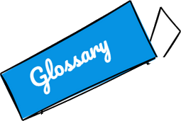
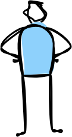
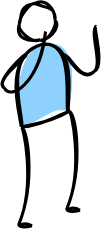
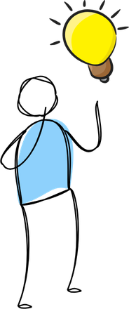
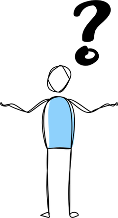
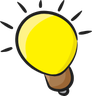
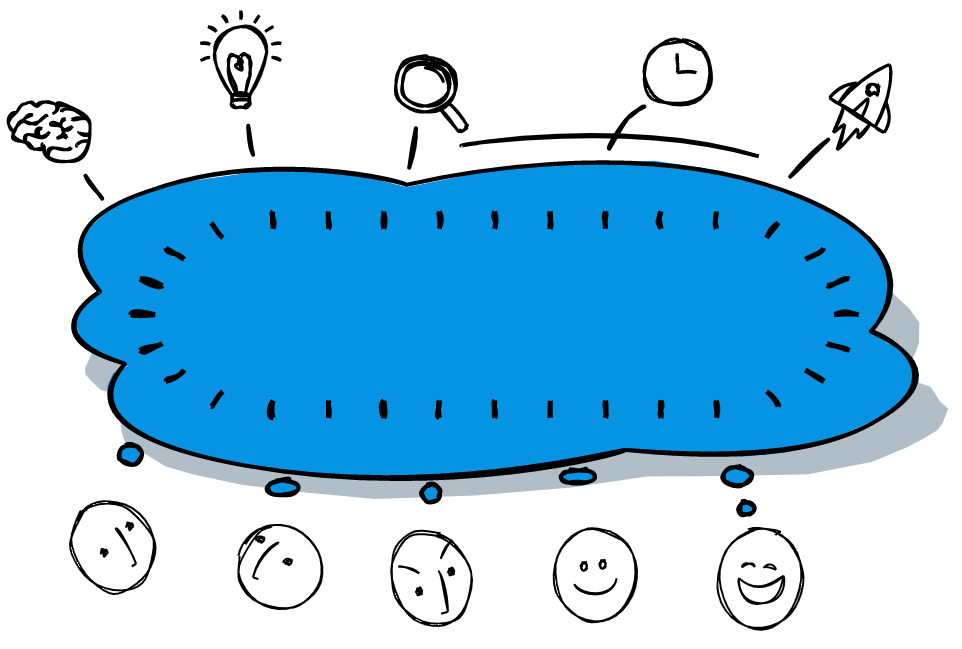

<!doctype html>
<html lang="en">
<head>
<meta charset="utf-8">
<meta name="viewport" content="width=device-width, initial-scale=1">
<meta name="robots" content="noindex">
<title>Have you seen it?</title>
<link rel="stylesheet" href="../../fonts/homework-sans.css">
<style>
/* Lesson tools (pages students open in a breakout room and share on Zoom, ~1280×720).
   Same colours and font as the homework pages; bigger type; task on the left, Useful language on the right. */
:root{
  --ground:#F6F1DC; --card:#FFFFFF; --ink:#1D1D1B; --muted:#6B6B6B; --line:#D9D2B8;
  --instr:#0693E3; --instr-ink:#FFFFFF; --label:#E00000; --ipa:#0E8A7E;
  --hl:#FFFF00; --hl-ink:#1D1D1B; --bubble:#FFFF8C; --bubble-ink:#1D1D1B;
  --date-bg:#FF9900; --date-ink:#1D1D1B;
  --ok:#2E8B3E; --ok-bg:#EAF7EC; --ok-chip:#CDEFD3; --ok-ink:#1E6B2E;
  --no:#C0392B; --no-bg:#FDECEB; --no-chip:#F9D2CF; --no-ink:#A1261B;
  --used:#BFF2B8; --used-ink:#1D1D1B;
  --a:#0693E3; --a-ink:#FFFFFF; --b:#FF9900; --b-ink:#1D1D1B;
  --again:#E67E00; --on-ok:#FFFFFF; --on-no:#FFFFFF; --flip-ink:#0679BD; --tick:#B9B092; --instr-text:#0693E3; --fix-bg:#D6E6FF;
  --shadow:0 2px 0 rgba(29,29,27,.08), 0 10px 28px rgba(29,29,27,.08);
  --font-body:"Homework Sans","Calibri","Carlito","Segoe UI",system-ui,sans-serif;
  --radius:16px;
}
@media (prefers-color-scheme: dark){
  :root:not([data-theme="light"]){
    --ground:#121416; --card:#1C1F23; --ink:#ECECEA; --muted:#A4A7AB; --line:#33373D;
    --instr:#1578C0; --label:#FF7A7A; --ipa:#4CC5B3; --hl:#FFF34D; --hl-ink:#111111;
    --bubble:#3B391F; --bubble-ink:#F3F0D0;
    --ok:#62C774; --ok-bg:#18301E; --ok-chip:#24502E; --ok-ink:#9BE3A8;
    --no:#FF8A80; --no-bg:#3A1E1C; --no-chip:#5A2622; --no-ink:#FFB4AB;
    --used:#2F5E35; --used-ink:#F1FFF0; --a:#1578C0; --again:#FFB14A; --on-ok:#0F2412; --on-no:#2A0D0A; --flip-ink:#6CC3FF; --tick:#70757C; --instr-text:#6CC3FF; --fix-bg:#22345A;
    --shadow:0 2px 0 rgba(0,0,0,.3), 0 10px 28px rgba(0,0,0,.35);
    color-scheme:dark;
  }
}
:root[data-theme="dark"]{
  --ground:#121416; --card:#1C1F23; --ink:#ECECEA; --muted:#A4A7AB; --line:#33373D;
  --instr:#1578C0; --label:#FF7A7A; --ipa:#4CC5B3; --hl:#FFF34D; --hl-ink:#111111;
  --bubble:#3B391F; --bubble-ink:#F3F0D0;
  --ok:#62C774; --ok-bg:#18301E; --ok-chip:#24502E; --ok-ink:#9BE3A8;
  --no:#FF8A80; --no-bg:#3A1E1C; --no-chip:#5A2622; --no-ink:#FFB4AB;
  --used:#2F5E35; --used-ink:#F1FFF0; --a:#1578C0; --again:#FFB14A; --on-ok:#0F2412; --on-no:#2A0D0A; --flip-ink:#6CC3FF; --tick:#70757C; --instr-text:#6CC3FF; --fix-bg:#22345A;
  --shadow:0 2px 0 rgba(0,0,0,.3), 0 10px 28px rgba(0,0,0,.35);
  color-scheme:dark;
}
*{box-sizing:border-box}
[hidden]{display:none!important}
/* the page grows with the screen, like a slide (her slides keep everything at 15 pt or more), and with its height: a laptop screen minus the browser bar is wider than 16:9, so the size is the smaller of the two (the Useful language box should fit without scrolling) */
html{font-size:clamp(15px, min(1.4vw, 2.55vh), 28px)}
html,body{background:var(--ground);margin:0}
body{color:var(--ink);font-family:var(--font-body);line-height:1.45;padding:0 16px}
button{font:inherit;color:inherit;cursor:pointer}
button:disabled{cursor:default}
:focus-visible{outline:3px solid var(--instr);outline-offset:2px;border-radius:8px}
h1,h2,h3{margin:0;text-wrap:balance}
.wrap{max-width:72rem;margin:0 auto;padding:12px 0 16px;display:grid;grid-template-columns:minmax(0,1fr) minmax(300px,30rem);gap:16px 1.4rem;align-items:start}
.main{display:grid;grid-template-columns:minmax(0,1fr);gap:12px;min-width:0}
/* the box stays in view while the task scrolls; a box taller than the screen scrolls with the page (no hidden inner scroll) */
.side{position:sticky;top:10px;display:grid;gap:10px;padding:0 4px 4px 12px;margin-left:-12px}
@media (max-width:860px){ .wrap{grid-template-columns:minmax(0,1fr)} .side{position:static} }   /* minmax: a long title must wrap, not push the page sideways (31.10, a field with its box on a phone) */

/* header */
.head{display:flex;flex-wrap:wrap;align-items:center;gap:8px 14px}
.part{font-weight:900;letter-spacing:.04em;font-size:.85rem;background:var(--date-bg);color:var(--date-ink);padding:3px 10px;border-radius:6px}
.head h1{font-size:1.85rem;line-height:1.1;font-weight:900}
.gear{margin-left:auto;border:2px solid var(--line);background:var(--card);border-radius:99px;padding:4px 12px;font-weight:700;font-size:1rem;color:var(--muted);min-height:38px}
.instr{background:var(--instr);color:var(--instr-ink);border-radius:12px;padding:8px 14px;font-weight:700;font-size:1rem;margin:0}
.hint-top{background:var(--card);border-left:6px solid var(--instr);border-radius:12px;padding:8px 14px;font-weight:700;font-size:1.15rem;margin:0;box-shadow:var(--shadow)}
.situation{background:var(--card);border-left:6px solid var(--date-bg);border-radius:12px;padding:12px 16px;font-size:1.1rem;margin:0;box-shadow:var(--shadow)}
.settings{background:var(--card);border:2px solid var(--line);border-radius:12px;padding:10px 14px;display:flex;flex-wrap:wrap;gap:8px 16px;align-items:center;font-size:.95rem}
.seg{display:inline-flex;border:2px solid var(--line);border-radius:99px;overflow:hidden}
.seg button{border:0;background:transparent;padding:3px 12px;font-weight:700}
.seg button[aria-pressed="true"]{background:var(--instr);color:var(--instr-ink)}

/* buttons */
.btn{border:2px solid var(--instr);background:transparent;color:var(--instr-text);border-radius:12px;padding:10px 20px;font-weight:900;font-size:1.05rem;min-height:48px}
.btn.primary{background:var(--instr);color:var(--instr-ink)}
.btn.big{font-size:1.4rem;padding:16px 30px;border-radius:16px}
.btn:disabled{opacity:.35}
.btn.ok{border-color:var(--ok);color:var(--ok)}
.btn.ok.on,.btn.ok.solid{background:var(--ok);color:var(--on-ok)}
.btn.no{border-color:var(--no);color:var(--no)}
.btn.no.on{background:var(--no);color:var(--on-no)}
.btn.again{border-color:var(--again);color:var(--again)}
.linkish{border:0;background:none;color:var(--instr-text);font-weight:700;text-decoration:underline;padding:4px}
.row-actions{display:flex;flex-wrap:wrap;gap:10px;align-items:center}

/* Useful language box (as on her slides and the homework pages) */
.box{background:var(--card);border:2px solid var(--ink);border-radius:4px;padding:8px 12px 10px;position:relative;display:grid;gap:1px;margin-top:2rem}
.box .sticker{width:8.5rem;height:auto;margin:-1.8rem 0 -4px -8px}
.box-top{display:flex;align-items:flex-start;justify-content:space-between;gap:8px}
.box-top .linkish{font-size:.9rem;margin-top:-6px}
.box h4{margin:6px 0 1px;color:var(--label);font-size:.92rem;letter-spacing:.07em;font-weight:900;text-transform:uppercase}
.box h4:first-of-type{margin-top:2px}
.ph{display:block;width:100%;text-align:left;border:0;background:transparent;border-radius:8px;padding:1px 8px 1px 1.5rem;margin:0 0 0 -8px;line-height:1.2;font-size:1.12rem;position:relative}
.ph::before{content:"";position:absolute;left:8px;top:.5em;width:.5em;height:.5em;border-radius:50%;border:2px solid var(--line)}
button.ph:hover{background:color-mix(in srgb, var(--used) 35%, transparent)}
.ph.used{background:var(--used);color:var(--used-ink)}
.ph .gloss{color:var(--muted);font-style:italic;font-size:.86em}
.ph .bx{font-weight:900}
/* her view: how many screens ticked the phrase (her 30.10 18:45) */
.ph .ph-n{display:inline-block;margin-left:8px;font-size:.78em;font-weight:900;color:var(--instr-ink);background:var(--instr);border-radius:99px;padding:0 8px;vertical-align:1px;white-space:nowrap}
.ph.used::before{content:"✓";border:0;width:auto;height:auto;top:.18em;left:7px;font-weight:900;color:var(--ok)}
.box.static .ph{cursor:default}
.box.static .ph::before{display:none}
.box.static .ph{padding-left:8px}
.peek{display:grid;gap:8px;justify-items:start;background:var(--card);border:2px dashed var(--line);border-radius:12px;padding:14px 16px;margin-top:10px}
.peek p{margin:0;color:var(--muted)}
.extra{margin:0;font-weight:700;background:var(--bubble);color:var(--bubble-ink);border-radius:10px;padding:8px 12px}

/* If you're done: the speaking tasks */
.speak{background:var(--bubble);color:var(--bubble-ink);border-radius:18px;padding:18px 22px;display:grid;gap:12px;box-shadow:var(--shadow)}
.speak.pop{animation:popsoft .35s ease-out}
.speak-top{display:flex;justify-content:space-between;align-items:center;gap:10px}
.speak-h{font-size:.85rem;letter-spacing:.07em;text-transform:uppercase;font-weight:900;color:var(--label)}
.speak-dots{display:flex;gap:0;margin:-6px -5px}
.speak-dots button{border:0;background:none;padding:6px 5px;line-height:0}
.speak-dots button::before{content:"";display:block;width:.6rem;height:.6rem;border-radius:50%;background:color-mix(in srgb, var(--bubble-ink) 22%, transparent);transition:transform .15s}
.speak-dots button.was::before{background:color-mix(in srgb, var(--bubble-ink) 50%, transparent)}
.speak-dots button.on::before{background:var(--instr);transform:scale(1.25)}   /* "you are here" is blue on every page (tools 6) */
.speak-dots button:hover::before{transform:scale(1.35)}
.speak-task{margin:0;font-size:1.45rem;font-weight:700;line-height:1.35}
.speak-task .bx,.follow-q .bx{color:var(--flip-ink);font-weight:900}
/* the stages */
.stages{display:flex;align-items:center;gap:4px;flex-wrap:wrap;margin-left:auto}
.stage-btn{border:2px solid var(--line);background:var(--card);color:var(--muted);border-radius:99px;padding:4px 14px;font-weight:900;font-size:1.02rem}
.stage-btn:hover{border-color:var(--instr);color:var(--instr-text)}
.stage-btn[aria-current="step"]{background:var(--instr);border-color:var(--instr);color:var(--instr-ink)}
.stage-arrow{color:var(--muted);font-weight:900}
@media (max-width:560px){ .stages{margin-left:0} }
/* 📋 all of it, folded */
details.all{background:var(--card);border:2px solid var(--line);border-radius:14px;padding:4px 16px}
.side details.all{background:transparent;border:2px dashed var(--line);font-size:.92rem;padding:2px 14px}
.side details.all[open]{background:var(--card)}
details.all summary{cursor:pointer;font-weight:900;padding:8px 0;color:var(--muted);list-style:none}
details.all summary::-webkit-details-marker{display:none}
details.all summary::after{content:" ▸";}
details.all[open] summary::after{content:" ▾";}
details.all[open] summary{color:var(--ink)}
.all-in{display:grid;gap:10px;padding:2px 0 14px}
.all-row{display:grid;gap:2px;border-top:1px solid var(--line);padding-top:8px}
.all-row .f{color:var(--ink)} .all-row .f .ctx{color:var(--muted)}
.all-row .b{color:var(--flip-ink);font-weight:900}
.all-h{color:var(--label);font-size:.88rem;letter-spacing:.07em;text-transform:uppercase;font-weight:900;margin-top:6px}
.all-sub{font-weight:900}
.all-row p{margin:0}
.all-row .bx{color:var(--flip-ink)}
.all-side{font-size:.8rem;letter-spacing:.06em;text-transform:uppercase;font-weight:900;color:var(--muted)}
/* tactile feedback */
@keyframes pop{0%{transform:scale(1)}35%{transform:scale(1.18)}100%{transform:scale(1)}}
@keyframes popsoft{0%{transform:scale(1)}35%{transform:scale(1.035)}100%{transform:scale(1)}}
.pop{animation:pop .38s cubic-bezier(.3,1.4,.5,1)}
.ph.pop{animation:popsoft .32s ease-out}
.legal{max-width:72rem;margin:0 auto;padding:6px 0 18px;font-size:.8rem;color:var(--muted)}
.legal a{color:var(--muted)}
@media (prefers-reduced-motion: reduce){ *{animation:none!important;transition:none!important} }
.btn.slim{min-height:38px;padding:4px 14px;font-size:.95rem;border-radius:10px}
/* live version (tools 7): Olya's edit buttons and bar — only on her screen */
.live-bar{display:flex;flex-wrap:wrap;align-items:center;gap:6px 12px;background:var(--card);border:2px dashed var(--instr);border-radius:12px;padding:6px 12px;margin-bottom:10px;font-size:.95rem}
.live-bar #live-status{color:var(--muted)}
.live-removed{display:flex;flex-wrap:wrap;gap:6px;align-items:center}
.live-chip,.live-reset{border:2px solid var(--line);background:var(--ground);color:var(--ink);border-radius:99px;padding:1px 10px;font-weight:700;font-size:.9rem}
.live-reset{margin-left:auto;border-color:var(--no);color:var(--no)}
.live-host{display:flex;align-items:flex-start;gap:8px}
.live-host > :first-child{flex:1}
.live-tools{display:inline-flex;gap:4px;flex:none}
.live-b{border:2px solid var(--line);background:var(--card);border-radius:8px;padding:1px 6px;font-size:1rem;line-height:1.4}
.live-b:hover{border-color:var(--instr)}
.speak-dots.draggable button{cursor:grab;touch-action:none}
.speak-dots.draggable button::before{width:.85rem;height:.85rem}
.speak-dots button.dragging{cursor:grabbing;z-index:2;position:relative}
.speak-dots button.dragging::before{transform:scale(1.5);box-shadow:0 2px 8px rgba(0,0,0,.3)}
.speak-dots button.drop-here::before{outline:3px solid var(--instr);outline-offset:2px}
.live-host.is-hidden{flex-direction:column-reverse;gap:4px}   /* hidden, not deleted: greyed, with "Hidden from the groups · ✏️ · Show" on its own line above */
.live-host.is-hidden > :first-child{opacity:.45}
.live-host.is-hidden .live-tools{align-self:flex-start}
.all-row.is-hidden > span:first-child{opacity:.45}
.live-hidden-tag{align-self:center;font-size:.8rem;font-weight:900;letter-spacing:.04em;text-transform:uppercase;color:var(--muted);white-space:nowrap}
.live-b.live-show{border-color:var(--instr);background:var(--instr);color:var(--instr-ink);font-weight:900;padding:1px 10px}
.live-b[data-live-hide]{font-weight:700;font-size:.9rem;padding:1px 8px}
.speak-dots button.hid::before{background:transparent !important;box-shadow:inset 0 0 0 2px var(--muted)}
.live-edit{display:grid;gap:8px;background:var(--card);border:2px solid var(--instr);border-radius:12px;padding:10px 12px}
.live-edit label{display:grid;gap:2px;font-size:.85rem;font-weight:700;color:var(--muted)}
.live-edit textarea{font:inherit;font-size:1.05rem;font-weight:400;color:var(--ink);background:var(--ground);border:2px solid var(--line);border-radius:8px;padding:6px 8px;width:100%;resize:vertical}

/* inside a field page (?embed=1, tools 13): only the working part; its steps small, under the field's own tabs */
.embed .head h1,.embed .head .part{display:none}
.embed footer.legal{display:none}
.embed .stages.sub{margin-left:0}
.embed .stages.sub .stage-btn{font-size:.85rem;padding:2px 10px;border-width:1px}
.embed .stages.sub .stage-arrow{font-size:.8rem}

/* ↺ Again later: "Back in 2–3 cards", once per device (handoff 30.10 15:15) */
.again-hint{position:fixed;transform:translateX(-50%);z-index:60;background:var(--card);color:var(--again);border:2px solid var(--again);font-weight:900;border-radius:99px;padding:6px 18px;font-size:1.1rem;box-shadow:var(--shadow);pointer-events:none;white-space:nowrap}

/* ---------- game pieces (tools 14): coin, wheel, deck — the flat look of her slides: dark outline, solid offset shadow ---------- */
.gcoin{position:relative;display:inline-grid;place-items:center;width:4.6rem;height:4.6rem;perspective:420px;flex:none;vertical-align:middle}
.gc-body{position:absolute;inset:0;transform-style:preserve-3d;will-change:transform}
.gc-rim{position:absolute;inset:0;border-radius:50%;background:#B98200;border:3px solid #1D1D1B}
.gc-face{position:absolute;inset:0;border-radius:50%;display:grid;place-items:center;backface-visibility:hidden;-webkit-backface-visibility:hidden;
  background:radial-gradient(circle at 34% 28%,#FFF0A6 0 18%,#FFD34D 46%,#F2B705 100%);border:3px solid #1D1D1B;box-shadow:inset 0 0 0 5px #F2B705,inset 0 0 0 7px #1D1D1B33}
.gc-heads{transform:translateZ(4.2px)}
.gc-tails,.gc-blank{transform:rotateX(180deg) translateZ(4.2px)}
.gc-blank{transform:translateZ(4.4px)}
.gc-face svg{width:58%;height:58%;fill:#1D1D1B;opacity:.85}
.gc-face span{font-family:Georgia,"Times New Roman",serif;font-weight:900;font-size:2.5rem;line-height:1;color:#1D1D1B;opacity:.85}
.gc-blank span{font-family:inherit;font-size:2rem;opacity:.6}
.gc-shadow{position:absolute;left:12%;right:12%;bottom:-14%;height:16%;border-radius:50%;background:#1D1D1B;opacity:.32;filter:blur(2px);z-index:-1}
.gcoin.sm{width:1.6rem;height:1.6rem;perspective:none}
.gcoin.sm .gc-rim,.gcoin.sm .gc-shadow{display:none}
.gcoin.sm .gc-face{border-width:2px;box-shadow:inset 0 0 0 2px #F2B705}
.gcoin.sm .gc-face span{font-size:.95rem}
.gcoin.big{width:6rem;height:6rem}
.gcoin.big .gc-face span{font-size:3.3rem}

.gwheel{position:relative;width:min(100%,25rem);aspect-ratio:1;margin:0 auto}
.gw-disc{all:unset;cursor:pointer;display:block;width:100%;height:100%;border-radius:50%}
.gw-disc:focus-visible{outline:3px solid var(--instr,#0693E3);outline-offset:4px}
.gw-disc:disabled{cursor:default}
.gw-disc svg{width:100%;height:100%;overflow:visible;display:block}
.gw-under{fill:#1D1D1B}
.gw-sec{stroke:#1D1D1B;stroke-width:1.6;stroke-linejoin:round}
.gw-sec.on{stroke-width:3.2}
.gwheel.landed .gw-sec.on{animation:gwglow 1.2s ease-out}
@keyframes gwglow{0%{filter:brightness(1.35)}100%{filter:none}}
.gw-lbl{font-weight:800;font-family:var(--font-body,system-ui)}
.gw-hub{fill:#FFFFFF;stroke:#1D1D1B;stroke-width:2.4}
.gw-hubt{font-size:8px;font-weight:900;fill:#1D1D1B;letter-spacing:.06em;font-family:var(--font-body,system-ui);pointer-events:none}
.gw-pointer{position:absolute;left:50%;top:-6px;width:28px;height:34px;margin-left:-14px;z-index:2;transform-origin:50% 20%;
  background:#1D1D1B;clip-path:polygon(0 0,100% 0,50% 100%);filter:drop-shadow(0 2px 0 #FFFFFF)}
.gw-pointer::after{content:"";position:absolute;left:4px;right:4px;top:3px;height:22px;background:#FF5A4F;clip-path:polygon(0 0,100% 0,50% 100%)}
.gw-pointer.tick{animation:gwtick .14s ease-out}
@keyframes gwtick{0%{transform:rotate(0)}40%{transform:rotate(-16deg)}100%{transform:rotate(0)}}

.gdeck{display:flex;align-items:center;gap:22px;flex-wrap:wrap}
.gd-pile{all:unset;cursor:pointer;position:relative;width:6.2rem;height:8.6rem;flex:none}
.gd-pile:focus-visible{outline:3px solid var(--instr,#0693E3);outline-offset:4px;border-radius:14px}
.gd-pile i,.gd-back,.gd-b{position:absolute;inset:0;border-radius:12px;border:3px solid #1D1D1B;background:#0693E3;
  background-image:radial-gradient(circle,#FFFFFF55 1.6px,transparent 2px),linear-gradient(#0693E3,#0693E3);background-size:12px 12px,auto;box-shadow:inset 0 0 0 5px #0693E3,inset 0 0 0 7px #FFFFFF}
.gd-pile i:nth-child(1){transform:translate(6px,6px)} .gd-pile i:nth-child(2){transform:translate(4px,4px)} .gd-pile i:nth-child(3){transform:translate(2px,2px)}
.gd-pile i{box-shadow:none}
.gd-back{box-shadow:inset 0 0 0 5px #0693E3,inset 0 0 0 7px #FFFFFF,0 3px 0 #1D1D1B}
.gd-pile:hover .gd-back{transform:translate(-2px,-3px)}
.gcoin,.gc-body{filter:none}   /* a filter on the coin or a parent flattens it: both faces would show */
.gd-pile.empty .gd-back{background:var(--card,#FFFFFF);background-image:none;box-shadow:none;border-style:dashed;border-color:var(--line,#D9D2B8)}
.gd-left{position:absolute;left:0;right:0;bottom:-1.7rem;text-align:center;font-weight:800;font-size:.9rem;color:var(--muted,#6B6B6B)}
.gd-pile.empty .gd-left{bottom:auto;top:42%;color:var(--instr-text,#0693E3)}
.gd-slot{position:relative;min-height:8.6rem;flex:1;min-width:14rem;display:grid}
.gd-card{grid-area:1/1;perspective:900px;width:100%;max-width:24rem;min-height:8.6rem;will-change:transform}
.gd-card.gone{animation:gdgone .38s ease-in forwards}
@keyframes gdgone{to{opacity:0;transform:translate(40px,10px) rotate(4deg) scale(.92)}}
.gd-in{position:relative;width:100%;height:100%;min-height:8.6rem;transform-style:preserve-3d}
.gd-b,.gd-f{backface-visibility:hidden;-webkit-backface-visibility:hidden}
.gd-f{position:absolute;inset:0;transform:rotateY(180deg);border-radius:12px;border:3px solid #1D1D1B;background:#FFFFFF;color:#1D1D1B;box-shadow:0 4px 0 #1D1D1B;
  padding:12px 16px;display:grid;align-content:center;gap:4px;font-size:1.15rem;font-weight:700;line-height:1.3}
.gd-f .gd-k{font-size:.8rem;font-weight:900;letter-spacing:.07em;text-transform:uppercase;color:#E00000}
@media (prefers-reduced-motion: reduce){ .gw-pointer.tick,.gwheel.landed .gw-sec.on,.gd-card.gone,.gt-task,.gt-task.shown .gt-a{animation:none} }

.gdie{width:3.4rem;height:3.4rem;flex:none;border-radius:12px;background:#FFFFFF;border:3px solid #1D1D1B;display:grid;grid-template:repeat(3,1fr)/repeat(3,1fr);padding:.48rem;box-shadow:0 4px 0 #1D1D1B;will-change:transform}
.gdie i{width:.62rem;height:.62rem;border-radius:50%;background:#1D1D1B;place-self:center;visibility:hidden}
.gdie i.p{visibility:visible}
.gdie.blank{position:relative}
.gdie.blank::after{content:"?";position:absolute;inset:0;display:grid;place-items:center;font-weight:900;font-size:1.9rem;line-height:1;color:#1D1D1B}

.gttt{display:grid;grid-template-columns:auto minmax(15rem,1fr);gap:20px;align-items:start}
@media (max-width:700px){ .gttt{grid-template-columns:1fr} }
.gt-board{display:grid;grid-template-columns:repeat(var(--n),1fr);gap:8px;width:calc(var(--n) * 6.6rem);max-width:100%}
.gt-cell{all:unset;box-sizing:border-box;display:block;cursor:pointer;aspect-ratio:1;perspective:500px}
.gt-cell:disabled{cursor:default}
.gt-cell:focus-visible{outline:3px solid var(--instr,#0693E3);outline-offset:3px;border-radius:12px}
.gt-in{position:relative;display:block;width:100%;height:100%;transform-style:preserve-3d;transition:transform .55s cubic-bezier(.2,.8,.2,1)}
.gt-cell.open .gt-in,.gt-cell.taken .gt-in{transform:rotateY(180deg)}
.gt-back,.gt-front{position:absolute;inset:0;border-radius:12px;border:3px solid #1D1D1B;display:grid;place-items:center;backface-visibility:hidden;-webkit-backface-visibility:hidden;box-shadow:0 4px 0 #1D1D1B}
.gt-back{background:#0693E3;color:#FFFFFF;font-weight:900;font-size:1.6rem;background-image:radial-gradient(circle,#FFFFFF44 1.6px,transparent 2px);background-size:12px 12px}
.gt-cell:not(:disabled):hover .gt-back{filter:brightness(1.08)}
.gt-front{transform:rotateY(180deg);background:#FFFFFF;color:#1D1D1B;font-weight:900;font-size:2rem}
.gt-cell.open .gt-front{background:#FFF8C4}
.gt-cell.win .gt-front{background:#BFF2B8}
.gt-x,.gt-o{width:72%;height:72%;fill:none;stroke-width:6;stroke-linecap:round}
.gt-x{stroke:#0693E3} .gt-o{stroke:#FF9900}
.gt-cell.fresh .gt-x path,.gt-cell.fresh .gt-o circle{stroke-dasharray:80;stroke-dashoffset:80;animation:gtdraw .5s .35s ease-out forwards}
@keyframes gtdraw{to{stroke-dashoffset:0}}
.gt-turn{display:flex;align-items:center;gap:8px;margin:0;font-size:1.15rem}
.gt-turn .gt-x,.gt-turn .gt-o{width:1.8rem;height:1.8rem;stroke-width:7}
.gt-turn.big{font-size:1.5rem;font-weight:900}
.gt-turn.big .gt-x,.gt-turn.big .gt-o{width:2.4rem;height:2.4rem}
.gt-side{display:grid;gap:12px;align-content:start;justify-items:start}
.gt-task{justify-self:stretch}
.gt-task{border:3px solid #1D1D1B;border-radius:14px;background:#FFFFFF;color:#1D1D1B;box-shadow:0 4px 0 #1D1D1B;padding:12px 16px;display:grid;gap:10px;animation:gtin .35s ease-out}
@keyframes gtin{from{opacity:0;transform:translateY(8px)}to{opacity:1;transform:none}}
.gt-task.shown{animation:none}
.gt-task.shown .gt-a{animation:gtain .25s ease-out}
@keyframes gtain{from{opacity:0}to{opacity:1}}
.gt-q{margin:0;font-size:1.25rem;font-weight:800;line-height:1.35}
.gt-a{margin:0;font-size:1.15rem;font-weight:800;color:#0679BD;background:#D6E6FF;border-radius:6px;padding:2px 8px;justify-self:start}
.gt-acts{display:flex;flex-wrap:wrap;gap:8px}

.gsnl{display:grid;grid-template-columns:minmax(0,1.6fr) minmax(14rem,1fr);gap:20px;align-items:start}
@media (max-width:760px){ .gsnl{grid-template-columns:1fr} }
.gs-board{width:100%;height:auto;display:block}
.gs-frame{fill:#1D1D1B}
.gs-sq{stroke:#1D1D1B;stroke-width:2}
.gs-n{font-weight:900;font-size:20px;fill:#1D1D1B;opacity:.75;font-family:var(--font-body,system-ui)}
.gs-rail{stroke-width:7;stroke-linecap:round;paint-order:stroke}
.gs-ladder .gs-rail,.gs-ladder .gs-rung{filter:drop-shadow(0 0 0 #1D1D1B)}
.gs-rung{stroke-width:5;stroke-linecap:round}
.gs-sbody-o{fill:none;stroke:#1D1D1B;stroke-width:17;stroke-linecap:round}
.gs-sbody{fill:none;stroke-width:11;stroke-linecap:round}
.gs-shead{stroke:#1D1D1B;stroke-width:3}
.gs-pawn circle:first-child{stroke:#1D1D1B;stroke-width:3.5}
.gs-side{display:grid;gap:12px;align-content:start;justify-items:start}
.gs-dot{display:inline-block;width:1.3rem;height:1.3rem;border-radius:50%;border:3px solid #1D1D1B}
.gs-diebtn{all:unset;cursor:pointer;padding:8px 6px 10px}
.gs-diebtn:focus-visible{outline:3px solid var(--instr,#0693E3);outline-offset:3px;border-radius:12px}
.gs-diebtn:disabled{cursor:wait}
.gs-hint{margin:-6px 0 0;color:var(--muted,#6B6B6B);font-weight:700}
.gs-msg{margin:0;font-weight:900;font-size:1.15rem}

/* ⏱ timer */
.gtimer{position:relative;display:grid;justify-items:center;gap:10px}
.gti-ring{width:9rem;height:9rem;transform:rotate(-90deg)}
.gtimer.compact .gti-ring{width:5.2rem;height:5.2rem}
.gti-track{fill:#FFFFFF;stroke:#1D1D1B22;stroke-width:9}
.gti-bar{fill:none;stroke:#0693E3;stroke-width:9;stroke-linecap:round;stroke-dasharray:100}
.gtimer.low .gti-bar{stroke:#FF9900}
.gtimer.end .gti-bar{stroke:#FF9900}
.gti-num{position:absolute;top:0;height:9rem;display:grid;place-items:center;font-weight:900;font-size:2.1rem;color:#1D1D1B;font-variant-numeric:tabular-nums}
.gtimer.compact .gti-num{height:5.2rem;font-size:1.35rem}
.gtimer.end .gti-num{font-size:1.15rem;color:#C26A00;animation:gtend 1.4s ease-in-out 2}
.gtimer.compact.end .gti-num{font-size:.8rem}
@keyframes gtend{50%{transform:scale(1.12)}}
.gti-acts{display:flex;flex-wrap:wrap;gap:8px;align-items:center;justify-content:center}
.gti-ch{display:inline-flex;gap:4px}
.gti-ch button{font:inherit;font-size:.85rem;font-weight:800;border:2px solid var(--line,#D9D2B8);background:var(--card,#FFF);color:var(--ink,#1D1D1B);border-radius:99px;padding:2px 10px;cursor:pointer}
.gti-ch button.on{background:var(--instr,#0693E3);border-color:var(--instr,#0693E3);color:#FFFFFF}

/* ⌛ hourglass */
.ghg{display:flex;align-items:center;gap:22px;flex-wrap:wrap}
.ghg-btn{all:unset;cursor:pointer;display:block}
.ghg-btn:focus-visible{outline:3px solid var(--instr,#0693E3);outline-offset:4px;border-radius:10px}
.ghg-svg{width:7.5rem;height:auto;display:block;overflow:visible}
.ghg-rot{transform-origin:60px 90px;transform-box:view-box}
.ghg-glass{fill:#EAF6FF}
.ghg-line{fill:none;stroke:#1D1D1B;stroke-width:3;stroke-linejoin:round}
.ghg-sand{fill:#F2B705}
.ghg-stream{stroke:#F2B705;stroke-width:2.4;transition:opacity .2s}
.ghg-cap{fill:#B9772E;stroke:#1D1D1B;stroke-width:3}
.ghg-post{stroke:#1D1D1B;stroke-width:4;stroke-linecap:round}
.ghg-side{display:grid;gap:8px;justify-items:start}
.ghg-num{font-weight:900;font-size:1.9rem;font-variant-numeric:tabular-nums}
.ghg.end .ghg-num{color:#C26A00;animation:gtend 1.4s ease-in-out 2}
.ghg-hint{color:var(--muted,#6B6B6B);font-weight:700;font-size:.92rem}

/* 🧠 memo */
.gmemo{display:grid;gap:12px;justify-items:start}
.gm-big{margin:0;font-size:1.2rem;font-weight:800}
.gmemo.look{grid-template-columns:auto 1fr;align-items:start}
.gmemo.look .btn{grid-column:1/-1}
.gm-list{margin:0;padding:0;list-style:none;display:flex;flex-wrap:wrap;gap:8px}
.gm-list li{background:#FFFFFF;color:#1D1D1B;border:3px solid #1D1D1B;border-radius:10px;padding:4px 12px;font-weight:800;font-size:1.1rem;box-shadow:0 3px 0 #1D1D1B}
.gm-list.check li{padding:0;border:0;box-shadow:none;background:none}
.gm-list.check button{font:inherit;font-weight:800;font-size:1.1rem;border:3px solid #1D1D1B;border-radius:10px;padding:4px 12px;background:#FFFFFF;color:#1D1D1B;box-shadow:0 3px 0 #1D1D1B;cursor:pointer}
.gm-list.check button.on{background:#BFF2B8}
.gm-cover{display:flex;flex-wrap:wrap;gap:8px}
.gm-cover span{width:6.5rem;height:2.2rem;border-radius:10px;border:3px solid #1D1D1B;background:#8BE2FF;box-shadow:0 3px 0 #1D1D1B}
.gm-lists{display:grid;gap:8px}
.gm-g{display:grid;gap:4px}
.gm-h{margin:0;font-size:.8rem;font-weight:900;letter-spacing:.06em;color:#E8493F;text-transform:uppercase}

/* 🧠 memory */
.gmem{display:grid;grid-template-columns:auto minmax(13rem,1fr);gap:20px;align-items:start}
@media (max-width:700px){ .gmem{grid-template-columns:minmax(0,1fr)} }
.gmem,.gmem>*{min-width:0}
.gmm-grid{display:grid;grid-template-columns:repeat(var(--c),minmax(0,7.2rem));gap:8px;width:calc(var(--c) * 7.2rem + (var(--c) - 1) * 8px);max-width:100%}
.gmm-card{all:unset;box-sizing:border-box;display:block;height:5.2rem;cursor:pointer;perspective:600px}
.gmm-card:focus-visible{outline:3px solid var(--instr,#0693E3);outline-offset:3px;border-radius:12px}
.gmm-in{position:relative;display:block;width:100%;height:100%;transform-style:preserve-3d;transition:transform .5s cubic-bezier(.2,.8,.2,1)}
.gmm-card.up .gmm-in{transform:rotateY(180deg)}
.gmm-b,.gmm-f{position:absolute;inset:0;border-radius:12px;border:3px solid #1D1D1B;backface-visibility:hidden;-webkit-backface-visibility:hidden;box-shadow:0 3px 0 #1D1D1B;display:grid;place-items:center;text-align:center;padding:4px 6px}
.gmm-b{background:#0693E3;background-image:radial-gradient(circle,#FFFFFF55 1.6px,transparent 2px);background-size:12px 12px}
.gmm-f{transform:rotateY(180deg);background:#FFFFFF;color:#1D1D1B;font-weight:800;font-size:.98rem;line-height:1.2}
@media (max-width:520px){ .gmm-card{height:4.4rem} .gmm-f{font-size:.8rem} }
.gmm-card.got .gmm-f{background:#BFF2B8}
.gmm-card.got{cursor:default}
.gmm-side{display:grid;gap:8px}
.gmm-msg{margin:0;font-size:1.15rem;font-weight:800;line-height:1.4}
.gmm-n{margin:0;color:var(--muted,#6B6B6B);font-weight:700}

/* ⬢ hex */
.ghex{display:grid;grid-template-columns:minmax(0,1.5fr) minmax(14rem,1fr);gap:20px;align-items:start}
@media (max-width:760px){ .ghex{grid-template-columns:1fr} }
.gh-board{width:100%;height:auto;display:block;overflow:visible}
.gh-cell polygon{stroke:#1D1D1B;stroke-width:2.6;stroke-linejoin:round;transition:fill .3s}
.gh-cell{cursor:pointer;outline:none}
.gh-cell.taken{cursor:default}
.gh-cell:not(.taken):hover polygon{fill:#FFF3B0}
.gh-cell:focus-visible polygon{stroke:#0693E3;stroke-width:4}
.gh-cell text{font-weight:900;font-size:22px;fill:#1D1D1B;font-family:var(--font-body,system-ui);pointer-events:none}
.gh-cell.taken text{fill:#FFFFFF}
.gh-edge{stroke-width:7;stroke-linecap:round}
.gh-goal{color:var(--muted,#6B6B6B);font-weight:700;font-size:.92rem}

/* ▪ dots and boxes */
.gdots{display:grid;grid-template-columns:auto minmax(14rem,1fr);gap:20px;align-items:start}
@media (max-width:700px){ .gdots{grid-template-columns:1fr} }
.gdt-board{width:17rem;max-width:100%;height:auto;display:block}
.gdt-line{stroke:#1D1D1B18;stroke-width:9;stroke-linecap:round}
.gdt-l.free{cursor:pointer}
.gdt-l.free .gdt-line{stroke:#1D1D1B30}
.gdt-l.free:hover .gdt-line{stroke:#1D1D1B80}
.gdt-l.on .gdt-line{stroke-width:8}
.gdt-hit{stroke:transparent;stroke-width:24;stroke-linecap:round}
.gdt-dot{fill:#1D1D1B}
.gdt-score{margin:0;display:flex;align-items:center;gap:6px;font-weight:900;font-size:1.2rem}

/* 🎲 word die */
.gwd{display:grid;grid-template-columns:auto minmax(0,1fr);gap:14px 16px;align-items:center}
.gwd-deck{grid-column:1/-1;margin-bottom:1.4rem}
.gwd-task{margin:0;font-size:1.3rem;font-weight:900;min-height:1.6em}
.gwd-faces{grid-column:1/-1;margin:0;padding:0;list-style:none;display:flex;flex-wrap:wrap;gap:6px}
.gwd-faces li{border:2px solid var(--line,#D9D2B8);border-radius:99px;padding:2px 10px;font-size:.9rem;font-weight:700;color:var(--muted,#6B6B6B)}
.gwd-faces li.on{background:#FFD34D;border-color:#1D1D1B;color:#1D1D1B}

/* 🖼 Big reveal */
.grv{display:grid;grid-template-columns:minmax(0,1.7fr) minmax(15rem,1fr);gap:20px;align-items:start}
@media (max-width:760px){ .grv{grid-template-columns:minmax(0,1fr)} }
.grv-pic{position:relative;border:3px solid #1D1D1B;border-radius:14px;overflow:hidden;box-shadow:0 5px 0 #1D1D1B;background:#1D1D1B;aspect-ratio:3/2}
.grv-pic img{display:block;width:100%;height:100%;object-fit:cover}
.grv-tiles{position:absolute;inset:0;display:grid;grid-template-columns:repeat(var(--c),1fr);grid-template-rows:repeat(var(--r),1fr);perspective:900px}
.grv-tile{all:unset;box-sizing:border-box;cursor:pointer;display:grid;place-items:center;border:1.5px solid #1D1D1B;font-weight:900;font-size:clamp(1.3rem,3.2vw,2.3rem);
  transition:transform .55s cubic-bezier(.3,.6,.3,1),opacity .45s ease .1s,box-shadow .2s;backface-visibility:hidden}
.grv-tile:hover{filter:brightness(1.06)}
.grv-tile:focus-visible{outline:4px solid #0693E3;outline-offset:-6px}
.grv-tile.sel{box-shadow:inset 0 0 0 6px #0693E3;filter:brightness(1.08)}
.grv-tile.gone{transform:rotateY(90deg) scale(.86);opacity:0;pointer-events:none}
.grv-ask{margin:0;font-size:1.3rem;font-weight:900;line-height:1.3}
.grv-say{margin:-4px 0 0;font-size:1.1rem;font-weight:700;color:var(--ink,#1D1D1B)}
.grv-n{margin:0;font-weight:800;color:var(--muted,#6B6B6B)}

/* 🪿 the goose track */
.ggo{display:grid;grid-template-columns:minmax(0,1.7fr) minmax(15rem,1fr);gap:20px;align-items:start}
@media (max-width:760px){ .ggo{grid-template-columns:minmax(0,1fr)} }
.ggo-board{position:relative;display:grid;grid-template-columns:repeat(var(--c),minmax(0,1fr));grid-auto-rows:5.2rem;gap:14px 12px;padding:6px}
.ggo-road{position:absolute;left:0;top:0;pointer-events:none;overflow:visible}
.ggo-road-o{fill:none;stroke:#1D1D1B;stroke-width:24;stroke-linejoin:round;stroke-linecap:round}
.ggo-road-i{fill:none;stroke:#F3E9CF;stroke-width:16;stroke-linejoin:round;stroke-linecap:round}
.ggo-sq{position:relative;border:3px solid #1D1D1B;border-radius:12px;box-shadow:0 4px 0 #1D1D1B;background:#FFFFFF;color:#1D1D1B;display:grid;place-items:center;padding:4px 6px;text-align:center}
.ggo-sq.start{background:#0693E3;color:#FFFFFF}
.ggo-sq.finish{background:#FFD34D}
.ggo-sq.goose{background:#FFFFFF}
.ggo-n{position:absolute;left:6px;top:2px;font-size:.75rem;font-weight:800;opacity:.6}
.ggo-t{font-weight:800;font-size:.98rem;line-height:1.15;overflow-wrap:break-word;hyphens:auto}
@media (max-width:560px){ .ggo-t{font-size:.85rem} .ggo-board{grid-auto-rows:4.6rem} }
.ggo-sq.start .ggo-t{font-size:1.15rem;font-weight:900}
.ggo-sq.finish .ggo-t,.ggo-sq.goose .ggo-t{font-size:2rem}
.ggo-pawn{position:absolute;width:1.75rem;height:1.75rem;border-radius:50%;border:3px solid #1D1D1B;box-shadow:0 3px 0 #1D1D1B;transform:translate(-50%,-50%);z-index:2;pointer-events:none}
.ggo-pawn::after{content:"";position:absolute;left:22%;top:16%;width:30%;height:30%;border-radius:50%;background:#FFFFFF;opacity:.55}
.ggo-coin{all:unset;cursor:pointer;padding:18px 10px 6px}
.ggo-coin:disabled{cursor:wait}
.ggo-coin:focus-visible{outline:3px solid var(--instr,#0693E3);outline-offset:3px;border-radius:50%}
.ggo-d{margin:0;font-size:1.1rem;font-weight:700}
.ggo-task{margin:0;font-size:1.05rem;font-weight:700;color:var(--ink,#1D1D1B)}
.gs-hint .gcoin.sm{vertical-align:-.3em}

/* 🏝 Discussion islands */
.gis{display:grid;grid-template-columns:minmax(0,1.7fr) minmax(15rem,1fr);gap:20px;align-items:start}
@media (max-width:760px){ .gis{grid-template-columns:minmax(0,1fr)} }
.gis-map{width:100%;height:auto;display:block;max-height:31rem}
.gis-sea{fill:#BFE7FF;stroke:#1D1D1B;stroke-width:4}
.gis-wave{fill:none;stroke:#7CC7F2;stroke-width:3.5;stroke-linecap:round}
.gis-isle{cursor:pointer;outline:none}
.gis-shadow{fill:#1D1D1B}
.gis-sand{fill:#FFE7A3;stroke:#1D1D1B;stroke-width:4;transition:fill .3s}
.gis-grass{fill:#8EDBB3}
.gis-label{font-weight:900;font-size:31px;fill:#1D1D1B;pointer-events:none}
.gis-flag{font-size:30px;opacity:0;transition:opacity .4s}
.gis-isle.seen .gis-flag{opacity:1}
.gis-isle:hover .gis-sand,.gis-isle:focus-visible .gis-sand{fill:#FFD34D}
.gis-isle.on .gis-sand{fill:#FFD34D;stroke-width:6}
.gis-isle.on .gis-grass{fill:#6FD39F}
.gis-hull{fill:#FF9900;stroke:#1D1D1B;stroke-width:3;stroke-linejoin:round}
.gis-mast{stroke:#1D1D1B;stroke-width:3.5;stroke-linecap:round}
.gis-sail{fill:#FFFFFF;stroke:#1D1D1B;stroke-width:3;stroke-linejoin:round}
.gis-sail.b{fill:#F78DA7}
.gis-notes{font:900 18px/1 sans-serif;fill:#0679BD;opacity:0;transition:opacity .3s}
.gis-map.sailing .gis-notes{opacity:1}
.gis-name{margin:0;font-size:1rem;font-weight:900;letter-spacing:.04em;text-transform:uppercase;color:var(--label,#CF2E2E)}
@media (prefers-reduced-motion: reduce){ .grv-tile{transition:none} }

/* ---------- revision field (tools 13, B2 revision 30.10, her wish 03:26): one Jeopardy question = one page — Remember → 📖 text → 🃏 cards → 💬 speaking ---------- */
.wrap.nobox{grid-template-columns:minmax(0,1fr);max-width:72rem}
.wrap.nobox .side{display:none}
.wrap.wide{grid-template-columns:minmax(0,1fr);max-width:90rem}
.wrap.wide .side{display:none}
.head .part{white-space:nowrap}
.head h1{font-size:1.6rem}
/* tools 18: a compact stage bar (L9: seven stages beside the box took four rows): 🎓 How it works on the title's row, smaller pills */
.head .howto{order:1;margin-left:0}
.head .stages{order:2}
.head .stage-btn{padding:3px 10px;font-size:.96rem}
.head .stage-arrow{font-size:.85rem}
.blk{background:var(--card);border-radius:var(--radius);box-shadow:var(--shadow);padding:14px 18px;display:grid;gap:12px;align-content:start}
.blk.enter{animation:enterR .45s cubic-bezier(.2,.8,.2,1)}
@keyframes enterR{from{opacity:0;transform:translateX(50px)}to{opacity:1;transform:none}}
.finstr{background:var(--card);color:var(--ink);border-left:6px solid var(--instr);border-radius:12px;padding:8px 14px;font-weight:700;font-size:1.12rem;margin:0;box-shadow:var(--shadow)}
.finstr .bx{color:var(--flip-ink)}
.ctx,.lctx{color:var(--muted)}
.lctx{margin:4px 0 0;font-style:italic;font-size:1rem}
.bx{color:var(--flip-ink);font-weight:900}
.m-good{background:#BFF2B8;color:#111111;border-radius:3px}
.m-del{text-decoration:line-through;color:#8A8D91}
.ipa{color:#B45309;font-weight:600}
.blk-nav{display:flex;flex-wrap:wrap;gap:10px;align-items:center}
.blk-nav .grow{flex:1}
.stage-intro{display:grid;place-items:center}
.stage-intro.enter{animation:enterR .45s cubic-bezier(.2,.8,.2,1)}
.si-card{position:relative;width:min(100%, calc(58vh * 962 / 649 + 40px));background:#FFFFFF;border-radius:var(--radius);box-shadow:var(--shadow);padding:16px 20px;display:grid;place-items:center;container-type:inline-size}
.si-card img{width:100%;height:auto;max-height:58vh;object-fit:contain;display:block}
.si-name{position:absolute;left:50%;top:50%;transform:translate(-50%,-62%);color:#1D1D1B;font-family:"Permanent Marker","Segoe Print","Bradley Hand","Chalkboard SE","Comic Sans MS",cursive;font-size:clamp(1.6rem, 8cqw, 3.4rem);font-weight:700;white-space:nowrap}
.si-name.long{font-size:clamp(1.2rem, 6.4cqw, 2.8rem);white-space:normal;width:66%;text-align:center;line-height:1.08}   /* tools 18 (her 19:46): a long stage name gets smaller with the cloud and may take two lines */
.stepbar{position:sticky;bottom:0;z-index:6;display:flex;align-items:center;gap:12px;padding:10px 0 12px;background:linear-gradient(to bottom, transparent, var(--ground) 35%)}
.stepbar .btn{min-width:8.5rem;font-size:1.1rem}
.stepbar .step-msg{text-align:center;font-weight:800;color:var(--again)}
.stepbar .step-mid{flex:1;display:grid;justify-items:center;gap:2px}
.sdots{display:flex;gap:8px}
.sdots button{width:2rem;height:2rem;border-radius:50%;border:2px solid var(--line);background:var(--card);color:var(--muted);font:inherit;font-weight:900;font-size:.95rem;padding:0;display:grid;place-items:center}
.sdots button.was{border-color:var(--instr);color:var(--instr-text);cursor:pointer}
.sdots button.on{background:var(--instr);border-color:var(--instr);color:var(--instr-ink)}
.sdots button:disabled{cursor:default}
@media (max-width:560px){ .stepbar{gap:6px} .stepbar .btn{min-width:0;padding:10px 12px} .sdots{gap:4px} .sdots button{width:1.6rem;height:1.6rem;font-size:.8rem} }   /* four screens + Back / Next fit a phone (31.10) */
.blk .speak .row-actions [data-speak-next],.blk .speak .row-actions [data-speak-prev]{display:none}
.bparts{display:flex;gap:6px;align-items:center}
.bparts .bp-lbl{font-weight:800;color:var(--muted);font-size:.9rem}
.bparts button{width:1.7rem;height:1.7rem;border-radius:50%;border:2px solid var(--line);background:var(--card);color:var(--muted);font:inherit;font-weight:900;font-size:.85rem;padding:0;cursor:pointer;display:grid;place-items:center}
.bparts button.was{background:var(--line);color:var(--ink)}
.bparts button.on{background:var(--instr);border-color:var(--instr);color:var(--instr-ink)}
.bdots{display:flex;gap:6px}
.bdots button{width:14px;height:14px;border-radius:50%;border:2px solid var(--line);background:var(--card);padding:0}
.bdots button.on{background:var(--instr);border-color:var(--instr);transform:scale(1.2)}
.bdots button.was{background:var(--line)}
.board-back{display:flex;gap:10px;align-items:center}
.board-top{font-weight:900;color:var(--instr-text);text-decoration:none;border:2px solid var(--line);border-radius:99px;padding:2px 12px;background:var(--card);font-size:.95rem;white-space:nowrap}
.board-back a{font-weight:900;color:var(--instr-text);text-decoration:none;border:2px solid var(--line);border-radius:99px;padding:4px 14px;background:var(--card)}
/* 📖 a gapped text, as the homework dlg: first letters blue bold, the rest yellow; tap to open; IPA hidden orange */
.tx{display:grid;grid-template-columns:minmax(0,1.5fr) minmax(0,1fr);gap:14px;align-items:start}
.tx.single{grid-template-columns:minmax(0,1fr)}
.dlg p{margin:0 0 6px;font-size:1.18rem;line-height:1.55}
.dlg .sp{font-weight:900;margin-right:4px}
.gp{font:inherit;border:0;padding:0;background:transparent;cursor:pointer;color:inherit}
:root{--first:#0000FF}
@media (prefers-color-scheme: dark){ :root:not([data-theme="light"]){--first:#7DB8FF} }
:root[data-theme="dark"]{--first:#7DB8FF}   /* first letters: the slide blue; on a dark screen a light blue (pure blue on dark is unreadable) */
.gp .f{color:var(--first);font-weight:900}
.gp .r{background:#FFFF00;color:transparent;border-radius:3px;padding:0 1px}
.gp.open .r,.gp.open .f{color:#1D1D1B;font-weight:700;background:#FFFF00}   /* opened: the whole chunk black bold on the yellow (her read-through 30.10: blue on yellow is hard on the eyes) */
.gp.open .f{border-radius:3px 0 0 3px;padding-left:1px}
.gp.o .r{background:#F6B26B}
.gp.o.open .r{background:#FDE7CF;color:#B45309;font-weight:600}
.gp:not(.open):hover .r{outline:2px solid #E8D800}
.bm{border:0;background:transparent;font-size:.8rem;padding:0 2px;opacity:.3;cursor:pointer;vertical-align:super}
.bm.on{opacity:1}
.bm:hover{opacity:.8}
.gloss{background:var(--ground);border-radius:12px;padding:8px 12px;display:grid;gap:4px;font-size:1.02rem}
.gloss .gl{margin:0;line-height:1.35}
.gloss .ru{color:var(--muted);font-style:italic}
.tx-tools{display:flex;gap:8px;align-items:center;flex-wrap:wrap}
.tx-tools .hint{color:var(--muted);font-size:.9rem}
.parts{display:grid;grid-template-columns:repeat(auto-fit,minmax(18rem,1fr));gap:14px}
.part-h{font-weight:900;color:var(--label);letter-spacing:.05em;text-transform:uppercase;font-size:.85rem;margin:0 0 4px}
/* ✍️ write: the situation, their message, Send; on -live her notes above the input */
.witem{display:grid;gap:6px;border-top:1px dashed var(--line);padding-top:10px}
.witem:first-of-type{border-top:0;padding-top:0}
.witem .lbl{font-weight:900;font-size:.85rem;letter-spacing:.06em;text-transform:uppercase;color:var(--label)}
.witem .inmsg{justify-self:start;background:#FFFFFF;color:#111111;border-radius:12px;border-top-left-radius:3px;padding:6px 10px;box-shadow:0 1px 0 rgba(0,0,0,.12);border:1px solid var(--line);font-size:1.05rem}
.witem textarea{font:inherit;font-size:1.1rem;border:2px solid var(--line);border-radius:12px;padding:8px 12px;min-height:3.2rem;resize:vertical;background:var(--card);color:var(--ink)}
.witem .sentmsg{justify-self:end;background:#D9FDD3;color:#111111;border-radius:12px;border-top-right-radius:3px;padding:6px 10px;font-size:1.05rem;max-width:90%}
.witem .w-row{display:flex;gap:8px;align-items:center;flex-wrap:wrap}
.share-note{font-size:.85rem;color:var(--muted);margin:0}
.t-notes{display:grid;gap:6px}
.t-notes:empty{display:none}
/* 🔁 say: the task, Show the answer, one tap: how close were we */
.say-lines p,.ans-lines p{margin:0 0 4px;font-size:1.15rem;line-height:1.45}
.ans-lines{border-top:2px dashed var(--line);padding-top:10px}
.ans-h{font-weight:900;color:var(--ok);letter-spacing:.06em;text-transform:uppercase;font-size:.85rem}
/* her 14:55: each situation on its own island (two dialogues read as one sheet); no "Check" label — the answer lines simply appear, marked */
.say-isles{display:grid;grid-template-columns:repeat(auto-fit,minmax(min(100%,380px),1fr));gap:12px;align-items:start}
.say-isle{background:var(--ground);border-radius:12px;padding:10px 14px 6px}
.say-lines p.new{border-left:4px solid var(--ok);padding-left:10px;margin-left:-14px;animation:ansIn .35s ease-out}
@keyframes ansIn{from{opacity:0;transform:translateY(6px)}to{opacity:1;transform:none}}
@media (prefers-reduced-motion: reduce){.say-lines p.new{animation:none}}
.say-lines .ans-h{margin:6px 0 2px}
.selfcheck{display:flex;flex-wrap:wrap;gap:8px;align-items:center}
.selfcheck .q{font-weight:800;color:var(--muted)}
.selfcheck button{border:2px solid var(--line);background:var(--card);color:var(--ink);border-radius:99px;padding:4px 12px;font-weight:800}
.selfcheck button.on{background:var(--instr);border-color:var(--instr);color:var(--instr-ink)}
/* 🖼 picture */
.pic img{width:100%;height:auto;max-height:52vh;object-fit:contain;border-radius:12px;display:block;background:var(--ground)}
.pic .task{font-size:1.15rem;margin:0}
.ptimer-row{margin:0 0 10px}
.btn.ptimer{font-size:1.25rem;min-width:8.5rem;font-variant-numeric:tabular-nums}
.btn.ptimer.run{background:var(--instr);color:var(--instr-ink)}
.btn.ptimer.up{border-color:var(--ok);color:var(--ok)}
.stepbar [data-step].ready{animation:nextGlow 1.1s ease-in-out 3}
@keyframes nextGlow{50%{box-shadow:0 0 0 7px rgba(6,147,227,.3)}}
.stepbar [data-step].ready-still{box-shadow:0 0 0 5px rgba(6,147,227,.25)}
.mdl-pic{display:grid;gap:12px}
.mdl-pic .pic img{max-height:30vh;width:auto;max-width:100%;margin:0 auto}
.side-pic img{max-height:36vh;width:100%;object-fit:contain}
@media (min-width:861px){ .mdl-pic.has-side > .pic{display:none} }
@media (max-width:860px){ .side-pic{display:none} }
@media (prefers-reduced-motion: reduce){ .stepbar [data-step].ready{animation:none;box-shadow:0 0 0 5px rgba(6,147,227,.3)} }
/* 🃏 cards */
.deck{display:grid;gap:12px}
.fdots{display:flex;flex-wrap:wrap;gap:6px;align-items:center}
.fdots span,.fdots button{width:.95rem;height:.95rem;border-radius:50%;background:var(--line);border:0;padding:0}
.fdots .got{background:var(--ok)}
.fdots .again{background:var(--again)}
.fdots .now{transform:scale(1.35);box-shadow:0 0 0 2px var(--card),0 0 0 4px var(--instr)}
.fc{position:relative;min-height:12rem;background:var(--card);border-radius:20px;border:2px solid var(--line);box-shadow:var(--shadow);display:grid;align-content:start;gap:10px;padding:22px 26px 28px;cursor:pointer}
.fc.open{cursor:default;border-color:var(--instr)}
.fc.enter{animation:deal .45s cubic-bezier(.2,.8,.2,1)}
@keyframes deal{from{opacity:0;transform:translateX(50px) rotate(2deg)}to{opacity:1;transform:none}}
.fc .lbl{font-size:.85rem;letter-spacing:.07em;text-transform:uppercase;font-weight:900;color:var(--label)}
.fc .say{font-size:calc(1.6rem * var(--k, 1));font-weight:700;line-height:1.3;margin:0}
.fc .sm{font-size:calc(1.15rem * var(--k, 1));margin:0}
.fc .kw{color:var(--label);font-weight:900;letter-spacing:.03em;text-transform:uppercase;margin-left:.4em}
.fc .frame{font-size:calc(1.35rem * var(--k, 1));font-weight:700;margin:0}
.fc .ans{border-top:2px dashed var(--line);padding-top:12px;display:grid;gap:6px}
/* her 15:33: answers looked like links (blue, underlined) — now as in her corrections: the sentence in black, what they had to produce
   (**…**) blue on light blue, never underlined */
.fc .ans .say{color:var(--ink)}
.fc .ans .say .bx{color:var(--flip-ink);font-weight:900;background:var(--fix-bg);border-radius:4px;padding:0 4px;text-decoration:none;box-decoration-break:clone;-webkit-box-decoration-break:clone}
.fc .note{color:var(--muted);font-size:calc(1rem * var(--k, 1));margin:0}
/* her 15:21: the answer like her corrections — the same sentence in the same type, only what goes in is blue on light blue */
.fc .fill{color:var(--flip-ink);font-weight:900;background:var(--fix-bg);border-radius:4px;padding:0 4px}
.fc .ans .say.fixline{color:var(--ink)}
.fc .ans .say.fixline .bx{color:var(--flip-ink);font-weight:900;background:var(--fix-bg);border-radius:4px;padding:0 4px;text-decoration:none}
.blk-end .redo{background:none;border:0;padding:2px 0;color:var(--instr-text);font:inherit;font-size:.95rem;font-weight:700;cursor:pointer;text-decoration:underline;text-underline-offset:3px}
.fc .chk{display:inline-block;background:var(--ok);color:var(--on-ok);border-radius:6px;padding:1px 8px;font-size:.8rem;font-weight:900;letter-spacing:.05em;text-transform:uppercase}
.fc .next{margin:0;font-size:1.1rem}
.fc .corner{position:absolute;right:16px;bottom:8px;color:var(--muted);font-size:.88rem}
.fc .hintline{color:var(--muted);margin:0}
.fc.look{border-style:dashed}
/* tools 18 (her 17:45: the sketches of her slides "were so beautiful"): her figures in the field. A card with "pic": the thinking
   figure with "?" while the group thinks, the figure with the bulb when the card opens (her a/b and "Check" slides); "What might they
   say?" cards (style "bubble"): two people under a speech bubble, the answer appears in the bubble; the Glossary sticker ("sketch": true) */
.fc:has(> .skp){padding-right:210px}
.fc .skp{position:absolute;right:22px;bottom:14px;height:min(200px, calc(100% - 30px));width:auto;pointer-events:none}
.fc:has(> .skp) .corner{right:220px}
.fc.open .skp.idea{animation:skpop .45s cubic-bezier(.2,.8,.2,1)}
@keyframes skpop{from{transform:translateY(10px) scale(.9);opacity:.2}to{transform:none;opacity:1}}
.fc .sit{font-size:calc(1.25rem * var(--k, 1));font-weight:600;line-height:1.32;margin:0}
.chkrow{display:flex;align-items:center;gap:8px}
.chkrow .chk{flex:1}
.chkrow .bulb{height:30px;width:auto;margin:-6px 0;animation:skpop .45s cubic-bezier(.2,.8,.2,1)}
.scene{display:grid;grid-template-columns:auto minmax(0,1fr) auto;align-items:end;gap:8px 14px;margin-top:2px}
.scene .fig{height:calc(124px * var(--k, 1));width:auto;display:block}
.bub{position:relative;align-self:start;margin:0 0 44px;min-height:3.9rem;display:grid;place-items:center;text-align:center;background:var(--card);border:3px solid var(--ink);
  border-radius:34px 42px 36px 44px / 30px 36px 40px 32px;padding:10px 22px;font-size:calc(1.4rem * var(--k, 1));font-weight:700;line-height:1.28}
.bub .dots{letter-spacing:.3em;color:var(--muted);font-size:1.6rem}
.bub .tail{position:absolute;right:13%;bottom:-31px;width:46px;height:34px;overflow:visible}
.bub.said{animation:skpop .45s cubic-bezier(.2,.8,.2,1)}
.m-red{color:var(--label);font-weight:800}
.m-chg{background:color-mix(in srgb, var(--muted) 24%, transparent);border-radius:5px;padding:0 5px;box-decoration-break:clone;-webkit-box-decoration-break:clone}
.mdl-pic.sidepic{grid-template-columns:minmax(0,1fr) minmax(0,1fr);align-items:start}
.mdl-pic.sidepic .pic img{max-height:none;width:100%;border-radius:12px}
@media (max-width:760px){ .mdl-pic.sidepic{grid-template-columns:1fr} }
.dlg .lh{margin:10px 0 0;color:var(--label);font-size:.92rem;letter-spacing:.07em;font-weight:900;text-transform:uppercase}
.dlg .lh:first-child{margin-top:0}
.fc.open .say.orig{font-size:calc(1.25rem * var(--k, 1))}   /* tools 18: once open, the answer is the big line */
.fc.turncard{cursor:default;border-color:var(--instr)}
.fc .tc-was{margin:0;color:var(--muted);font-size:calc(1.05rem * var(--k, 1));line-height:1.35}
.fc .tc-was .bx{color:var(--muted)}
.scene.tc .fig{height:calc(150px * var(--k, 1))}
.scene.tc .bub{font-size:calc(1.75rem * var(--k, 1));min-height:6.5rem;margin-bottom:58px;padding:16px 28px}
/* 🎲 the council in the field (tools 18): the council page's look */
.cn{display:grid;gap:8px}
.cn.enter{animation:enterR .42s cubic-bezier(.2,.8,.2,1)}
.cn-top{display:flex;justify-content:space-between;align-items:flex-start;gap:12px}
.cn-label{color:var(--label);font-weight:900;letter-spacing:.07em;text-transform:uppercase;font-size:.9rem;display:block}
.cn-subj{font-size:calc(1.85rem * var(--k, 1));font-weight:900;line-height:1.08;margin:2px 0 0}
.cn-meta{color:var(--muted);font-size:1rem}
.cn-right{display:grid;gap:6px;justify-items:end}
.cn-count{border:2px solid var(--line);border-radius:99px;padding:2px 12px;font-weight:700;font-size:.95rem}
.cn-seg{display:flex;gap:4px;align-items:center;color:var(--muted);font-size:.85rem}
.cn-seg button{border:1px solid var(--line);background:var(--card);color:var(--muted);border-radius:8px;padding:1px 7px;font-size:.8rem;font-weight:700}
.cn-seg button[aria-pressed="true"]{background:var(--instr);border-color:var(--instr);color:var(--instr-ink)}
.cn-steps{display:grid;gap:6px}
.cn-st{display:grid;grid-template-columns:2.1rem minmax(0,1fr) auto;align-items:center;gap:12px;padding:calc(5px * var(--k, 1)) 12px;border-radius:12px;background:var(--ground);min-height:calc(3.3rem * var(--k, 1));transition:opacity .25s}
.cn-st.off{opacity:.45}
.cn-st .n{width:2rem;height:2rem;border-radius:50%;display:grid;place-items:center;font-weight:900;background:var(--card);border:2px solid var(--line)}
.cn-st.done .n{background:var(--ok);border-color:var(--ok);color:#fff}
.cn-st.gave .n{background:var(--bubble);border-color:var(--again);font-size:1.05rem}
.cn-t{font-weight:900;font-size:calc(1.15rem * var(--k, 1))}
.cn-dots{display:flex;align-items:center;gap:7px;flex-wrap:wrap;margin-top:2px}
.cn-dot{width:1.75rem;height:1.75rem;border-radius:50%;border:2px solid var(--tick);background:var(--card);color:var(--tick);padding:0;display:grid;place-items:center;font-weight:900;position:relative;overflow:hidden;cursor:pointer;transition:transform .2s}
.cn-dot.on{border-color:var(--ok);background:var(--ok);color:var(--on-ok);transform:scale(1.08)}
.cn-dot.monkey{border-color:transparent;background:transparent;font-size:1.25rem;cursor:default}
.cn-dot.appear,.cn-giveup.appear,.cn-dot.monkey.appear{animation:cnappear .38s both cubic-bezier(.3,1.6,.5,1)}
@keyframes cnappear{from{opacity:0;transform:scale(.2)}to{opacity:1;transform:scale(1)}}
.cn-giveup{border:2px dashed var(--line);background:transparent;color:var(--muted);border-radius:99px;padding:1px 12px;font-weight:700;font-size:.92rem;margin-left:4px}
.cn-exbtn{border:2px solid #E6D96A;background:var(--bubble);color:var(--bubble-ink);border-radius:99px;padding:2px 12px;font-weight:900;font-size:.9rem;margin-left:4px}
.cn-ex{position:relative;background:var(--bubble);color:var(--bubble-ink);border-radius:12px;padding:6px 14px 8px 50px;margin:-2px 0 0}
.cn-ex.opening{animation:cnappear .35s ease-out}
.cn-ex-ic{position:absolute;left:20px;top:7px;font-size:1.2rem}
.cn-ex-hide{float:right;margin:0 0 0 14px}
.cn-ex p{margin:0 0 4px;line-height:1.35;font-size:calc(1.02rem * var(--k, 1))} .cn-ex p:last-child{margin:0}
.cn-ex .bx{color:var(--flip-ink)}
.cn-die{width:calc(2.6rem * var(--k, 1));height:calc(2.6rem * var(--k, 1));border-radius:11px;background:#FFFFFF;border:3px solid #1D1D1B;display:grid;grid-template:repeat(3,1fr)/repeat(3,1fr);padding:.42rem;box-shadow:0 4px 0 #1D1D1B;will-change:transform}
.cn-die i{width:.5rem;height:.5rem;border-radius:50%;background:#1D1D1B;place-self:center;visibility:hidden}
.cn-die i.p{visibility:visible}
.cn-dw{display:flex;align-items:center}
.cn-dec{grid-template-columns:2.1rem minmax(0,1fr);row-gap:6px}
.cn-choice{grid-column:2 / -1;display:flex;gap:8px;flex-wrap:wrap}
.cn-choice .btn{min-height:calc(40px * var(--k, 1));padding:4px 14px}
.btn.meh{border-color:var(--muted);color:var(--muted)}
.btn.meh.on{background:var(--date-bg);border-color:var(--date-bg);color:var(--date-ink)}
.btn.ok.on{background:var(--ok);color:var(--on-ok)}
.cn-sofar{display:flex;flex-wrap:wrap;gap:6px 8px;align-items:center;font-size:.95rem}
.cn-sofar .chip{border-radius:99px;padding:2px 10px;font-weight:700;border:2px solid var(--line)}
.cn-sofar .chip.yes{background:var(--ok-bg);border-color:var(--ok);color:var(--ok-ink)} .cn-sofar .chip.nope{background:var(--no-bg);border-color:var(--no);color:var(--no-ink)} .cn-sofar .chip.meh{background:var(--bubble);border-color:var(--date-bg)}
.cn-h{margin:0;font-size:calc(1.45rem * var(--k, 1));font-weight:900}
.cn-lead{margin:0;color:var(--muted)}
.cn-cols{display:grid;grid-template-columns:repeat(auto-fit,minmax(14rem,1fr));gap:12px}
.cn-col{display:grid;gap:5px;align-content:start}
.cn-col-h{display:flex;justify-content:space-between;align-items:baseline;gap:8px}
.cn-col-h .cnt{color:var(--muted);font-size:.9rem}
.cn-pick{display:flex;justify-content:space-between;align-items:baseline;gap:8px;text-align:left;border:2px solid var(--line);background:var(--card);border-radius:12px;padding:calc(5px * var(--k, 1)) 12px;font:inherit;font-weight:700;font-size:calc(1.05rem * var(--k, 1));color:var(--ink);cursor:pointer}
.cn-pick .was{font-weight:400;font-size:.8rem;color:var(--muted);white-space:nowrap}
.cn-pick.cut.on{border-color:var(--no);background:var(--no-bg)} .cn-pick.add.on{border-color:var(--ok);background:var(--ok-bg)}
.cn-pick .mark{font-weight:900}
.cn-frame{background:var(--ground);border-left:5px solid var(--instr);border-radius:10px;padding:calc(8px * var(--k, 1)) 14px;font-size:calc(1.12rem * var(--k, 1));font-weight:700}
.cn-frame small{display:block;color:var(--label);font-size:.8rem;letter-spacing:.07em;text-transform:uppercase;font-weight:900}
@media (max-width:760px){ .cn-st{grid-template-columns:1.8rem minmax(0,1fr) auto;gap:8px;padding:7px 9px} .cn-subj{font-size:1.7rem} .cn-top{flex-wrap:wrap} }
.retell{display:grid;grid-template-columns:minmax(0,1.1fr) minmax(0,1fr);gap:20px;align-items:start}
.rt-pic img{width:100%;height:auto;max-height:none;border-radius:12px;display:block}
.rt-who{margin:0;font-weight:900;font-size:1.12rem;color:var(--label)}
.rt-lead{margin:6px 0 0;font-size:1.5rem;font-weight:600;line-height:1.4}
.rt-full{margin:6px 0 0;font-size:1.12rem;line-height:1.5}
.rt-hg{margin-top:14px}
.rt-hg .ghg-svg{width:5.6rem}
.rt-hg .ghg-num{display:none}   /* her 19:55: only the sand, no numbers to watch */
@media (max-width:760px){ .retell{grid-template-columns:1fr} .rt-lead{font-size:1.25rem} }
.tc-next{color:var(--muted);font-size:.95rem;padding:10px 0}
.fc .turn{margin:4px 0 0;font-weight:800;font-size:calc(1.12rem * var(--k, 1));color:var(--ink)}
.fc{gap:calc(10px * var(--k, 1))}
@media (min-width:900px){ .dlg.cols p.wide{column-span:all;margin-bottom:10px} .dlg.cols .lh.colbreak{break-before:column;margin-top:0} }
@media (min-width:900px){ .dlg.cols{columns:2;column-gap:40px} .dlg.cols p{break-inside:avoid;font-size:1.06rem;line-height:1.42;margin-bottom:4px} .dlg.cols p.lh{font-size:.88rem} .dlg.cols .lh{break-after:avoid} }
.say-later{margin:6px 0 0;color:var(--muted);font-size:1rem}
.postits{display:grid;grid-template-columns:repeat(auto-fit,minmax(200px,1fr));gap:26px;padding:10px 6px 16px}
.postit{position:relative;min-height:9.5rem;padding:16px 18px 30px;font-size:1.35rem;font-weight:600;line-height:1.3;border:2px solid #1D1D1B;border-radius:3px 3px 3px 26px;box-shadow:3px 5px 0 rgba(0,0,0,.14);transform:rotate(-1.6deg)}
.postit:nth-child(2){transform:rotate(1.2deg)} .postit:nth-child(3){transform:rotate(-.6deg)}
.postit .bx{color:inherit;font-weight:900}
.postit.c0{background:#1E8FE1;color:#FFFFFF} .postit.c1{background:#E8175D;color:#FFFFFF} .postit.c2{background:#FFB900;color:#1D1D1B} .postit.c3{background:#7CC243;color:#1D1D1B}
.gloss.sk{background:var(--card);border:2px solid var(--ink);border-radius:4px;margin-top:2.4rem;padding:6px 12px 10px;align-self:start}
.gloss.sk .sticker{width:6.6rem;height:auto;margin:-2.9rem 0 -2px -14px;display:block}
@media (prefers-color-scheme: dark){ :root:not([data-theme="light"]) .skimg{filter:invert(1) hue-rotate(180deg)} }
:root[data-theme="dark"] .skimg{filter:invert(1) hue-rotate(180deg)}
@media (prefers-reduced-motion: reduce){ .fc.open .skp.idea,.bub.said,.chkrow .bulb{animation:none} }
@media (max-width:760px){ .fc:has(> .skp){padding-right:26px} .fc .skp{display:none} .fc:has(> .skp) .corner{right:16px} .scene{gap:6px 8px;grid-template-columns:minmax(0,1fr) auto} .scene .fig:first-child{display:none} .scene .fig,.scene.tc .fig{height:84px} .scene.tc .bub{font-size:1.25rem;min-height:0;margin-bottom:40px;padding:10px 14px} .bub{font-size:1.15rem;margin-bottom:40px;padding:8px 14px} }
.deck-act{display:flex;justify-content:center;gap:12px;flex-wrap:wrap}
.deck-act .btn{min-width:10rem}
.endlist{display:grid;gap:8px;margin:0;padding:0;list-style:none}
.endlist li{background:var(--ground);border-left:5px solid var(--again);border-radius:10px;padding:8px 14px}
.endlist.all li{border-left-color:var(--ok)}
.endlist .f{color:var(--muted);display:block;font-size:.95rem}
.endlist .b{font-weight:900;color:var(--flip-ink);font-size:1.1rem}
/* 🗓 calendars */
.cals{display:grid;grid-template-columns:repeat(auto-fit,minmax(15rem,1fr));gap:14px}
.cal{border:2px solid #3E6A8A;border-radius:10px;overflow:hidden;background:#FFFFFF;color:#111111}
.cal h4{margin:0;background:#3E6A8A;color:#FFFFFF;padding:6px 10px;font-size:.95rem;letter-spacing:.04em}
.cal .r{display:grid;grid-template-columns:4.2rem 1fr;border-top:1px solid #FFFFFF;font-size:1rem}
.cal .r span{padding:4px 8px}
.cal .r .t{font-weight:800}
.cal .busy{background:#D9D9D9}
.cal .free{background:#FFE699}
.cal .call{background:#BDD7EE;font-weight:800}
.cal-done{background:var(--ok-bg);color:var(--ok-ink);border-radius:10px;padding:8px 12px;font-weight:700;margin:0}
.cal .r.hid{background:#FFFFFF}
.scn img{width:100%;height:auto;max-height:58vh;object-fit:contain;border-radius:12px;display:block;background:var(--ground)}
.scn.street img{max-height:52vh}
.scn.deal{animation:deal .45s cubic-bezier(.2,.8,.2,1)}
.scn-top{display:flex;justify-content:space-between;align-items:center;gap:10px}
.scn-mine{display:flex;flex-wrap:wrap;gap:6px;font-size:.85rem;color:var(--muted)}
.cal .cover{all:unset;box-sizing:border-box;display:block;margin:2px 4px 2px 0;background:#8BE2FF;border:1px solid #1D1D1B;border-radius:3px;cursor:pointer;min-height:1.2rem;padding:0 8px;font-weight:800;color:#0B3A5A;line-height:1.2rem}
.cals.hidden .r{font-size:.95rem;min-height:1.5rem;align-items:center}
.cals.hidden h4{padding:4px 10px}
.cals.hidden .r span{padding:1px 8px}
.cal .cover:hover{filter:brightness(.95)}
.cal .cover:focus-visible{outline:3px solid var(--instr);outline-offset:1px}
.cal-rule{margin:0;font-size:1.05rem}
.cal-ex{background:var(--ground);border-radius:12px;padding:8px 14px;display:grid;gap:3px}
.cal-ex p{margin:0;font-size:1.02rem;line-height:1.4}
.cal-ex .ex-h{font-weight:900;color:var(--label);letter-spacing:.05em;text-transform:uppercase;font-size:.85rem}
.cal-ex .nm{color:var(--muted);font-weight:700}
.blk .redo,.cal-ex + .row-actions .redo{background:none;border:0;padding:2px 0;color:var(--instr-text);font:inherit;font-size:.95rem;font-weight:700;cursor:pointer;text-decoration:underline;text-underline-offset:3px}
/* ⚡ fast finishers */
.fast{background:var(--bubble);color:var(--bubble-ink);border-radius:16px;padding:12px 16px;display:grid;gap:8px}
.fast h3{margin:0;font-size:1.1rem}
.fast p{margin:0;font-size:1.08rem}
.tool-frame{width:100%;height:calc(100vh - 16.8rem);min-height:22rem;border:2px solid var(--line);border-radius:14px;background:var(--ground)}
/* 🎓 How it works (handoff 0920): a line above a block that has a tip — always on f-demo, on the other fields when the switch is on */
.tip{margin:0;color:var(--muted);font-size:1.05rem;font-weight:600;border:2px dashed var(--line);border-radius:12px;padding:6px 12px;background:var(--card)}
.howto{margin-left:6px}
.howto[aria-pressed="true"]{background:var(--instr);border-color:var(--instr);color:var(--instr-ink)}
.compare{display:flex;gap:10px;align-items:center;flex-wrap:wrap}
/* the box: X{{rest}} = the first letter shown, the rest hidden yellow (tap to open) */
.ph .bh{background:#FFFF00;color:transparent;border-radius:3px}
.ph .bh.open{color:#1D1D1B;font-weight:700}
/* her group dots on a deck (as on the cards pages) */
.gdots{display:flex;flex-wrap:wrap;gap:6px 8px;align-items:center;background:var(--card);border:2px dashed var(--line);border-radius:14px;padding:6px 12px}
.gd-lbl{font-weight:900;font-size:.9rem}
.gd{width:var(--s);height:var(--s);border-radius:50%;border:0;padding:0;background:var(--line);cursor:pointer;flex:none}
.gd.gd-ok{background:var(--ok)}
.gd.gd-again{background:var(--again)}
.gd-meta{color:var(--muted);font-size:.82rem;margin-left:auto}
/* ---------- lesson work (tools 13, 30.10, her wish): on a -live page Olya sees what each group types, where each room is, and sends quick notes; shared by chat-scenes and the revision pages ---------- */
.t-note{background:#FFFBE6;border:2px solid #E8B800;border-radius:12px;padding:6px 10px;font-size:1rem;line-height:1.35;color:#111111}
.t-note.new{animation:noteIn .5s cubic-bezier(.2,.8,.2,1)}
@keyframes noteIn{0%{opacity:0;transform:translateY(8px) scale(.96)}60%{transform:scale(1.03)}100%{opacity:1;transform:none}}
.t-note .who{font-weight:900;margin-right:4px}
.t-note .q{font-weight:800;color:#B3261E}
.stage-btn .gw-n{display:inline-block;min-width:1.4em;margin-left:4px;border-radius:99px;background:#E8B800;color:#111111;font-size:.8rem;padding:0 6px}
.gw{display:grid;gap:12px}
.gw-top{display:flex;flex-wrap:wrap;gap:8px;align-items:center;background:var(--card);border-radius:var(--radius);box-shadow:var(--shadow);padding:10px 14px}
.gw-top .grow{flex:1}
.gw-top .gw-meta{color:var(--muted);font-size:.9rem}
.wrap.groups{grid-template-columns:minmax(0,1fr);max-width:90rem}
.wrap.groups .side{display:none}
.gw-grid{display:grid;grid-template-columns:repeat(auto-fill,minmax(26rem,1fr));gap:12px;align-items:start}
@media (max-width:560px){ .gw-grid{grid-template-columns:1fr} }
.gw-empty{background:var(--card);border-radius:var(--radius);box-shadow:var(--shadow);padding:16px;color:var(--muted)}
.gw-card{background:var(--card);border-radius:var(--radius);box-shadow:var(--shadow);padding:10px 14px 12px;display:grid;gap:8px;border-left:6px solid var(--line)}
.gw-card.typing{border-left-color:#E8B800}
.gw-card.sent{border-left-color:var(--ok)}
.gw-who{display:flex;gap:4px 10px;align-items:baseline;flex-wrap:wrap}
.gw-who .nm{font-weight:900;font-size:1.05rem}
.gw-who .ch{color:var(--label);font-weight:800;font-size:.8rem;letter-spacing:.05em;text-transform:uppercase}
.gw-who .stt{font-size:.85rem;font-weight:700;color:var(--muted)}
.gw-text{font-size:1.1rem;line-height:1.45;background:var(--ground);border-radius:10px;padding:8px 10px;white-space:pre-wrap;overflow-wrap:anywhere;min-height:2.4em;cursor:text}
/* her homework feedback marks (same colours as the feedback page): ✓ Good green, ✗ Change struck, ✎ Correction blue on yellow, 💬 Comment blue */
.m-good{background:#BFF2B8;color:#111111;border-radius:3px}
.m-del{text-decoration:line-through;color:#8A8D91}
.m-ins{background:#FFFF00;color:#0000FF;border-radius:3px;font-weight:700;padding:0 2px}
.m-note{background:#DCE9FF;color:#0B2F8F;border-radius:3px}
.m-pick{background:#FFE58A;color:#111111;border-radius:3px;outline:2px solid #E8B800}
.gw-tools{display:flex;flex-wrap:wrap;gap:6px}
.gw-tools .tool{border:2px solid var(--line);border-radius:10px;padding:3px 11px;font-weight:800;font-size:.92rem}
.gw-tools .good{background:#BFF2B8;color:#111111}
.gw-tools .del{background:var(--card);color:var(--muted);text-decoration:line-through}
.gw-tools .ins{background:#FFFF00;color:#0000FF}
.gw-tools .cmt{background:#DCE9FF;color:#0B2F8F}
.gw-card.fixing .gw-own input{border-color:#0000FF;background:#FFFFE0;color:#0000FF;font-weight:700}
.gw-text .none{color:var(--muted);font-style:italic}
.gw-notes{display:grid;gap:3px;font-size:.92rem}
.gw-notes .q{font-weight:800}
.gw-notes .sn{color:var(--muted);font-size:.82rem}
.gw-pick{font-size:.85rem;color:var(--muted)}
.gw-pick:empty{display:none}
.gw-pick b{color:var(--ink)}
.gw-pick button{border:0;background:transparent;color:var(--muted);font-weight:900;padding:0 4px}
.gw-quick{display:flex;flex-wrap:wrap;gap:6px}
.gw-quick button{border:2px solid var(--line);background:var(--card);color:var(--ink);border-radius:99px;padding:2px 9px;font-weight:700;font-size:.85rem}
.gw-quick button:hover{border-color:var(--instr)}
.gw-own{display:flex;gap:6px}
.gw-own input{flex:1;min-width:0;font:inherit;font-size:1rem;border:2px solid var(--line);border-radius:10px;padding:6px 10px;background:var(--card);color:var(--ink)}
.gw-said{font-size:.85rem;font-weight:700;color:var(--ok)}
.gw-said:empty{display:none}
.gw-earlier:empty{display:none}
.gw-earlier summary{cursor:pointer;color:var(--muted);font-weight:700;font-size:.9rem}
.gw-earlier p{margin:4px 0;font-size:.95rem;line-height:1.35}
.gw-earlier .ch{color:var(--label);font-weight:800;font-size:.78rem;letter-spacing:.05em;text-transform:uppercase;margin-right:6px}
/* her strip on the groups' screens: "move on to …" (Go → / Not yet) and 📢 (OK) — her rule 04:00: they can always say Not yet */
#lw-strip-host{position:sticky;top:0;z-index:30}
.lw-strip{display:flex;flex-wrap:wrap;gap:8px 10px;align-items:center;max-width:72rem;margin:8px auto 0;background:#FFF4C2;border:2px solid #E8B800;border-radius:14px;padding:8px 14px;color:#111111;font-size:1.05rem;box-shadow:0 6px 18px rgba(0,0,0,.12);animation:noteIn .5s cubic-bezier(.2,.8,.2,1)}
.lw-strip .grow{flex:1}
.lw-strip .btn.slim{min-height:36px}
.lw-strip .btn:not(.primary){background:#FFFFFF;color:#111111;border-color:#111111}
/* her view: rooms, people, where each screen is */
.gw-rooms{background:#E8F4FD;border:2px solid #9FD3FF;border-radius:var(--radius);padding:8px 14px;font-weight:800;color:#0B2F8F}
.gw-rooms[hidden]{display:none}
.gw-who .wh{font-size:.85rem;font-weight:800;color:var(--ink);background:var(--ground);border-radius:99px;padding:1px 9px}
.gw-who .wh.long{background:#FDE2E1;color:#B3261E}
.gw-who .away{font-size:.82rem;color:var(--muted)}
.gw-ppl{border:0;background:transparent;font-size:1.05rem;padding:0 2px;cursor:pointer}
.gw-ppl[aria-expanded="true"]{outline:2px solid var(--instr);border-radius:6px}
.gw-roster{display:flex;flex-wrap:wrap;gap:6px;background:var(--ground);border-radius:10px;padding:6px 8px}
.gw-roster .rn{border:2px solid var(--line);background:var(--card);color:var(--ink);border-radius:99px;padding:2px 10px;font-weight:700;font-size:.9rem}
.gw-roster .rn.here{background:var(--instr);border-color:var(--instr);color:var(--instr-ink)}
.gw-roster .rn.else{opacity:.7}
.gw-roster .rn small{font-weight:600;opacity:.8}
.gw-card.notext .gw-tools,.gw-card.notext .gw-quick,.gw-card.notext .gw-own{opacity:.55}
.gw-nudge{font-size:.88rem;background:#FFF4C2;color:#111111;border-radius:8px;padding:3px 8px}
.gw-nudges:empty{display:none}
.gw-go{border:2px solid var(--line);border-radius:10px;padding:3px 8px;font-weight:800;font-size:.9rem;background:var(--card);color:var(--ink)}
.gw-sayall{display:flex;flex-wrap:wrap;gap:6px;align-items:center;background:var(--card);border-radius:var(--radius);box-shadow:var(--shadow);padding:8px 12px}
.gw-sayall[hidden]{display:none}
.gw-sayall input{flex:1;min-width:14rem;font:inherit;border:2px solid var(--line);border-radius:10px;padding:6px 10px;background:var(--card);color:var(--ink)}
.chipq{border:2px solid var(--line);background:var(--card);color:var(--ink);border-radius:99px;padding:2px 10px;font-weight:700;font-size:.88rem}
.gw-hist{background:var(--card);border-radius:var(--radius);box-shadow:var(--shadow);padding:8px 14px}
.gw-hist summary{cursor:pointer;font-weight:800}
.gw-hist p{margin:6px 0 0}
.gw-hist .mv{color:var(--muted);font-size:.9rem}

/* 👥 under a chat on the task page (her view): the groups' texts for this chat */
.pc{display:grid;gap:8px;border:2px dashed var(--line);border-radius:16px;padding:10px 12px;background:var(--ground)}
.pc-top{display:flex;flex-wrap:wrap;gap:6px 12px;align-items:baseline}
.pc-meta{color:var(--muted);font-size:.88rem}
.pc-grid{display:grid;grid-template-columns:repeat(auto-fill,minmax(20rem,1fr));gap:10px}

@media (max-width:760px){ .tx{grid-template-columns:1fr} .blk{padding:12px} .fc .say{font-size:1.3rem} .tool-frame{height:80vh} }
/* tools 16: ✏️ Fix it (field block) */
.fx-big,.fx-place{background:var(--card);border:2px solid var(--line);border-radius:16px;padding:18px 22px;display:grid;gap:10px}
.fx-big.small{padding:10px 16px;gap:4px}
.fx-line{margin:0;font-size:1.7rem;font-weight:800;line-height:1.35}
.fx-big.small .fx-line{font-size:1.2rem}
.fx-red{color:var(--label);font-weight:900}
.fx-note{margin:0;color:var(--muted);font-size:1.02rem}
.fx-slot{display:inline-block;min-width:4.2em;height:1.15em;vertical-align:-.15em;border-bottom:3px solid var(--ink);margin:0 .25em}
.fx-in{animation:ansIn .3s ease-out}
.fx-chips{display:flex;gap:12px;flex-wrap:wrap}
.fx-chip{all:unset;box-sizing:border-box;cursor:pointer;font-size:1.35rem;font-weight:800;padding:8px 22px;border-radius:999px;border:2px solid var(--instr);color:var(--instr-text);background:var(--card)}
.fx-chip:focus-visible{outline:3px solid var(--instr);outline-offset:3px}
.fx-chip.no{border-color:var(--again);color:var(--again)}
.fx-chip.shake{animation:fxshake .4s}
@keyframes fxshake{20%,60%{transform:translateX(-6px)}40%,80%{transform:translateX(6px)}}
.fx-msg{margin:0;color:var(--ok);font-weight:900;font-size:1.1rem}
.fx-says{display:grid;gap:12px;margin-top:12px}
.fx-say{background:var(--card);border:2px solid var(--line);border-radius:14px;padding:12px 18px;display:grid;gap:8px;animation:ansIn .3s ease-out}
.fx-q{margin:0;font-size:1.3rem;font-weight:700}
.fx-a{margin:0;font-size:1.3rem;font-weight:700;animation:ansIn .3s ease-out}
.fx-a .bx{background:var(--fix-bg);border-radius:4px;padding:0 4px}
.fx-a.shut{all:unset;box-sizing:border-box;cursor:pointer;justify-self:start;background:var(--hl);color:var(--hl-ink);border-radius:6px;padding:4px 12px;font-size:1rem;font-weight:700}
@media (prefers-reduced-motion: reduce){ .fx-in,.fx-say,.fx-a,.fx-chip.shake{animation:none} }
/* tools 16: 🎮 the game block — the task card is a white board card in both themes */
.fgame .gttt{gap:16px}
.fgame .gt-board{width:calc(var(--n) * 5.2rem);gap:7px}
.fgame .gt-back{font-size:1.35rem}
.fgame .gt-task{padding:10px 14px;gap:8px}
.fgame .gt-q{display:grid;gap:4px;font-size:1.12rem}
.fgame .gt-a .say{font-size:1.12rem;font-weight:800}
.fgame .gt-acts .btn{padding:7px 14px}
.fgame .gt-task .btn{background:#FFFFFF;color:#1D1D1B;border-color:#1D1D1B}
.fgame .gt-task .btn.primary{background:#0693E3;border-color:#0693E3;color:#FFFFFF}
.fgame .gt-task .btn.ok{color:#2E7D32;border-color:#2E7D32}
.fgame .gt-task .btn.again{color:#B35C00;border-color:#B35C00}
.fgame .gt-q .lctx{color:#5F6368;font-size:.95rem;font-weight:600}
.fgame .gt-q .m-del{color:#6B6E72}
.fgame .gt-a{background:none;color:#1D1D1B;padding:0;display:grid;gap:6px;justify-self:stretch}
.fgame .gt-a .chk{justify-self:start;background:#7BC043;color:#FFFFFF;border-radius:6px;padding:1px 8px;font-size:.8rem;font-weight:900;letter-spacing:.05em;text-transform:uppercase}
.fgame .gt-a .bx{color:#0679BD;background:#D6E6FF;border-radius:4px;padding:0 4px}
.fgame .gt-a .note{color:#5F6368;font-size:.95rem;font-weight:600}
/* tools 17: Fix it with several ▢ */
.fx-slotb{all:unset;box-sizing:border-box;cursor:pointer;display:inline-grid;place-items:center;min-width:1.6em;margin:0 .15em;padding:0 .2em;border:2px dashed var(--instr);border-radius:8px;color:var(--instr-text);font-weight:900;vertical-align:.05em;line-height:1.2}
.fx-slotb:focus-visible{outline:3px solid var(--instr);outline-offset:2px}
.fx-slotb.no{border-color:var(--again);color:var(--again)}
.fx-slotb.shake{animation:fxshake .4s}
.fx-chip.sel{background:var(--instr);color:#FFFFFF}
.fx-how{align-self:center;color:var(--muted);font-size:1rem}
.fx-try{margin:0;color:var(--again);font-weight:800}
/* tools 17: 🗂 the sort in a field */
.fsort{display:grid;gap:12px}
.fs-pats{display:grid;grid-template-columns:1fr 1fr;gap:8px}
.fs-pat{all:unset;box-sizing:border-box;cursor:pointer;display:grid;align-content:start;gap:2px;border:2px solid var(--line);border-radius:12px;background:var(--card);padding:8px 12px;min-height:3.9rem;position:relative;transition:border-color .3s,box-shadow .3s}
.fs-pat:focus-visible{outline:3px solid var(--instr);outline-offset:2px}
.fs-pat.glow,.fs-pat.over{border-color:var(--instr);box-shadow:0 0 0 4px rgba(6,147,227,.25)}
.fs-pat.shake{animation:fxshake .4s;border-color:var(--again)}
.fs-pat.pop{animation:pop .35s}
.fs-en{font-weight:900;font-size:1.12rem;line-height:1.2}
.fs-ru{font-size:.9rem;color:var(--muted);font-style:italic}
.fs-c{position:absolute;top:6px;right:8px;min-width:1.4rem;height:1.4rem;border-radius:999px;background:var(--ok);color:var(--on-ok);font-size:.8rem;font-weight:900;display:grid;place-items:center}
.fs-why{color:var(--ok);font-weight:700;font-size:.95rem;margin-top:2px}
.fs-card{border:2px solid var(--line);border-radius:14px;background:var(--card);padding:12px 16px;display:grid;gap:6px;position:relative;touch-action:none}
.fs-card.grab{cursor:grab;border-color:var(--instr)}
.fs-card.landed{border-color:var(--ok)}
.fs-n{position:absolute;top:8px;right:12px;color:var(--muted);font-size:.85rem;font-weight:700}
.fs-ctx{margin:0;color:var(--muted);font-size:1rem;padding-right:3.5rem}
.fs-ruline{margin:0;font-size:1.25rem;font-weight:800}
.fs-enline{margin:0;font-size:1.25rem;font-weight:800;color:var(--flip-ink)}
.fs-reveal{all:unset;box-sizing:border-box;cursor:pointer;justify-self:start;background:var(--hl);color:var(--hl-ink);border-radius:6px;padding:4px 14px;font-weight:700}
.fs-ask{margin:0;color:var(--instr-text);font-weight:700}
.fs-wrong{margin:0;color:var(--again);font-weight:700}
.fs-ghost{font-size:1.25rem;font-weight:800;color:var(--flip-ink);background:var(--card);border-radius:8px}
.fs-drag{box-shadow:0 10px 24px rgba(0,0,0,.25)}
.fs-pats.sum .fs-pat{cursor:default}
.fs-pats.sum ul{margin:6px 0 0;padding-left:1.1em}
.fs-pats.sum li{font-size:1rem}
.fs-end{background:var(--card);border:2px solid var(--line);border-radius:12px;padding:10px 14px}
.fs-q{margin:0 0 6px;font-weight:800}
.fs-end summary{cursor:pointer;font-weight:800;color:var(--instr-text)}
.fs-end details p{margin:6px 0 0}
.fs-again{margin:0}
.fsort .linklike,.sec-card .linklike{all:unset;box-sizing:border-box;cursor:pointer;color:var(--instr-text);font-weight:700;text-decoration:underline;text-underline-offset:3px}
.sec-card .linklike{color:#0679BD}
@media (max-width:560px){ .fs-pats{grid-template-columns:1fr 1fr} .fs-en{font-size:1rem} }
@media (prefers-reduced-motion: reduce){ .fs-pat.shake,.fs-pat.pop,.fx-slotb.shake{animation:none} }
/* tools 17: 🤫 the secret-card game */
.sec-intro,.sec-play,.sec-howbox{display:grid;gap:12px}
.sec-pair{display:grid;grid-template-columns:minmax(0,1fr) minmax(0,1.3fr);gap:12px;align-items:stretch}
.sec-poster{display:grid;place-items:center;align-content:center;gap:2px;text-align:center;border:3px solid #1D1D1B;border-radius:14px;background:#FFF3C4;color:#1D1D1B;box-shadow:0 4px 0 #1D1D1B;padding:10px}
.sec-poster .sec-ic{font-size:2.2rem;line-height:1}
.sec-poster b{font-size:1.25rem}
.sec-card{border:3px solid #1D1D1B;border-radius:14px;background:#FFFFFF;color:#1D1D1B;box-shadow:0 4px 0 #1D1D1B;padding:10px 14px;display:grid;gap:4px;align-content:start}
.sec-card p{margin:0;font-size:1.08rem;font-weight:700}
.sec-lbl{font-size:.75rem;font-weight:900;letter-spacing:.06em;text-transform:uppercase;color:#E8493F}
.sec-chat p{margin:0 0 6px}
.sec-how{margin:0;padding-left:1.4em;display:grid;gap:6px;font-size:1.08rem}
.sec-go{margin:0;color:var(--instr-text);font-weight:700}
.sec-phone{display:flex;gap:14px;align-items:center;background:var(--card);border:2px solid var(--line);border-radius:12px;padding:8px 12px}
.sec-phone svg{width:112px;height:112px;flex:none;background:#FFFFFF;border-radius:6px}
.sec-open .sec-phone{align-items:flex-start}
.btn.slim.on{background:var(--instr);color:#FFFFFF}
.sec-ph-t{margin:0 0 4px;font-weight:700}
.sec-ph-l{margin:0;font-weight:800;color:var(--instr-text);word-break:break-all;font-size:.95rem}
.sec-turn{margin:0;display:flex;flex-wrap:wrap;align-items:center;gap:8px;font-size:1.05rem}
.sec-sw{color:var(--muted);font-size:.9rem}
.sec-shows{display:grid;grid-template-columns:1fr 1fr;gap:5px}
.sec-show{display:grid;grid-template-columns:auto 1fr;column-gap:8px;align-items:center;background:var(--card);border:2px solid var(--line);border-radius:10px;padding:2px 10px;line-height:1.12}
.sec-show .sec-ic{grid-row:span 2;font-size:1.35rem}
.sec-show b{font-size:.95rem}
.sec-show i{font-size:.8rem;color:var(--muted)}
.sec-row{display:flex;align-items:center;gap:10px;flex-wrap:wrap}
.sec-nl{font-weight:800}
.sec-area{min-height:12.4rem}
.sec-back{justify-self:start;margin-top:2px}
.sec-nums{display:grid;grid-template-columns:repeat(6,3.2rem);gap:8px}
.sec-num{all:unset;box-sizing:border-box;cursor:pointer;height:3.7rem;border:3px solid #1D1D1B;border-radius:10px;background:#0693E3;color:#FFFFFF;font-weight:900;font-size:1.45rem;display:grid;place-items:center;box-shadow:0 3px 0 #1D1D1B;background-image:radial-gradient(circle,#FFFFFF44 1.6px,transparent 2px);background-size:12px 12px}
.sec-num:focus-visible{outline:3px solid var(--instr);outline-offset:3px}
.sec-num.seen{background-color:#7FB8E0}
.sec-num.on{background:#FFF8C4;color:#1D1D1B}
.sec-open .sec-card{animation:ansIn .3s ease-out}
.sec-guess{margin:4px 0 0;color:#0679BD;font-weight:900}
.sec-reply{margin:0;font-weight:700}
.sec-wait{margin:0;color:var(--muted);font-size:1.05rem;padding-top:6px}
.sec-phline{margin:0}
.sec-all{margin-top:10px;border-top:2px dashed var(--line);padding-top:8px;color:var(--muted)}
.sec-all summary{cursor:pointer;font-weight:700}
.sec-allc{color:var(--ink);font-size:.95rem;margin:6px 0}
@media (max-width:640px){ .sec-pair,.sec-shows{grid-template-columns:1fr} .sec-nums{grid-template-columns:repeat(3,3.2rem)} }
</style>
</head>
<body>
<div class="wrap" id="wrap"><main class="main" id="main"></main><div class="side" id="side"></div></div>
<footer class="legal"><a href="../../impressum.html">Impressum</a> · <a href="../../datenschutz.html">Datenschutz</a></footer>
<script>
const D = {"type": "revision-field", "file": "f-seen", "board": {"col": "Vocabulary", "value": 300}, "title": "Have you seen it?", "boxes": {"BOX": [{"h": "HAVE YOU SEEN IT?", "items": ["Everyone **keeps going on about** it.", "I've **only seen bits of** it.", "I **gave up after** episode 3.", "I **couldn't get into** it."]}, {"h": "WHAT'S IT LIKE?", "items": ["It **really picks up** in episode 4.", "It's **not as good as everyone says**.", "**All the hype put me off.**", "The acting's great, **I'll give it that**."]}, {"h": "SHOULD I WATCH IT?", "items": ["**Is it any good?** · **Fair enough.**", "**Give it a try.** · **I wouldn't bother.**"]}]}, "stages": [{"label": "📝 Test yourself", "blocks": [{"kind": "say", "instr": "What would you say? Take turns to say your answer. Then tap “Show the answer”.", "task": ["**1**  (([A colleague: “Have you seen The Last Lighthouse? Everyone's talking about it!” Your sister had it on a few times, so you saw a few scenes. You weren't impressed.]))", "((You:)) • • •", "**2**  (([A friend: “I tried Mars Base Seven, but the first episode was so slow!” You love it: the first three episodes are slow, then it gets really exciting.]))", "((You:)) • • •"], "answer": ["**1**  (([A colleague: “Have you seen The Last Lighthouse? Everyone's talking about it!” Your sister had it on a few times, so you saw a few scenes. You weren't impressed.]))", "((You:)) Honestly, I**'ve only seen bits of it**. But from what I've seen, it's **not as good as everyone says**.", "((Только кусочки, не всё → bits of it. Или: I couldn't get into it. / I wouldn't bother.))", "**2**  (([A friend: “I tried Mars Base Seven, but the first episode was so slow!” You love it: the first three episodes are slow, then it gets really exciting.]))", "((You:)) Oh, stick with it! It **really picks up in episode four**.", "((Становится интереснее → it picks up. Или: Give it another try!))"], "answer_title": "Suggested answer", "tip": "Say it aloud first, then tap “Show the answer”."}]}, {"label": "🔁 Recall", "blocks": [{"kind": "game", "piece": "memo", "seconds": 40, "instr": "Memo: look at the phrases for 40 seconds and try to remember them. Then they disappear: take turns and say one each.", "groups": [{"h": "HAVE YOU SEEN IT?", "items": ["Everyone keeps going on about it.", "I've only seen bits of it.", "I gave up after episode 3.", "I couldn't get into it."]}, {"h": "WHAT'S IT LIKE?", "items": ["It really picks up in episode 4.", "It's not as good as everyone says.", "All the hype put me off.", "The acting's great, I'll give it that."]}, {"h": "SHOULD I WATCH IT?", "items": ["Is it any good?", "Fair enough.", "Give it a try.", "I wouldn't bother."]}], "items": ["Everyone keeps going on about it.", "I've only seen bits of it.", "I gave up after episode 3.", "I couldn't get into it.", "It really picks up in episode 4.", "It's not as good as everyone says.", "All the hype put me off.", "The acting's great, I'll give it that.", "Is it any good?", "Fair enough.", "Give it a try.", "I wouldn't bother."], "tip": "Tap ▶ and look for 40 seconds. Then the phrases hide: take turns and say one each. At the end, tap the ones you remembered."}]}, {"label": "🃏 Practice", "blocks": [{"kind": "sort", "instr": "Sort it: say each line in English, then tap to check and put it in its box.", "summary": "Sort it: the four phrases", "patterns": [{"id": "A", "en": "I've only seen bits of it.", "ru": "видел(а) только кусочки"}, {"id": "B", "en": "I gave up after…", "ru": "бросил(а) после…"}, {"id": "C", "en": "…, I'll give it that.", "ru": "это надо признать"}, {"id": "D", "en": "I'll give it a try.", "ru": "попробую"}], "items": [{"ctx": "Your friend says she's seen the horror film. You were there: she had her eyes closed half the time.", "ru": "Да ты видела только кусочки — ты же полфильма сидела с закрытыми глазами!", "en": "You've only seen bits of it! You had your eyes closed half the time!", "p": "A", "mode": "auto", "why": "Some scenes here and there, not the whole film → bits of it."}, {"ctx": "A friend: “You have to watch The Last Lighthouse! It's slow at first, but it really picks up in episode four.”", "ru": "Ладно, попробую!", "en": "OK, I'll give it a try!", "p": "D", "mode": "hint", "why": "You'll try it → give it a try."}, {"ctx": "A friend: “Did you finish the book I lent you?”", "ru": "Честно? Я бросила после пятой главы.", "en": "Honestly? I gave up after chapter five.", "p": "B", "mode": "free", "why": "You started it and stopped → gave up after."}, {"ctx": "You don't like the new café near work: it's expensive. But the coffee there is really good.", "ru": "Там дорого, но кофе отличный, это надо признать.", "en": "It's expensive, but the coffee's great, I'll give it that.", "p": "C", "mode": "free", "why": "You admit one good thing → I'll give it that."}, {"ctx": "A colleague: “Do you like Burnt Toast?” You watched episodes one and two, then stopped.", "ru": "Я бросил после второй серии. Так и не смог втянуться.", "en": "I gave up after episode two. I just couldn't get into it.", "p": "B", "mode": "free", "why": "Two whole episodes, then you stopped → gave up after. Bits of it = only some scenes, here and there."}, {"ctx": "A colleague: “Have you seen Glass Island?” It was on TV at the gym while you were running.", "ru": "Видела только кусочки — в спортзале, на беговой дорожке.", "en": "I've only seen bits of it — at the gym, on the treadmill.", "p": "A", "mode": "free", "why": "A few scenes on the gym TV → bits of it."}, {"ctx": "A colleague: “Come to the new yoga class on Tuesday. It's really fun!”", "ru": "Звучит здорово. Попробую!", "en": "Sounds great. I'll give it a try!", "p": "D", "mode": "free", "why": "You'll try it → give it a try. Not only for series!"}, {"ctx": "Your friend loved a three-hour film. You found it far too long, but the music was beautiful.", "ru": "Слишком длинный. Но музыка красивая, это надо признать.", "en": "It was far too long. But the music was beautiful, I'll give it that.", "p": "C", "mode": "free", "why": "You didn't like it, but you admit one good thing → I'll give it that."}], "end": {"q": "Two whole episodes, then you stopped: bits of it or gave up after? And the coffee's great: I'll give it that or I'll give it a try?", "a": "Gave up after (bits of it = only some scenes). I'll give it that = I admit one good thing; I'll give it a try = I'll try it."}, "tip": "Say the line in English and tap to check. Then put it in its box: tap the box, or drag the card onto it."}, {"kind": "fix", "instr": "Fix it: say it right. Then say the two lines with “only seen”.", "big": "I've only seen bits of it.", "red": "'ve", "note": "Have не пропадает: I've seen, she's seen (she's = she has).", "place": {"tokens": "I ▢ only ▢ seen ▢ bits of it.", "chips": ["'ve"], "answer": "'ve", "slot": 0}, "say": [{"q": "I haven't watched all of it — just a few scenes.", "a": "I've only seen bits of it."}, {"q": "My sister hasn't watched the whole thing — just a few scenes.", "a": "My sister's only seen bits of it."}], "tip": "Fix it: put the word in the right place. Then say the two lines and tap to check."}, {"kind": "fix", "instr": "Fix it: say it right. Then ask the two questions with “any good”.", "big": "Is it any good?", "red": "Is", "note": "Any good — как good, поэтому be: Is it any good? Was it any good?", "place": {"tokens": "▢ it any good?", "chips": ["Is", "Does"], "answer": "Is"}, "say": [{"q": "Do you think the new season is good?", "a": "Is the new season any good?"}, {"q": "Did you like the film you saw last night?", "a": "Was the film any good?"}], "tip": "Fix it: choose the right word. Then ask the two questions and tap to check."}]}, {"label": "💬 Use it", "blocks": [{"kind": "game", "piece": "secret", "box": "BOX", "instr": "How to play: B has a secret card, and A guesses what's on it. Then swap.", "how": ["**B:** draw a secret card on your phone. Don't show it!", "**A:** choose a show — from the list or any you know — and ask: Have you seen…? Is it any good?", "**B:** answer from your card, in your own words. Don't use the box phrase!", "**A:** guess with a phrase from the box: So you've only seen bits of it?", "**B:** Exactly! or Not exactly… Then **A** decides: I'll give it a try, or Fair enough, I won't bother. Swap!"], "intro": {"instr": "Here's how the game works. B has a secret card (this time you can see it). Complete the conversation. Then tap the yellow to check.", "show": {"icon": "🍳", "title": "Burnt Toast", "genre": "a cooking show"}, "card": ["🍳 You were cooking.", "📺 Your sister was watching it.", "👀 You looked up now and then."], "lines": [{"s": "A", "p": ["Have you seen Burnt Toast? Everyone's ", {"f": "t", "r": "alking about it"}, ". ", {"f": "I", "r": "s it any good"}, "?"]}, {"s": "B", "p": ["Well, my sister watches it while I'm cooking dinner. I just look up now and then."]}, {"s": "A", "p": ["Ah, so you've ", {"f": "o", "r": "nly seen bits of it"}, "!"]}, {"s": "B", "p": ["Exactly. It's a bit silly, but it's really funny, I'll ", {"f": "g", "r": "ive it that"}, "."]}, {"s": "A", "p": ["OK, I'll ", {"f": "g", "r": "ive it a try"}, "!"]}]}, "shows": [{"icon": "🔦", "title": "The Last Lighthouse", "genre": "a crime drama"}, {"icon": "🚀", "title": "Mars Base Seven", "genre": "a sci-fi series"}, {"icon": "👑", "title": "Lady Ashford's Secret", "genre": "a costume drama"}, {"icon": "🐢", "title": "Who Took the Tortoise?", "genre": "a true crime documentary"}, {"icon": "😂", "title": "Office Hours", "genre": "a comedy"}, {"icon": "🌊", "title": "Glass Island", "genre": "a thriller"}, {"icon": "🏔️", "title": "The Long Road North", "genre": "a travel show"}, {"icon": "💘", "title": "Second Date", "genre": "a romantic comedy"}], "cards": [{"front": ["✈️ On a plane:", "📺 the man next to you was watching it.", "🔇 No sound. You saw a few scenes."], "guess": "So you've only seen bits of it?", "reply": "Exactly."}, {"front": ["Episode 1 ✅", "Episode 2 ✅", "Episode 3? ❌ You stopped there. ⏹️"], "guess": "So you gave up after episode two?", "reply": "Yes. Two was enough for me."}, {"front": ["😐 You tried and tried, but it never grabbed you.", "🎭 The actors were brilliant, though!"], "guess": "So you couldn't get into it?", "reply": "No, I couldn't. But the acting's great, I'll give it that."}, {"front": ["Episodes 1–3: 😴 slow.", "Episode 4: 🤩 wow!", "Now you love it."], "guess": "So it really picks up in episode four?", "reply": "It does! Give it a try."}, {"front": ["📣 Everyone loves it.", "You watched it all: 😑 meh."], "guess": "So it's not as good as everyone says?", "reply": "No, it isn't. I wouldn't bother."}, {"front": ["📣📣📣 Everyone keeps talking about it.", "🙄 So you still haven't watched it."], "guess": "So all the hype put you off?", "reply": "It did! So… is it any good?"}], "check": "Guess B's secret card with a phrase from the box. Then tap its number to check.", "phone": {"title": "Your secret card", "draw": "Draw a card", "hint": "Don't show it! Tell your partner what happened, in your own words.", "again": "Draw a new card"}, "plain": "the slides: B secretly chooses a card 1–6; all six lie face up, each answer under a blue box", "tip": "B draws a secret card on their phone. A asks about a show and guesses with the box. Tap the card's number to check. Then swap.", "_cardUrl": "https://olyaelt.github.io/tools/b2-2026-10-30/f-seen-card.html", "_qr": "<svg viewBox=\"-2 -2 41 41\" role=\"img\" aria-label=\"QR code: the secret card on a phone\"><rect x=\"-2\" y=\"-2\" width=\"41\" height=\"41\" fill=\"#FFFFFF\"/><path d=\"M2 2h1v1h-1zM3 2h1v1h-1zM4 2h1v1h-1zM5 2h1v1h-1zM6 2h1v1h-1zM7 2h1v1h-1zM8 2h1v1h-1zM11 2h1v1h-1zM16 2h1v1h-1zM18 2h1v1h-1zM21 2h1v1h-1zM25 2h1v1h-1zM28 2h1v1h-1zM29 2h1v1h-1zM30 2h1v1h-1zM31 2h1v1h-1zM32 2h1v1h-1zM33 2h1v1h-1zM34 2h1v1h-1zM2 3h1v1h-1zM8 3h1v1h-1zM10 3h1v1h-1zM11 3h1v1h-1zM13 3h1v1h-1zM14 3h1v1h-1zM16 3h1v1h-1zM17 3h1v1h-1zM19 3h1v1h-1zM20 3h1v1h-1zM22 3h1v1h-1zM24 3h1v1h-1zM26 3h1v1h-1zM28 3h1v1h-1zM34 3h1v1h-1zM2 4h1v1h-1zM4 4h1v1h-1zM5 4h1v1h-1zM6 4h1v1h-1zM8 4h1v1h-1zM11 4h1v1h-1zM12 4h1v1h-1zM13 4h1v1h-1zM17 4h1v1h-1zM22 4h1v1h-1zM23 4h1v1h-1zM24 4h1v1h-1zM28 4h1v1h-1zM30 4h1v1h-1zM31 4h1v1h-1zM32 4h1v1h-1zM34 4h1v1h-1zM2 5h1v1h-1zM4 5h1v1h-1zM5 5h1v1h-1zM6 5h1v1h-1zM8 5h1v1h-1zM10 5h1v1h-1zM11 5h1v1h-1zM13 5h1v1h-1zM15 5h1v1h-1zM16 5h1v1h-1zM19 5h1v1h-1zM20 5h1v1h-1zM21 5h1v1h-1zM24 5h1v1h-1zM28 5h1v1h-1zM30 5h1v1h-1zM31 5h1v1h-1zM32 5h1v1h-1zM34 5h1v1h-1zM2 6h1v1h-1zM4 6h1v1h-1zM5 6h1v1h-1zM6 6h1v1h-1zM8 6h1v1h-1zM12 6h1v1h-1zM14 6h1v1h-1zM15 6h1v1h-1zM18 6h1v1h-1zM21 6h1v1h-1zM25 6h1v1h-1zM28 6h1v1h-1zM30 6h1v1h-1zM31 6h1v1h-1zM32 6h1v1h-1zM34 6h1v1h-1zM2 7h1v1h-1zM8 7h1v1h-1zM10 7h1v1h-1zM12 7h1v1h-1zM16 7h1v1h-1zM17 7h1v1h-1zM20 7h1v1h-1zM24 7h1v1h-1zM28 7h1v1h-1zM34 7h1v1h-1zM2 8h1v1h-1zM3 8h1v1h-1zM4 8h1v1h-1zM5 8h1v1h-1zM6 8h1v1h-1zM7 8h1v1h-1zM8 8h1v1h-1zM10 8h1v1h-1zM12 8h1v1h-1zM14 8h1v1h-1zM16 8h1v1h-1zM18 8h1v1h-1zM20 8h1v1h-1zM22 8h1v1h-1zM24 8h1v1h-1zM26 8h1v1h-1zM28 8h1v1h-1zM29 8h1v1h-1zM30 8h1v1h-1zM31 8h1v1h-1zM32 8h1v1h-1zM33 8h1v1h-1zM34 8h1v1h-1zM14 9h1v1h-1zM16 9h1v1h-1zM18 9h1v1h-1zM20 9h1v1h-1zM23 9h1v1h-1zM24 9h1v1h-1zM25 9h1v1h-1zM2 10h1v1h-1zM3 10h1v1h-1zM4 10h1v1h-1zM5 10h1v1h-1zM6 10h1v1h-1zM8 10h1v1h-1zM9 10h1v1h-1zM10 10h1v1h-1zM11 10h1v1h-1zM12 10h1v1h-1zM14 10h1v1h-1zM15 10h1v1h-1zM16 10h1v1h-1zM19 10h1v1h-1zM20 10h1v1h-1zM22 10h1v1h-1zM24 10h1v1h-1zM25 10h1v1h-1zM26 10h1v1h-1zM27 10h1v1h-1zM29 10h1v1h-1zM31 10h1v1h-1zM33 10h1v1h-1zM4 11h1v1h-1zM6 11h1v1h-1zM7 11h1v1h-1zM11 11h1v1h-1zM15 11h1v1h-1zM19 11h1v1h-1zM20 11h1v1h-1zM21 11h1v1h-1zM25 11h1v1h-1zM26 11h1v1h-1zM28 11h1v1h-1zM29 11h1v1h-1zM32 11h1v1h-1zM33 11h1v1h-1zM34 11h1v1h-1zM3 12h1v1h-1zM4 12h1v1h-1zM6 12h1v1h-1zM8 12h1v1h-1zM10 12h1v1h-1zM11 12h1v1h-1zM13 12h1v1h-1zM14 12h1v1h-1zM16 12h1v1h-1zM17 12h1v1h-1zM19 12h1v1h-1zM22 12h1v1h-1zM23 12h1v1h-1zM24 12h1v1h-1zM27 12h1v1h-1zM28 12h1v1h-1zM29 12h1v1h-1zM31 12h1v1h-1zM33 12h1v1h-1zM6 13h1v1h-1zM7 13h1v1h-1zM9 13h1v1h-1zM10 13h1v1h-1zM11 13h1v1h-1zM12 13h1v1h-1zM13 13h1v1h-1zM17 13h1v1h-1zM18 13h1v1h-1zM23 13h1v1h-1zM25 13h1v1h-1zM28 13h1v1h-1zM32 13h1v1h-1zM2 14h1v1h-1zM3 14h1v1h-1zM5 14h1v1h-1zM6 14h1v1h-1zM7 14h1v1h-1zM8 14h1v1h-1zM11 14h1v1h-1zM13 14h1v1h-1zM17 14h1v1h-1zM19 14h1v1h-1zM22 14h1v1h-1zM24 14h1v1h-1zM25 14h1v1h-1zM26 14h1v1h-1zM27 14h1v1h-1zM30 14h1v1h-1zM31 14h1v1h-1zM3 15h1v1h-1zM4 15h1v1h-1zM6 15h1v1h-1zM7 15h1v1h-1zM10 15h1v1h-1zM12 15h1v1h-1zM14 15h1v1h-1zM15 15h1v1h-1zM18 15h1v1h-1zM20 15h1v1h-1zM21 15h1v1h-1zM23 15h1v1h-1zM24 15h1v1h-1zM25 15h1v1h-1zM28 15h1v1h-1zM33 15h1v1h-1zM34 15h1v1h-1zM2 16h1v1h-1zM6 16h1v1h-1zM7 16h1v1h-1zM8 16h1v1h-1zM9 16h1v1h-1zM11 16h1v1h-1zM12 16h1v1h-1zM15 16h1v1h-1zM16 16h1v1h-1zM17 16h1v1h-1zM19 16h1v1h-1zM22 16h1v1h-1zM27 16h1v1h-1zM29 16h1v1h-1zM33 16h1v1h-1zM3 17h1v1h-1zM10 17h1v1h-1zM11 17h1v1h-1zM14 17h1v1h-1zM15 17h1v1h-1zM20 17h1v1h-1zM22 17h1v1h-1zM23 17h1v1h-1zM24 17h1v1h-1zM26 17h1v1h-1zM27 17h1v1h-1zM28 17h1v1h-1zM30 17h1v1h-1zM32 17h1v1h-1zM2 18h1v1h-1zM4 18h1v1h-1zM5 18h1v1h-1zM6 18h1v1h-1zM8 18h1v1h-1zM9 18h1v1h-1zM10 18h1v1h-1zM12 18h1v1h-1zM14 18h1v1h-1zM16 18h1v1h-1zM17 18h1v1h-1zM18 18h1v1h-1zM19 18h1v1h-1zM20 18h1v1h-1zM21 18h1v1h-1zM25 18h1v1h-1zM26 18h1v1h-1zM27 18h1v1h-1zM29 18h1v1h-1zM30 18h1v1h-1zM33 18h1v1h-1zM2 19h1v1h-1zM4 19h1v1h-1zM6 19h1v1h-1zM7 19h1v1h-1zM9 19h1v1h-1zM11 19h1v1h-1zM12 19h1v1h-1zM18 19h1v1h-1zM19 19h1v1h-1zM20 19h1v1h-1zM21 19h1v1h-1zM25 19h1v1h-1zM28 19h1v1h-1zM31 19h1v1h-1zM33 19h1v1h-1zM34 19h1v1h-1zM3 20h1v1h-1zM5 20h1v1h-1zM7 20h1v1h-1zM8 20h1v1h-1zM10 20h1v1h-1zM11 20h1v1h-1zM13 20h1v1h-1zM14 20h1v1h-1zM17 20h1v1h-1zM18 20h1v1h-1zM24 20h1v1h-1zM26 20h1v1h-1zM28 20h1v1h-1zM31 20h1v1h-1zM33 20h1v1h-1zM2 21h1v1h-1zM7 21h1v1h-1zM13 21h1v1h-1zM16 21h1v1h-1zM17 21h1v1h-1zM21 21h1v1h-1zM22 21h1v1h-1zM23 21h1v1h-1zM24 21h1v1h-1zM25 21h1v1h-1zM27 21h1v1h-1zM32 21h1v1h-1zM4 22h1v1h-1zM7 22h1v1h-1zM8 22h1v1h-1zM11 22h1v1h-1zM13 22h1v1h-1zM17 22h1v1h-1zM19 22h1v1h-1zM22 22h1v1h-1zM24 22h1v1h-1zM25 22h1v1h-1zM26 22h1v1h-1zM27 22h1v1h-1zM29 22h1v1h-1zM30 22h1v1h-1zM33 22h1v1h-1zM2 23h1v1h-1zM4 23h1v1h-1zM9 23h1v1h-1zM12 23h1v1h-1zM14 23h1v1h-1zM15 23h1v1h-1zM16 23h1v1h-1zM18 23h1v1h-1zM21 23h1v1h-1zM23 23h1v1h-1zM25 23h1v1h-1zM26 23h1v1h-1zM27 23h1v1h-1zM28 23h1v1h-1zM31 23h1v1h-1zM33 23h1v1h-1zM34 23h1v1h-1zM2 24h1v1h-1zM4 24h1v1h-1zM8 24h1v1h-1zM10 24h1v1h-1zM11 24h1v1h-1zM12 24h1v1h-1zM15 24h1v1h-1zM16 24h1v1h-1zM17 24h1v1h-1zM18 24h1v1h-1zM19 24h1v1h-1zM20 24h1v1h-1zM26 24h1v1h-1zM27 24h1v1h-1zM31 24h1v1h-1zM33 24h1v1h-1zM2 25h1v1h-1zM6 25h1v1h-1zM11 25h1v1h-1zM14 25h1v1h-1zM15 25h1v1h-1zM21 25h1v1h-1zM23 25h1v1h-1zM25 25h1v1h-1zM26 25h1v1h-1zM29 25h1v1h-1zM31 25h1v1h-1zM32 25h1v1h-1zM2 26h1v1h-1zM3 26h1v1h-1zM4 26h1v1h-1zM6 26h1v1h-1zM8 26h1v1h-1zM10 26h1v1h-1zM11 26h1v1h-1zM14 26h1v1h-1zM16 26h1v1h-1zM17 26h1v1h-1zM19 26h1v1h-1zM22 26h1v1h-1zM26 26h1v1h-1zM27 26h1v1h-1zM28 26h1v1h-1zM29 26h1v1h-1zM30 26h1v1h-1zM34 26h1v1h-1zM10 27h1v1h-1zM18 27h1v1h-1zM20 27h1v1h-1zM21 27h1v1h-1zM23 27h1v1h-1zM24 27h1v1h-1zM26 27h1v1h-1zM30 27h1v1h-1zM31 27h1v1h-1zM34 27h1v1h-1zM2 28h1v1h-1zM3 28h1v1h-1zM4 28h1v1h-1zM5 28h1v1h-1zM6 28h1v1h-1zM7 28h1v1h-1zM8 28h1v1h-1zM10 28h1v1h-1zM12 28h1v1h-1zM13 28h1v1h-1zM14 28h1v1h-1zM17 28h1v1h-1zM18 28h1v1h-1zM25 28h1v1h-1zM26 28h1v1h-1zM28 28h1v1h-1zM30 28h1v1h-1zM31 28h1v1h-1zM33 28h1v1h-1zM2 29h1v1h-1zM8 29h1v1h-1zM12 29h1v1h-1zM13 29h1v1h-1zM16 29h1v1h-1zM17 29h1v1h-1zM18 29h1v1h-1zM23 29h1v1h-1zM25 29h1v1h-1zM26 29h1v1h-1zM30 29h1v1h-1zM31 29h1v1h-1zM32 29h1v1h-1zM34 29h1v1h-1zM2 30h1v1h-1zM4 30h1v1h-1zM5 30h1v1h-1zM6 30h1v1h-1zM8 30h1v1h-1zM10 30h1v1h-1zM11 30h1v1h-1zM13 30h1v1h-1zM19 30h1v1h-1zM22 30h1v1h-1zM26 30h1v1h-1zM27 30h1v1h-1zM28 30h1v1h-1zM29 30h1v1h-1zM30 30h1v1h-1zM33 30h1v1h-1zM34 30h1v1h-1zM2 31h1v1h-1zM4 31h1v1h-1zM5 31h1v1h-1zM6 31h1v1h-1zM8 31h1v1h-1zM10 31h1v1h-1zM14 31h1v1h-1zM15 31h1v1h-1zM16 31h1v1h-1zM20 31h1v1h-1zM21 31h1v1h-1zM25 31h1v1h-1zM26 31h1v1h-1zM27 31h1v1h-1zM29 31h1v1h-1zM30 31h1v1h-1zM31 31h1v1h-1zM33 31h1v1h-1zM34 31h1v1h-1zM2 32h1v1h-1zM4 32h1v1h-1zM5 32h1v1h-1zM6 32h1v1h-1zM8 32h1v1h-1zM10 32h1v1h-1zM15 32h1v1h-1zM16 32h1v1h-1zM17 32h1v1h-1zM23 32h1v1h-1zM24 32h1v1h-1zM25 32h1v1h-1zM26 32h1v1h-1zM28 32h1v1h-1zM32 32h1v1h-1zM2 33h1v1h-1zM8 33h1v1h-1zM10 33h1v1h-1zM12 33h1v1h-1zM14 33h1v1h-1zM15 33h1v1h-1zM18 33h1v1h-1zM21 33h1v1h-1zM23 33h1v1h-1zM24 33h1v1h-1zM25 33h1v1h-1zM28 33h1v1h-1zM31 33h1v1h-1zM32 33h1v1h-1zM2 34h1v1h-1zM3 34h1v1h-1zM4 34h1v1h-1zM5 34h1v1h-1zM6 34h1v1h-1zM7 34h1v1h-1zM8 34h1v1h-1zM10 34h1v1h-1zM11 34h1v1h-1zM14 34h1v1h-1zM16 34h1v1h-1zM19 34h1v1h-1zM22 34h1v1h-1zM25 34h1v1h-1zM26 34h1v1h-1zM29 34h1v1h-1zM30 34h1v1h-1zM31 34h1v1h-1zM33 34h1v1h-1z\" fill=\"#000000\"/><\/svg>"}, {"kind": "questions", "instr": "Round 2: your own series and films. Play the same game.", "items": ["**1**  Think of a series or film you loved — and one you gave up on or couldn't get into.", "**2**  Your partner asks: Have you seen…? Is it any good? Tell your partner about it, but don't use the box phrase — let them guess it.", "**3**  At the end, tell each other what you'll give a try — and what you won't bother with."], "box": "BOX", "fast": "If you're done: go back to the Memo in 🔁 Recall and say all twelve phrases. Then: what's everyone talking about this year? Have you seen it?"}]}], "_pids": {"blocks": [0, 1, 2, 3, 4, 5, 6], "cards": [], "write": [], "questions.6": [0, 1, 2]}, "boardPage": "jeopardy", "cell": "c1v300", "embeds": {}};
const STICKER = "";
const TOOLS_VERSION = "18";
const PAGE_ID = "b2-2026-10-30/f-seen";
const LIVE_ON = true, LIVE_URL = "https://script.google.com/macros/s/AKfycbwHqzwA-2z09POg7JSqiMhqglOKbD8bxs-UG-NcFKZPzTyzmdEW79ct3zHGktUGyLM_/exec";
/* shared by the lesson tools: the Useful language box, shuffling, small helpers */
const esc = s => String(s).replace(/[&<>"]/g, c => ({"&":"&amp;","<":"&lt;",">":"&gt;",'"':"&quot;"}[c]));
const shuffle = a => { a = a.slice(); for(let i = a.length - 1; i > 0; i--){ const j = Math.floor(Math.random() * (i + 1)); [a[i], a[j]] = [a[j], a[i]]; } return a; };
const store = { get(k){ try{ return JSON.parse(localStorage.getItem(k) || "null"); }catch(e){ return null; } }, set(k, v){ try{ localStorage.setItem(k, JSON.stringify(v)); }catch(e){} } };
const params = new URLSearchParams(location.search);
/* inside a field page (?embed=1; tools 13, her catch 30.10 09:20): only the working part — no Live bar, no title, no 📥 Groups (the field
   has its own), and its steps as small sub-steps under the field's tabs: one row of big tabs on the screen */
const EMBED = params.get("embed") === "1";
if(EMBED) document.documentElement.classList.add("embed");
/* inside a field the field's Back / Next lead (her 13:24, 14:56): a page steps through its own parts with embNext / embBack and says when it has
   nothing more (lwStepEnd); a page without them hands the step straight back, so the field's Next never does nothing */
if(EMBED) addEventListener("message", e => { const m = e.data && e.data.lwStep; if(!m) return;
  const end = typeof embNext !== "function" || (m === "next" ? embNext() : embBack()); if(end) try{ window.parent.postMessage({lwStepEnd: m}, "*"); }catch(err){} });
/* **box phrase** in a speaking task or a follow-up = shown like the box phrases in the examples (checklist 8.07) */
const boxMarks = s => esc(s).replace(/\*\*(.+?)\*\*/g, '<b class="bx">$1</b>');
const calm = () => !!(window.matchMedia && matchMedia("(prefers-reduced-motion: reduce)").matches);
/* a small burst of confetti from an element (the end of a deck): brand colours, falls and fades in about a second; none with reduced motion */
function confetti(from){
  if(calm() || !from) return;
  const r = from.getBoundingClientRect(), cx = r.left + r.width / 2, cy = r.top + r.height / 2;
  const css = getComputedStyle(document.documentElement), col = ["--instr", "--date-bg", "--hl", "--ok", "--label"].map(v => css.getPropertyValue(v).trim() || "#0693E3");
  for(let i = 0; i < 46; i++){
    const p = document.createElement("i"), a = Math.random() * Math.PI * 2, d = 90 + Math.random() * 170, w = 6 + Math.random() * 6;
    p.className = "confetti"; p.style.cssText = `position:fixed;left:${cx}px;top:${cy}px;width:${w}px;height:${w * .45}px;background:${col[i % col.length]};border-radius:2px;pointer-events:none;z-index:50`;
    document.body.appendChild(p);
    const dx = Math.cos(a) * d, dy = Math.sin(a) * d * .6 - 60, spin = (Math.random() - .5) * 720;
    p.animate([{transform: "translate(-50%, -50%) rotate(0)", opacity: 1},
               {transform: `translate(calc(-50% + ${dx}px), calc(-50% + ${dy}px)) rotate(${spin / 2}deg)`, opacity: 1, offset: .45},
               {transform: `translate(calc(-50% + ${dx * 1.15}px), calc(-50% + ${dy + 160}px)) rotate(${spin}deg)`, opacity: 0}],
              {duration: 1100 + Math.random() * 500, easing: "cubic-bezier(.2,.7,.4,1)"}).onfinish = () => p.remove();
  }
}
/* a small "pop" on whatever was just tapped (tactile feedback) */
const pop = el => { if(!el || calm()) return; el.classList.remove("pop"); void el.offsetWidth; el.classList.add("pop"); };

/* "If you're done": speaking tasks for fast finishers, one at a time (her rule, 27.10: a page can't be changed during the lesson,
   so every tool ends with plenty of talk, and after it the task starts over — it never runs out) */
/* where a group is in a run of tasks (speaking tasks, follow-ups). It counts which tasks they have SEEN, not positions, so that
   when Olya moves or removes tasks during the lesson (live version) no group skips anything (her catch, 28.10: on slides she could
   say "go back to slide 74"; here nobody could). Next = the next unseen task after this one in the current order, then any unseen
   one they jumped over; Previous = back the way they came; the end buttons come only when everything has been seen. */
const newCursor = () => ({key: null, seen: new Set(), hist: [], move: 0, go: null});
/* inside a field (and on a field page) the questions go by position, like slides (her 15:18: Next was greyed with a question still to come,
   because both had been seen once): Next = the next one, Back = the one before, the end = the last position */
let SPK_POS = EMBED;
/* ↺ Again later (handoff 30.10 15:15, her catch: "Again" looked like "right now"): the first time on this device, a small line where the
   card flies off — "Back in 2–3 cards" — for about 2 s */
function againHint(el){
  try{ if(localStorage.getItem("tool-again-hint")) return; localStorage.setItem("tool-again-hint", "1"); }catch(e){}
  const r = el ? el.getBoundingClientRect() : {left: innerWidth / 2, width: 0, top: innerHeight / 3};
  const t = document.createElement("div"); t.className = "again-hint"; t.setAttribute("role", "status"); t.textContent = "↺ Back in 2–3 cards";
  t.style.left = (r.left + r.width / 2) + "px"; t.style.top = Math.max(8, r.top + 10) + "px";
  document.body.appendChild(t); setTimeout(() => t.remove(), 2200);
}
function cursorPick(cur, list){
  const has = k => list.some(x => x.k === k), unseen = x => !cur.seen.has(x.k) && x.k !== cur.key && !x.hidden;
  if(SPK_POS){ let at = Math.max(0, list.findIndex(x => x.k === cur.key));
    if(cur.go != null && has(cur.go)) at = list.findIndex(x => x.k === cur.go);
    else if(cur.move > 0) at = Math.min(at + 1, list.length - 1); else if(cur.move < 0) at = Math.max(at - 1, 0);
    cur.key = list[at].k; cur.move = 0; cur.go = null; cur.seen.add(cur.key);
    return {i: at, more: at < list.length - 1, back: at > 0}; }
  let key = cur.key;
  if(cur.go != null && has(cur.go)){ if(has(key)) cur.hist.push(key); key = cur.go; }
  else if(cur.move > 0){ const at = list.findIndex(x => x.k === key), nx = list.slice(at + 1).find(unseen) || list.find(unseen);
    if(nx){ if(has(key)) cur.hist.push(key); key = nx.k; } }
  else if(cur.move < 0){ while(cur.hist.length){ const pk = cur.hist.pop(); if(has(pk)){ key = pk; break; } } }
  if(key == null || !has(key)){ const nx = list.find(x => !cur.seen.has(x.k)) || list[0]; key = nx.k; }
  cur.key = key; cur.move = 0; cur.go = null; cur.seen.add(key);
  return {i: list.findIndex(x => x.k === key), more: list.some(x => !cur.seen.has(x.k) && !x.hidden), back: cur.hist.some(has)};
}
let spkCur = newCursor(), spkView = [];
const spkReset = () => { spkCur = newCursor(); };
/* the dots under a run of tasks: each one is a button that opens that task */
const dotsHTML = (n, i, attr, what, list, base, seen) => { const drag = list && base && liveTeacher();
  return `<span class="speak-dots ${drag ? "draggable" : ""}" ${drag ? `data-drag="${base}"` : ""}>${Array.from({length: n}, (_, k) =>
  `<button class="${k === i ? "on" : (seen && list ? seen.has(list[k].k) : k < i) ? "was" : ""} ${list && list[k].hidden ? "hid" : ""}" ${attr}="${k}" aria-label="${what} ${k + 1}" ${k === i ? `aria-current="step"` : ""}${drag ? ` data-k="${list[k].k}" title="${esc(String(list[k].t).replace(/\*\*/g, "").slice(0, 90))} — drag to move"` : ""}></button>`).join("")}</span>`; };
function speakHTML(list, endButtons, label = "Speaking", base = "speaking"){
  list = (list || []).map((x, k) => typeof x === "string" ? {k, t: x} : x);
  if(!list.length) return "";
  const {i, more, back} = cursorPick(spkCur, list), last = !more; spkView = list; liveViews[base] = list;
  return `<section class="speak" aria-live="polite"><div class="speak-top"><span class="speak-h">💬 ${esc(label)}</span>
      ${dotsHTML(list.length, i, "data-speak-go", "Question", list, base, spkCur.seen)}</div>
    <div class="live-host ${liveDim(base + "." + list[i].k)}" data-live-host><p class="speak-task">${boxMarks(list[i].t)}</p>${liveTools(base + "." + list[i].k, {last: true})}</div>
    <div class="row-actions">${back ? `<button class="btn" data-speak-prev>← Previous question</button>` : ""}${last ? endButtons : `<button class="btn primary" data-speak-next>Next question →</button>`}</div></section>`;
}
function wireSpeak(root, rerender){
  const show = () => { rerender(); const t = document.querySelector(".speak"); if(t) pop(t); };
  root.querySelectorAll("[data-speak-next]").forEach(b => b.addEventListener("click", () => { spkCur.move = 1; show(); }));
  root.querySelectorAll("[data-speak-prev]").forEach(b => b.addEventListener("click", () => { spkCur.move = -1; show(); }));
  root.querySelectorAll("[data-speak-go]").forEach(b => b.addEventListener("click", () => { const k = +b.dataset.speakGo; spkCur.go = spkView[k] ? spkView[k].k : null; show(); }));
  wireDrag(root);
}

/* the stages of the task (her rule, 27.10: every tool has stages — at least the practice and the speaking —
   and a group can move between them at any time without clicking through) */
const stagesHTML = (list, cur) => `<nav class="stages ${EMBED ? "sub" : ""}" aria-label="Stages">${list.filter(([id]) => !(EMBED && id === "groups")).map(([id, label], i) =>
  `${i ? `<span class="stage-arrow" aria-hidden="true">→</span>` : ""}<button class="stage-btn" data-stage="${id}" ${id === cur ? `aria-current="step"` : ""}>${label}</button>`).join("")}</nav>`;

/* 📋 everything on one screen, folded: to show a card or an example again later in the lesson */
let allOpen = false;
const allHTML = (title, inner) => `<details class="all" ${allOpen ? "open" : ""}><summary>📋 ${esc(title)}</summary><div class="all-in">${inner}</div></details>`;
function wireAll(root){ root.querySelectorAll("details.all").forEach(d => d.addEventListener("toggle", () => { allOpen = d.open; })); }

/* the box: tap a phrase when you've said it (it lights up green); "clickable:false" = a plain list.
   A line may carry a short Russian gloss after " – " (as on her slides: grey italics) and **bold** key words. */
const phHTML = t => { const k = t.indexOf(" – "), en = k < 0 ? t : t.slice(0, k), ru = k < 0 ? "" : t.slice(k + 3);
  return boxMarks(en) + (ru ? ` <span class="gloss">– ${esc(ru)}</span>` : ""); };
const usedPhrases = new Set();
function boxHTML(box, {clickable = true, collapsible = false, open = true} = {}){
  const items = box.map((g, gi) => `<h4>${esc(g.h)}</h4>` + g.items.map((t, ti) => clickable
      ? `<button class="ph ${usedPhrases.has(gi + "." + ti) ? "used" : ""}" data-ph="${gi}.${ti}" data-pt="${esc(phPlain(t))}" aria-pressed="${usedPhrases.has(gi + "." + ti)}">${phHTML(t)}</button>`
      : `<p class="ph">${phHTML(t)}</p>`).join("")).join("");
  return `<aside class="box ${clickable ? "" : "static"}" aria-label="Useful language">
    <div class="box-top">${collapsible ? `<button class="linkish" data-box-toggle>Hide</button>` : ""}</div>
    ${open ? items : ""}</aside>`;
}
function wireBox(root, rerender){
  root.querySelectorAll("[data-ph]").forEach(b => b.addEventListener("click", () => {
    const k = b.dataset.ph; usedPhrases.has(k) ? usedPhrases.delete(k) : usedPhrases.add(k);
    b.classList.toggle("used", usedPhrases.has(k)); b.setAttribute("aria-pressed", usedPhrases.has(k)); if(usedPhrases.has(k)) pop(b);
    if(b.dataset.pt) boxTick(b.dataset.pt, usedPhrases.has(k));
  }));
  paintBoxCounts();
}
/* her 30.10 18:45: which box phrases the groups ticked. On a -live page every tick goes to her table (sheet Lesson signals: page, a random
   device id, the phrase, on / off; latest wins); on her screen each phrase shows "👥 3" = how many screens have it ticked now (this lesson:
   the last 3 hours, or since her 🧹 Start fresh). Her own device never sends. */
const phPlain = t => String(t).replace(/\*\*|\{\{|\}\}/g, "");
const sigNorm = t => String(t == null ? "" : t).replace(/[\r\n]+/g, " ").trim().slice(0, 120);
const toolDevId = () => { const ok = d => /^[a-z0-9]{12,40}$/.test(d || ""), make = () => Array.from({length: 16}, () => "abcdefghijklmnopqrstuvwxyz0123456789"[Math.floor(Math.random() * 36)]).join("");
  try{ let d = localStorage.getItem("tool-dev"); if(!ok(d)){ d = make(); localStorage.setItem("tool-dev", d); } return d; }catch(e){ return make(); } };
function boxTick(text, on){
  if(!LIVE_ON || !LIVE_URL || liveTeacher()) return;
  livePost({action: "toolSignal", tool: PAGE_ID, dev: toolDevId(), kind: "box", item: sigNorm(text), value: on ? "1" : "0"});
}
let BOXSIG = null;
async function boxPoll(){
  if(!LIVE_ON || !LIVE_URL || !liveTeacher() || document.hidden || !document.querySelector("[data-ph][data-pt]")) return;
  const res = await livePost({action: "toolList", tool: PAGE_ID, code: localStorage.getItem("hw-code") || ""});
  if(res && res.ok && Array.isArray(res.signals)){ BOXSIG = res.signals; paintBoxCounts(); }
}
function paintBoxCounts(){
  if(!BOXSIG) return;
  const cut = Math.max(Number(store.get("tool-work-since-" + PAGE_ID)) || 0, Date.now() - 3 * 3600e3), on = {};
  BOXSIG.forEach(s => { if(s.kind === "box" && String(s.value) === "1" && Number(s.ts) >= cut){ const k = sigNorm(s.item); on[k] = (on[k] || 0) + 1; } });
  document.querySelectorAll("[data-ph][data-pt]").forEach(b => { const n = on[sigNorm(b.dataset.pt)] || 0; let c = b.querySelector(".ph-n");
    if(!n){ if(c) c.remove(); return; } if(!c){ c = document.createElement("span"); c.className = "ph-n"; b.appendChild(c); }
    c.textContent = "👥 " + n; c.title = `${n} screen${n === 1 ? "" : "s"} ticked it`; });
}
if(typeof LIVE_ON !== "undefined" && LIVE_ON){ setTimeout(boxPoll, 1500); setInterval(boxPoll, 15000); }

/* ---------- live version (tools 7, her wish 28.10): Olya removes, moves or corrects items during a lesson ----------
   Only on the "-live" pages (LIVE_ON). The page as built is the default; her changes come from her table
   (sheet "Live", one row per page) when the page opens and every 30 s, and are applied at the group's next tap,
   so nothing changes under their eyes. If the table doesn't answer, the page simply shows what it was built with.
   Her own code on this site (typed on any homework page) turns on the edit buttons: ✏️ correct, ⤓ to the end, Hide / Show.
   Hide, not delete (her wish, 28.10): a hidden item stays on HER screen, greyed, so she can correct it and show it again. */
let LV = {hide: [], last: [], text: {}, order: {}}, livePending = null, liveRerender = () => {}, liveBusy = false, liveMsg = "";
const liveCacheKey = "tool-live-" + PAGE_ID;
const liveSame = (a, b) => JSON.stringify(a) === JSON.stringify(b);
const liveNorm = v => ({hide: (v && v.hide) || [], last: (v && v.last) || [], text: (v && v.text) || {}, order: (v && v.order) || {}});
if(LIVE_ON){ const c = store.get(liveCacheKey); if(c) LV = liveNorm(c); }
/* permanent numbers (tools 13, her decision 30.10): her table keeps live changes by an item's permanent number (D._pids, from the build's
   register), not by its place in the data, so a rebuild that inserts or moves items never moves her ✏️ / Hide / order onto another item.
   The page works with places; these turn a path into its stored form and back ("cards.4.1" ↔ "cards.<number>.1"). No numbers → the same. */
const PIDS = (typeof D !== "undefined" && D && D._pids) || {};
const PID_KEYS = Object.keys(PIDS).sort((a, b) => b.length - a.length);
const pidOf = (base, k) => PIDS[base] && PIDS[base][k] != null ? PIDS[base][k] : k;
const idxOf = (base, pid) => PIDS[base] ? PIDS[base].indexOf(+pid) : +pid;
function pathMap(path, fn){
  path = String(path); const key = PID_KEYS.find(k => path.startsWith(k + "."));
  if(!key) return path;
  const rest = path.slice(key.length + 1), seg = rest.split(".")[0]; if(!/^\d+$/.test(seg)) return path;
  const n = fn(key, +seg); return n == null || n < 0 ? null : key + "." + n + rest.slice(seg.length);
}
const toStore = path => pathMap(path, pidOf);
const fromStore = path => pathMap(path, idxOf);
const liveTeacher = () => { if(!LIVE_ON) return false; try{ return localStorage.getItem("hw-role") === "teacher" && !!localStorage.getItem("hw-code"); }catch(e){ return false; } };
const pathGet = (o, path) => String(path).split(".").reduce((x, k) => x == null ? x : x[k], o);
const liveText = (path, dflt) => { const p = toStore(path); return Object.prototype.hasOwnProperty.call(LV.text, p) ? LV.text[p] : dflt; };
const liveHidden = path => LV.hide.includes(toStore(path));
/* a list as the groups see it now: in the order she dragged it into, removed ones out, corrected texts in
   (an item she brought back after ordering goes to the end) */
function liveList(arr, base){
  const mine = liveTeacher();   /* her screen keeps the hidden ones (greyed), the groups' screens leave them out */
  let items = (arr || []).map((t, k) => ({k, t: typeof t === "string" ? liveText(base + "." + k, t) : t, hidden: liveHidden(base + "." + k)})).filter(x => mine || !x.hidden);
  const ord = Array.isArray(LV.order[base]) ? LV.order[base].map(p => idxOf(base, p)).filter(k => k > -1) : null;   /* stored by permanent number */
  if(ord) items = ord.map(k => items.find(x => x.k === k)).filter(Boolean).concat(items.filter(x => !ord.includes(x.k)));
  const lastKs = LV.last.filter(p => p.startsWith(base + ".") && /^\d+$/.test(p.slice(base.length + 1))).map(p => idxOf(base, +p.slice(base.length + 1))).filter(k => k > -1);
  return items.filter(x => !lastKs.includes(x.k)).concat(lastKs.map(k => items.find(x => x.k === k)).filter(Boolean));
}
/* "⤓ to the end" and dragging a dot both send the whole new order of that list */
const liveViews = {};
function liveMoveTo(base, key, to){
  const keys = (liveViews[base] || []).map(x => x.k), from = keys.indexOf(key); if(from < 0) return;
  keys.splice(from, 1); keys.splice(Math.max(0, Math.min(to, keys.length)), 0, key);
  return liveOp("order", base, JSON.stringify(keys.map(k => pidOf(base, k))));
}
async function livePost(body){
  try{ const r = await fetch(LIVE_URL, {method: "POST", body: JSON.stringify(body), headers: {"Content-Type": "text/plain;charset=utf-8"}}); return await r.json(); }
  catch(e){ return {ok: false, error: "offline"}; }
}
/* new changes wait for the group's next tap (render calls liveApply first); hers apply at once */
function liveApply(){ if(!livePending) return false; LV = livePending; livePending = null; if(typeof liveAdjust === "function") liveAdjust(); return true; }
async function liveFetch(first){
  if(!LIVE_ON || !LIVE_URL) return;
  const res = await livePost({action: "live", tool: PAGE_ID});
  if(!res.ok || !res.live) return;
  const v = liveNorm(res.live); store.set(liveCacheKey, v);
  if(liveSame(v, LV)) { livePending = null; return; }
  livePending = v; if(first || liveTeacher()){ liveApply(); if(first && typeof liveFresh === "function") liveFresh(); liveRerender(); }
}
if(LIVE_ON){ setTimeout(() => liveFetch(true), 50); setInterval(() => liveFetch(false), 30000); }
async function liveOp(kind, path, text){
  if(liveBusy) return; liveBusy = true; liveMsg = "saving…"; liveStatus();
  const res = await livePost({action: "liveOp", code: localStorage.getItem("hw-code") || "", tool: PAGE_ID, op: {kind, path: kind === "order" || kind === "reset" ? path : toStore(path), text}});
  liveBusy = false;
  /* on her own screen, removing or moving the task she's looking at shows what takes its place */
  /* hiding the task she's on: she stays on it (greyed) to correct it and show it again */
  if(res.ok && res.live){ LV = liveNorm(res.live); livePending = null; store.set(liveCacheKey, LV); if(typeof liveAdjust === "function") liveAdjust(); liveMsg = "saved ✓ — the groups get it when they move on"; liveRerender(); }
  else { liveMsg = res.error === "offline" ? "not saved: no connection" : res.error === "unknown-code" ? "not saved: your code isn't in the table" : "not saved: " + (res.error || "error"); liveStatus(); }
}
const liveStatus = () => { const s = document.getElementById("live-status"); if(s) s.textContent = liveMsg; };
/* her buttons next to an item; "fields" = several texts edited together (a card: sentence, answer, key word) */
/* dragging a dot (her screen only): the task moves to where the dot is dropped; a plain tap still opens the task */
function wireDrag(root){
  if(!liveTeacher()) return;
  root.querySelectorAll(".speak-dots[data-drag]").forEach(row => {
    const base = row.dataset.drag, dots = [...row.querySelectorAll("button[data-k]")];
    dots.forEach(dot => dot.addEventListener("pointerdown", e => {
      if(e.button !== 0) return;
      const x0 = e.clientX, key = +dot.dataset.k, centers = dots.map(d => { const r = d.getBoundingClientRect(); return r.left + r.width / 2; });
      let moved = false, to = dots.indexOf(dot);
      const move = ev => { const dx = ev.clientX - x0; if(!moved && Math.abs(dx) < 5) return; moved = true;
        dot.classList.add("dragging"); dot.style.transform = `translateX(${dx}px)`;
        to = centers.reduce((best, c, j) => Math.abs(ev.clientX - c) < Math.abs(ev.clientX - centers[best]) ? j : best, 0);
        dots.forEach((d, j) => d.classList.toggle("drop-here", j === to && d !== dot)); };
      const up = () => { removeEventListener("pointermove", move); removeEventListener("pointerup", up);
        if(!moved) return;
        dot.addEventListener("click", ev => { ev.stopImmediatePropagation(); ev.preventDefault(); }, {capture: true, once: true});
        liveMoveTo(base, key, to); };
      addEventListener("pointermove", move); addEventListener("pointerup", up);
    }));
  });
}
const liveTools = (path, {last = false, edit = true, fields = ""} = {}) => !(liveTeacher() && path) || EMBED ? "" : liveHidden(path)
  ? `<span class="live-tools"><span class="live-hidden-tag">Hidden from the groups</span>${edit ? `<button class="live-b" data-live-edit="${fields || path}" title="Correct the text" aria-label="Correct the text">✏️</button>` : ""}<button class="live-b live-show" data-live-unhide="${path}" title="Show it to the groups again">Show</button></span>`
  : `<span class="live-tools">${edit ? `<button class="live-b" data-live-edit="${fields || path}" title="Correct the text" aria-label="Correct the text">✏️</button>` : ""}${last ? `<button class="live-b" data-live-last="${path}" title="Move to the end" aria-label="Move to the end">⤓</button>` : ""}<button class="live-b" data-live-hide="${path}" title="Hide it from the groups for now — you can correct it and show it again" aria-label="Hide from the groups">Hide</button></span>`;
/* her screen: a hidden item stays, greyed (class for its box) */
const liveDim = path => liveTeacher() && liveHidden(path) ? "is-hidden" : "";
/* the bar on top of her screen: what she has hidden (tap to show it again), Reset */
function liveBarHTML(labelOf){
  if(!liveTeacher() || EMBED) return "";
  const removed = LV.hide.map(fromStore).filter(Boolean).map(p => `<button class="live-chip" data-live-unhide="${p}" title="Show it to the groups again">👁 ${esc((labelOf(p) || p).slice(0, 38))}${(labelOf(p) || p).length > 38 ? "…" : ""}</button>`).join("");
  const n = LV.hide.length + LV.last.length + Object.keys(LV.text).length + Object.keys(LV.order).length;
  liveLabelOf = labelOf;
  return `<div class="live-bar"><b>👩‍🏫 Live</b><span id="live-status">${esc(liveMsg || (n ? `${n} change${n === 1 ? "" : "s"} — the groups get them when they move on` : "✏️ correct · ⤓ to the end · Hide / Show — the groups get it when they move on"))}</span>
    ${removed ? `<span class="live-removed">Hidden: ${removed}</span>` : ""}${n ? `<button class="live-chip" data-live-copy title="For the lesson debrief: what you changed live, to put into the slides and the page">📋 My changes</button><button class="live-reset" data-live-reset>Reset all</button>` : ""}</div>`;
}
/* 📋 My changes (her wish 30.10 07:36): after the lesson, the debrief puts them into her slides and the page; plain words, the item's own text */
let liveLabelOf = p => p;
function liveChangesText(){
  const lab = p => { const t = String(liveLabelOf(p) || p).replace(/\*\*|\(\(|\)\)/g, ""); return t.length > 90 ? t.slice(0, 90) + "…" : t; }, out = [];
  LV.hide.map(fromStore).filter(Boolean).forEach(p => out.push(`Hidden: ${lab(p)}`));
  Object.keys(LV.text).forEach(sp => { const p = fromStore(sp); if(!p) return; const old = pathGet(D, p);
    out.push(`Corrected: ${typeof old === "string" ? `"${old.replace(/\*\*/g, "")}"` : lab(p)} → "${LV.text[sp]}"`); });
  Object.keys(LV.order).forEach(base => { const keys = (LV.order[base] || []).map(x => idxOf(base, x)).filter(k => k > -1);
    out.push(`New order (${base}): ${keys.map((k, i) => `${i + 1}. ${lab(base + "." + k)}`).join(" · ")}`); });
  LV.last.map(fromStore).filter(Boolean).forEach(p => out.push(`Moved to the end: ${lab(p)}`));
  return out.length ? [`${document.title} — what I changed live (${PAGE_ID}${LIVE_ON ? "-live" : ""})`].concat(out).join("\n") : "";
}
function wireLive(root, current){
  if(!liveTeacher()) return;
  root.querySelectorAll("[data-live-hide]").forEach(b => b.addEventListener("click", e => { e.stopPropagation(); liveOp("hide", b.dataset.liveHide); }));
  root.querySelectorAll("[data-live-unhide]").forEach(b => b.addEventListener("click", e => { e.stopPropagation(); liveOp("unhide", b.dataset.liveUnhide); }));
  root.querySelectorAll("[data-live-last]").forEach(b => b.addEventListener("click", e => { e.stopPropagation();
    const p = b.dataset.liveLast, base = p.slice(0, p.lastIndexOf(".")), key = +p.slice(p.lastIndexOf(".") + 1);
    if(p === "speaking." + spkCur.key) spkCur.move = 1; if(typeof liveCursorHook === "function") liveCursorHook(p);   /* she sees what takes its place */
    liveMoveTo(base, key, Infinity); }));
  root.querySelectorAll("[data-live-copy]").forEach(b => b.addEventListener("click", async e => { e.stopPropagation(); const t = liveChangesText(); let ok = false;
    try{ await navigator.clipboard.writeText(t); ok = true; }catch(err){ const ta = document.createElement("textarea"); ta.value = t; document.body.appendChild(ta); ta.select(); try{ ok = document.execCommand("copy"); }catch(x){} ta.remove(); }
    b.textContent = ok ? "Copied ✓" : "Couldn't copy"; setTimeout(() => { b.textContent = "📋 My changes"; }, 2000); }));
  root.querySelectorAll("[data-live-reset]").forEach(b => b.addEventListener("click", e => { e.stopPropagation();
    if(b.dataset.sure){ liveOp("reset", ""); } else { b.dataset.sure = "1"; b.textContent = "Sure? Tap again"; } }));
  root.querySelectorAll("[data-live-edit]").forEach(b => b.addEventListener("click", e => { e.stopPropagation();
    const paths = b.dataset.liveEdit.split("|"), labels = ["", "Answer", "Key word"], host = b.closest("[data-live-host]") || b.parentElement.parentElement;
    const form = document.createElement("div"); form.className = "live-edit";
    form.innerHTML = paths.map((p, i) => `<label>${paths.length > 1 ? `<span>${i ? labels[i] : "Sentence"}</span>` : ""}<textarea data-p="${p}" rows="${paths.length > 1 ? 2 : 3}">${esc(liveText(p, current(p)))}</textarea></label>`).join("")
      + `<div class="row-actions"><button class="btn primary slim" data-live-save>Save for the groups</button><button class="btn slim" data-live-cancel>Cancel</button></div>`;
    host.replaceWith(form); const t = form.querySelector("textarea"); if(t){ t.focus(); t.setSelectionRange(t.value.length, t.value.length); }
    form.addEventListener("click", ev => ev.stopPropagation());
    form.querySelector("[data-live-cancel]").addEventListener("click", () => liveRerender());
    form.querySelector("[data-live-save]").addEventListener("click", async () => {
      for(const ta of form.querySelectorAll("textarea")){ const p = ta.dataset.p, v = ta.value.trim(); if(v !== liveText(p, current(p))) await liveOp("text", p, v); }
      liveRerender(); });
  }));
}

/* ---------- game pieces (tools 14, her wish 30.10 21:32): a coin, a spinning wheel, a deck of cards ----------
   The same calm motion as the die (her design rule 8): one smooth movement that slows down and stops — no bounce, no jerk at the end,
   reduced motion respected; the flat look of her slides (dark outline, solid offset shadow). Self-contained: the pages call
   gCoinHTML / gToss, gWheel, gDeck. */
const gCalm = () => !!(window.matchMedia && matchMedia("(prefers-reduced-motion: reduce)").matches);
const gEsc = s => String(s == null ? "" : s).replace(/[&<>"]/g, c => ({"&": "&amp;", "<": "&lt;", ">": "&gt;", '"': "&quot;"}[c]));
const gEaseOut = (t, p = 3) => 1 - Math.pow(1 - t, p);
function gAnimate(ms, step, done){
  if(gCalm()){ step(1); if(done) done(); return; }
  const t0 = performance.now(); const f = now => { const t = Math.min(1, (now - t0) / ms); step(t); if(t < 1) requestAnimationFrame(f); else if(done) done(); };
  requestAnimationFrame(f);
}

/* ---------- 🪙 the coin: a real two-sided coin with a rim; tossed up, it turns over and over, slows down and lands softly ---------- */
const G_HEAD = `<svg viewBox="0 0 40 40" aria-hidden="true"><circle cx="20" cy="14.5" r="7.2"/><path d="M6.8 34.5c0-7.6 5.9-12 13.2-12s13.2 4.4 13.2 12z"/></svg>`;
function gCoinHTML(face, cls = ""){
  const rot = face === 2 ? 180 : 0;
  return `<span class="gcoin ${cls}" data-face="${face || 0}" data-rot="${rot}" role="img" aria-label="${face === 1 ? "heads" : face === 2 ? "tails" : "a coin"}">
    <span class="gc-body" style="transform:rotateX(${rot}deg)">${Array.from({length: 7}, (_, i) => `<i class="gc-rim" style="transform:translateZ(${((i - 3) * 1.1).toFixed(1)}px)"></i>`).join("")}
      <b class="gc-face gc-heads">${G_HEAD}</b><b class="gc-face gc-tails"><span>1</span></b>${face ? "" : `<b class="gc-face gc-blank"><span>?</span></b>`}</span><i class="gc-shadow"></i></span>`;
}
function gToss(el, final, done){
  const body = el.querySelector(".gc-body"), sh = el.querySelector(".gc-shadow"), blank = el.querySelector(".gc-blank");
  if(blank) blank.remove();
  const start = Number(el.dataset.rot) || 0, target = final === 2 ? 180 : 0, delta = ((target - start) % 360 + 360) % 360;
  const end = start + 360 * 5 + delta, H = el.offsetHeight * .85;
  el.classList.add("tossing");
  gAnimate(1750, t => {
    const u = gEaseOut(t, 2), up = Math.sin(Math.PI * u), r = start + (end - start) * gEaseOut(t, 3);
    body.style.transform = `translateY(${(-H * up).toFixed(1)}px) scale(${(1 + .28 * up).toFixed(3)}) rotateX(${r.toFixed(1)}deg)`;
    if(sh) sh.style.transform = `scale(${(1 - .45 * up).toFixed(3)})`, sh.style.opacity = (.32 - .2 * up).toFixed(2);
  }, () => {
    const rest = end % 360; body.style.transform = `rotateX(${rest}deg)`; if(sh){ sh.style.transform = ""; sh.style.opacity = ""; }
    el.dataset.rot = rest; el.dataset.face = final; el.setAttribute("aria-label", final === 1 ? "heads" : "tails"); el.classList.remove("tossing");
    if(done) done();
  });
}

/* ---------- 🎡 the wheel: tap it, it spins and slows down to a stop; the pointer ticks over each sector; what came up can leave the
   wheel (the other sectors grow), "Put them all back" ---------- */
const G_COLORS = [["#0693E3", "#FFFFFF"], ["#FFD34D", "#1D1D1B"], ["#FF9900", "#1D1D1B"], ["#7BDCB5", "#1D1D1B"], ["#F78DA7", "#1D1D1B"], ["#8ED1FC", "#1D1D1B"], ["#9B51E0", "#FFFFFF"], ["#FCB900", "#1D1D1B"]];
function gWheel(host, items, {remove = true, onPick = null, label = "Spin"} = {}){
  const W = {items: items.map((x, i) => typeof x === "string" ? {t: x, i} : Object.assign({i}, x)), w: items.map(() => 1), angle: 0, busy: false, picked: -1};
  host.innerHTML = `<div class="gwheel"><div class="gw-pointer" aria-hidden="true"></div><button class="gw-disc" aria-label="${gEsc(label)} the wheel"><svg viewBox="-112 -112 224 224"><circle class="gw-under" r="104" cx="3" cy="5"/><g class="gw-rot"></g><circle class="gw-hub" r="17"/><text class="gw-hubt" text-anchor="middle" dy="4">${gEsc(label).toUpperCase()}</text></svg></button></div>`;
  const rot = host.querySelector(".gw-rot"), ptr = host.querySelector(".gw-pointer"), disc = host.querySelector(".gw-disc");
  const pt = (r, a) => [r * Math.sin(a * Math.PI / 180), -r * Math.cos(a * Math.PI / 180)];
  const spans = () => { const tot = W.w.reduce((a, b) => a + b, 0) || 1; let a = 0; return W.w.map(w => { const s = a; a += 360 * w / tot; return [s, a]; }); };
  function draw(){
    const sp = spans(), n = W.w.filter(w => w > .5).length || 1, fs = n > 10 ? 8 : n > 7 ? 9.5 : 11;
    rot.setAttribute("transform", `rotate(${W.angle.toFixed(2)})`);
    rot.innerHTML = W.items.map((it, k) => { const [s, e] = sp[k]; if(e - s < .05) return "";
      const [x1, y1] = pt(100, s), [x2, y2] = pt(100, e), big = e - s > 180 ? 1 : 0, [bg, ink] = G_COLORS[it.i % G_COLORS.length], m = (s + e) / 2;
      const path = e - s >= 359.9 ? `<circle r="100" fill="${bg}" class="gw-sec"/>` : `<path class="gw-sec ${k === W.picked ? "on" : ""}" d="M0 0L${x1.toFixed(2)} ${y1.toFixed(2)}A100 100 0 ${big} 1 ${x2.toFixed(2)} ${y2.toFixed(2)}Z" fill="${bg}"/>`;
      const txt = String(it.short || it.t).replace(/\*\*/g, ""), short = txt.length > 22 ? txt.slice(0, 21) + "…" : txt;
      const f = Math.max(6.5, Math.min(fs, 66 / (short.length * .55))), right = m <= 180;   /* fits between the hub and the rim; never upside down */
      const tf = right ? `rotate(${(m - 90).toFixed(2)}) translate(93 ${(f / 3).toFixed(2)})` : `rotate(${(m + 90).toFixed(2)}) translate(-93 ${(f / 3).toFixed(2)})`;
      return path + (W.w[k] > .35 ? `<text class="gw-lbl" fill="${ink}" font-size="${f.toFixed(1)}" text-anchor="${right ? "end" : "start"}" transform="${tf}" opacity="${Math.min(1, W.w[k]).toFixed(2)}">${gEsc(short)}</text>` : ""); }).join("");
  }
  function under(){ const a = ((-W.angle) % 360 + 360) % 360; return spans().findIndex(([s, e]) => a >= s && a < e); }
  function spin(){
    if(W.busy) return; const live = W.items.map((_, k) => k).filter(k => W.w[k] > .5); if(!live.length) return;
    W.busy = true; disc.disabled = true;
    const go = () => {
      const left = W.items.map((_, k) => k).filter(k => W.w[k] > .5), k = left[Math.floor(Math.random() * left.length)], [s, e] = spans()[k];
      const aim = s + (e - s) * (.2 + .6 * Math.random()), a0 = W.angle;
      let a1 = -aim; while(a1 < a0 + 360 * 4) a1 += 360;   /* 4–5 whole turns, clockwise */
      let last = under();
      W.picked = -1;
      gAnimate(4600, t => { W.angle = a0 + (a1 - a0) * gEaseOut(t, 4); draw(); const u = under(); if(u !== last){ last = u; ptr.classList.remove("tick"); void ptr.offsetWidth; ptr.classList.add("tick"); } },
        () => { W.angle = a1 % 360; W.picked = k; draw(); W.busy = false; disc.disabled = false; host.querySelector(".gwheel").classList.add("landed"); if(onPick) onPick(W.items[k], k); });
    };
    host.querySelector(".gwheel").classList.remove("landed");
    if(remove && W.picked > -1){ const k = W.picked, w0 = W.w[k]; W.picked = -1;
      gAnimate(450, t => { W.w[k] = w0 * (1 - gEaseOut(t, 2)); draw(); }, () => { W.w[k] = 0; draw(); setTimeout(go, gCalm() ? 0 : 120); }); }
    else go();
  }
  W.spin = spin;
  W.left = () => W.w.filter((w, k) => w > .5 && k !== W.picked).length;
  W.reset = () => { gAnimate(450, t => { W.w = W.w.map(w => w + (1 - w) * gEaseOut(t, 2)); draw(); }, () => { W.w = W.items.map(() => 1); W.picked = -1; draw(); }); };
  disc.addEventListener("click", spin);
  draw();
  return W;
}

/* ---------- 🃏 a deck: the pile, a card face up; gDeckFly brings the top card out of the pile into the slot and turns it over.
   The page keeps the order (its state survives a re-render); gDeck is a small self-running deck for the preview ---------- */
function gShuffle(a){ a = a.slice(); for(let i = a.length - 1; i > 0; i--){ const j = Math.floor(Math.random() * (i + 1)); [a[i], a[j]] = [a[j], a[i]]; } return a; }
const gPileHTML = (left, label = "Draw a card", cls = "") => `<button class="gd-pile ${cls} ${left ? "" : "empty"}" data-gpile aria-label="${gEsc(label)}">${[1, 2, 3].map(k => `<i style="visibility:${left > k ? "visible" : "hidden"}"></i>`).join("")}<span class="gd-back"></span><span class="gd-left">${left ? `${left} left` : "Shuffle"}</span></button>`;
const gCardHTML = (faceHTML, cls = "") => `<div class="gd-card up ${cls}"><div class="gd-in" style="transform:rotateY(180deg)"><div class="gd-b"></div><div class="gd-f">${faceHTML}</div></div></div>`;
function gDeckFly(pile, slot, faceHTML, done){
  const old = slot.querySelector(".gd-card"); if(old){ old.classList.add("gone"); setTimeout(() => old.remove(), gCalm() ? 0 : 380); }
  const card = document.createElement("div"); card.className = "gd-card"; card.innerHTML = `<div class="gd-in"><div class="gd-b"></div><div class="gd-f">${faceHTML}</div></div>`;
  slot.appendChild(card);
  const a = pile.getBoundingClientRect(), b = card.getBoundingClientRect(), dx = a.left + a.width / 2 - (b.left + b.width / 2), dy = a.top + a.height / 2 - (b.top + b.height / 2);
  const inner = card.querySelector(".gd-in"), s0 = Math.min(1, a.width / Math.max(1, b.width));
  gAnimate(820, t => { const m = gEaseOut(t, 3), f = gEaseOut(Math.max(0, (t - .15) / .85), 3), lift = Math.sin(Math.PI * m) * 18;
    card.style.transform = `translate(${(dx * (1 - m)).toFixed(1)}px, ${(dy * (1 - m) - lift).toFixed(1)}px) scale(${(s0 + (1 - s0) * m).toFixed(3)})`;
    inner.style.transform = `rotateY(${(180 * f).toFixed(1)}deg)`; }, () => { card.style.transform = ""; inner.style.transform = "rotateY(180deg)"; card.classList.add("up"); if(done) done(); });
}
function gDeck(host, cards, {face = c => gEsc(c), onDraw = null, label = "Draw a card"} = {}){
  const D = {order: gShuffle(cards.map((_, i) => i)), at: -1, busy: false};
  const left = () => D.order.length - D.at - 1;
  host.innerHTML = `<div class="gdeck">${gPileHTML(left(), label)}<div class="gd-slot"></div></div>`;
  const slot = host.querySelector(".gd-slot");
  const repile = () => { host.querySelector(".gd-pile").outerHTML = gPileHTML(left(), label); host.querySelector(".gd-pile").addEventListener("click", draw); };
  function draw(){
    if(D.busy) return;
    if(!left()){ D.order = gShuffle(cards.map((_, i) => i)); D.at = -1; slot.innerHTML = ""; repile(); return; }
    D.busy = true; D.at++; const c = cards[D.order[D.at]]; repile();
    gDeckFly(host.querySelector(".gd-pile"), slot, face(c), () => { D.busy = false; if(onDraw) onDraw(c, D.order[D.at]); });
  }
  D.draw = draw; D.left = left;
  host.querySelector(".gd-pile").addEventListener("click", draw);
  return D;
}

/* ---------- 🎲 the die (the council's look and motion: a calm tumble that slows down; the faces stop changing half-way, then it settles upright) ---------- */
const G_PIPS = {1: [5], 2: [1, 9], 3: [1, 5, 9], 4: [1, 3, 7, 9], 5: [1, 3, 5, 7, 9], 6: [1, 3, 4, 6, 7, 9]};
const gDieHTML = (n, cls = "") => `<span class="gdie ${cls} ${n ? "" : "blank"}" role="img" aria-label="${n || "a die"}">${Array.from({length: 9}, (_, k) => `<i class="${n && G_PIPS[n].includes(k + 1) ? "p" : ""}"></i>`).join("")}</span>`;
function gRoll(el, final, done){
  const set = n => { el.querySelectorAll("i").forEach((p, j) => p.classList.toggle("p", G_PIPS[n].includes(j + 1))); el.setAttribute("aria-label", n); };
  el.classList.remove("blank"); let last = 0, prev = 0;
  gAnimate(1500, t => {
    const e = gEaseOut(t, 3), hop = Math.sin(Math.PI * Math.min(1, t * 1.6)) * (1 - t);
    el.style.transform = `translate(${(Math.sin(t * 9) * 6 * (1 - t)).toFixed(1)}px, ${(-26 * hop).toFixed(1)}px) rotate(${(-720 * e).toFixed(1)}deg)`;
    const step = Math.floor(e * 10); if(t < .55 && step !== last){ last = step; let f; do f = 1 + Math.floor(Math.random() * 6); while(f === prev || f === final); prev = f; set(f); }
    else if(t >= .55 && prev !== final){ prev = final; set(final); }
  }, () => { el.style.transform = ""; set(final); if(done) done(); });
}

/* ---------- ⭕ tic-tac-toe (her 21:48): tap a square, it turns over and shows a task; do it → the square is yours (✓) or not this time (✗);
   three in a row (3×3) or four in a row (4×4) wins; the turn passes either way ---------- */
/* tools 16 (the B2 revision field f-late, its first use): state = a board to carry on with (the field redraws its screen often);
   revealFirst = ✓ / ✗ only after Show the answer ("we lead the students"); labels = the two answers' words; onResult(task, ok),
   onWin(el), onChange() for the page around it */
function gTicTacToe(host, tasks, {size = 3, win = 3, marks = ["X", "O"], answer = t => t.a || "", prompt = t => gEsc(t.q || t), state = null, revealFirst = false, labels = null, onResult = null, onWin = null, onChange = null} = {}){
  const T = state || {cells: gShuffle(tasks).slice(0, size * size).map(t => ({t, m: null})), turn: 0, open: -1, shown: false, over: null};
  const changed = () => { if(onChange) onChange(T); };
  const lines = (() => { const L = [], ok = (r, c) => r >= 0 && c >= 0 && r < size && c < size;
    for(let r = 0; r < size; r++) for(let c = 0; c < size; c++) [[0, 1], [1, 0], [1, 1], [1, -1]].forEach(([dr, dc]) => { const l = []; for(let k = 0; k < win; k++){ if(!ok(r + dr * k, c + dc * k)) return; l.push((r + dr * k) * size + c + dc * k); } L.push(l); });
    return L; })();
  const markSVG = m => m === marks[0] ? `<svg viewBox="0 0 40 40" class="gt-x"><path d="M9 9L31 31M31 9L9 31"/></svg>` : `<svg viewBox="0 0 40 40" class="gt-o"><circle cx="20" cy="20" r="12"/></svg>`;
  function render(fresh){
    const winLine = T.over && T.over.line, cur = marks[T.turn], o = T.open > -1 ? T.cells[T.open] : null;
    host.innerHTML = `<div class="gttt">
      <div class="gt-board" style="--n:${size}">${T.cells.map((c, k) => `<button class="gt-cell ${c.m ? "taken m" + marks.indexOf(c.m) : ""} ${k === T.open ? "open" : ""} ${winLine && winLine.includes(k) ? "win" : ""} ${fresh === k ? "fresh" : ""}" data-gt="${k}" ${c.m || T.over || (T.open > -1 && k !== T.open) ? "disabled" : ""} aria-label="Square ${k + 1}${c.m ? ": " + c.m : ""}">
        <span class="gt-in"><span class="gt-back">${k + 1}</span><span class="gt-front">${c.m ? markSVG(c.m) : "?"}</span></span></button>`).join("")}</div>
      <div class="gt-side">${T.over ? `<p class="gt-turn big">${T.over.who ? `${markSVG(T.over.who)} wins! 🎉` : "It's a draw!"}</p><button class="btn primary" data-gt-again>Play again</button>`
        : `<p class="gt-turn">${markSVG(cur)} <b>${gEsc(cur)}'s turn</b>${o ? "" : " — choose a square"}</p>
        ${o ? `<div class="gt-task${T.shown ? " shown" : ""}"><p class="gt-q">${prompt(o.t)}</p>${T.shown && answer(o.t) ? `<p class="gt-a">${answer(o.t)}</p>` : ""}
          <div class="gt-acts">${answer(o.t) && !T.shown ? `<button class="btn${revealFirst ? " primary" : ""}" data-gt-show>Show the answer</button>` : ""}${!revealFirst || T.shown || !answer(o.t) ? `<button class="btn ok" data-gt-yes>${labels ? gEsc(labels.yes) : `✓ ${gEsc(cur)} takes it`}</button><button class="btn again" data-gt-no>${labels ? gEsc(labels.no) : "✗ Not this time"}</button>` : ""}</div></div>` : ""}`}</div></div>`;
    host.querySelectorAll("[data-gt]").forEach(b => b.addEventListener("click", () => { if(T.open > -1) return; T.open = +b.dataset.gt; T.shown = false; render(); changed(); }));
    const on = (q, f) => { const b = host.querySelector(q); if(b) b.addEventListener("click", f); };
    on("[data-gt-show]", () => { T.shown = true; render(); changed(); });
    on("[data-gt-yes]", () => { const k = T.open; T.cells[k].m = marks[T.turn]; T.open = -1; const l = lines.find(l => l.every(i => T.cells[i].m === marks[T.turn]));
      if(l) T.over = {who: marks[T.turn], line: l}; else if(T.cells.every(c => c.m)) T.over = {who: null}; else T.turn = 1 - T.turn; render(k);
      if(onResult) onResult(T.cells[k].t, true); if(T.over && T.over.who && onWin) onWin(host.querySelector(".gt-turn.big") || host); changed(); });
    on("[data-gt-no]", () => { const t = T.cells[T.open].t; T.open = -1; T.turn = 1 - T.turn; render(); if(onResult) onResult(t, false); changed(); });
    on("[data-gt-again]", () => { T.cells = gShuffle(tasks).slice(0, size * size).map(t => ({t, m: null})); T.turn = 0; T.open = -1; T.over = null; render(); changed(); });
  }
  T.redraw = () => render(); render(); return T;
}

/* ---------- 🐍🪜 snakes and ladders (her 21:48, for revision): 30 squares, turns for 2–3 players; roll the die, the pawn hops square by
   square, a ladder takes it up, a snake down; then a task card from the pile; the first to reach the last square wins ---------- */
function gSnakes(host, tasks, {cols = 6, rows = 5, ladders = [[3, 12], [8, 19], [17, 28]], snakes = [[14, 5], [22, 11], [27, 16]], players = ["Blue", "Orange"], prompt = t => gEsc(t.q || t), answer = t => t.a || ""} = {}){
  const N = cols * rows, S = 100, COLS = ["#0693E3", "#FF9900", "#9B51E0"];
  const cen = k => { const r = Math.floor((k - 1) / cols), i = (k - 1) % cols, c = r % 2 ? cols - 1 - i : i; return [c * S + S / 2, (rows - 1 - r) * S + S / 2]; };
  const G = {pos: players.map(() => 1), turn: 0, busy: false, deck: gShuffle(tasks), at: -1, task: null, shown: false, winner: null, msg: ""};
  const ladderSVG = ([a, b], k) => { const [x1, y1] = cen(a), [x2, y2] = cen(b), dx = x2 - x1, dy = y2 - y1, L = Math.hypot(dx, dy), nx = -dy / L * 11, ny = dx / L * 11, rungs = Math.floor(L / 22);
    const col = ["#0693E3", "#FF9900", "#9B51E0"][k % 3];
    return `<g class="gs-ladder">${[1, -1].map(s => `<line x1="${x1 + s * nx}" y1="${y1 + s * ny}" x2="${x2 + s * nx}" y2="${y2 + s * ny}" class="gs-rail" stroke="${col}"/>`).join("")}${Array.from({length: rungs}, (_, i) => { const f = (i + .5) / rungs, x = x1 + dx * f, y = y1 + dy * f; return `<line x1="${x + nx}" y1="${y + ny}" x2="${x - nx}" y2="${y - ny}" class="gs-rung" stroke="${col}"/>`; }).join("")}</g>`; };
  const snakePath = ([h, t]) => { const [x1, y1] = cen(h), [x2, y2] = cen(t), dx = x2 - x1, dy = y2 - y1, L = Math.hypot(dx, dy), nx = -dy / L, ny = dx / L, w = 26;
    return `M${x1} ${y1} C${x1 + dx * .25 + nx * w} ${y1 + dy * .25 + ny * w} ${x1 + dx * .5 - nx * w} ${y1 + dy * .5 - ny * w} ${x1 + dx * .62} ${y1 + dy * .62} S${x1 + dx * .9 + nx * w} ${y1 + dy * .9 + ny * w} ${x2} ${y2}`; };
  const snakeSVG = (s, k) => { const [x1, y1] = cen(s[0]), col = ["#E8493F", "#7BC043", "#F78DA7"][k % 3], d = snakePath(s);
    return `<g class="gs-snake"><path d="${d}" class="gs-sbody-o"/><path d="${d}" class="gs-sbody" stroke="${col}" data-snake="${k}"/><circle cx="${x1}" cy="${y1}" r="13" fill="${col}" class="gs-shead"/><circle cx="${x1 - 5}" cy="${y1 - 3}" r="3.2" fill="#FFF"/><circle cx="${x1 + 5}" cy="${y1 - 3}" r="3.2" fill="#FFF"/><circle cx="${x1 - 5}" cy="${y1 - 3}" r="1.5" fill="#1D1D1B"/><circle cx="${x1 + 5}" cy="${y1 - 3}" r="1.5" fill="#1D1D1B"/></g>`; };
  const squares = Array.from({length: N}, (_, i) => { const k = i + 1, [x, y] = cen(k), c = ["#8BD17C", "#B7E4A0"][(Math.floor((k - 1) / cols) + k) % 2];
    return `<rect x="${x - S / 2 + 2}" y="${y - S / 2 + 2}" width="${S - 4}" height="${S - 4}" rx="10" fill="${k === N ? "#FFD34D" : c}" class="gs-sq"/><text x="${x - S / 2 + 12}" y="${y - S / 2 + 26}" class="gs-n">${k}</text>${k === N ? `<text x="${x}" y="${y + 18}" text-anchor="middle" font-size="40">🏆</text>` : ""}`; }).join("");
  host.innerHTML = `<div class="gsnl"><svg class="gs-board" viewBox="-6 -6 ${cols * S + 12} ${rows * S + 12}"><rect x="-4" y="-4" width="${cols * S + 8}" height="${rows * S + 8}" rx="16" class="gs-frame"/>${squares}${ladders.map(ladderSVG).join("")}${snakes.map(snakeSVG).join("")}<g class="gs-pawns">${players.map((p, i) => `<g class="gs-pawn" data-p="${i}"><circle r="15" fill="${COLS[i]}"/><circle r="5" cy="-4" fill="#FFFFFF" opacity=".55"/></g>`).join("")}</g></svg>
    <div class="gs-side"></div></div>`;
  const svg = host.querySelector(".gs-board"), side = host.querySelector(".gs-side");
  const place = (i, x, y) => { const off = [[-14, 10], [14, 10], [0, -12]][i] || [0, 0]; svg.querySelector(`[data-p="${i}"]`).setAttribute("transform", `translate(${(x + off[0]).toFixed(1)} ${(y + off[1]).toFixed(1)})`); };
  players.forEach((_, i) => place(i, ...cen(1)));
  function panel(){
    const p = G.turn, me = `<span class="gs-dot" style="background:${COLS[p]}"></span>`;
    side.innerHTML = G.winner != null ? `<p class="gt-turn big"><span class="gs-dot" style="background:${COLS[G.winner]}"></span> ${gEsc(players[G.winner])} wins! 🎉</p><button class="btn primary" data-gs-again>Play again</button>`
      : `<p class="gt-turn">${me} <b>${gEsc(players[p])}'s turn</b></p>${G.msg ? `<p class="gs-msg">${G.msg}</p>` : ""}
      ${G.task ? `<div class="gt-task${G.shown ? " shown" : ""}"><p class="gt-q">${prompt(G.task)}</p>${G.shown && answer(G.task) ? `<p class="gt-a">${answer(G.task)}</p>` : ""}<div class="gt-acts">${answer(G.task) && !G.shown ? `<button class="btn" data-gs-show>Show the answer</button>` : ""}<button class="btn ok" data-gs-yes>✓ Got it${G.ladder ? " — up the ladder!" : ""}</button><button class="btn again" data-gs-no>✗ Not quite — back to ${G.from}</button></div></div>`
        : `<button class="gs-diebtn" data-gs-roll aria-label="Roll the die" ${G.busy ? "disabled" : ""}>${gDieHTML(G.lastRoll || 0)}</button><p class="gs-hint">Tap the die</p>`}`;
    const on = (q, f) => { const b = side.querySelector(q); if(b) b.addEventListener("click", f); };
    on("[data-gs-roll]", roll); on("[data-gs-show]", () => { G.shown = true; panel(); });
    const endTurn = () => { G.busy = false; G.task = null; G.ladder = null; if(G.pos[p] >= N){ G.winner = p; panel(); return; } G.turn = (G.turn + 1) % players.length; panel(); };
    on("[data-gs-yes]", () => { if(G.busy) return; G.busy = true; G.msg = G.ladder ? "🪜 A ladder — up you go!" : ""; const lad = G.ladder; G.task = null; panel();
      if(lad){ const [x1, y1] = cen(lad[0]), [x2, y2] = cen(lad[1]), tmp = document.createElementNS("http://www.w3.org/2000/svg", "path"); tmp.setAttribute("d", `M${x1} ${y1}L${x2} ${y2}`); slide(p, tmp, lad[1], endTurn); } else endTurn(); });
    on("[data-gs-no]", () => { if(G.busy) return; G.busy = true; G.msg = ""; G.task = null; G.ladder = null; panel(); hop(p, G.pos[p], G.from, endTurn); });
    on("[data-gs-again]", () => { G.pos = players.map(() => 1); G.turn = 0; G.winner = null; G.task = null; G.msg = ""; players.forEach((_, i) => place(i, ...cen(1))); panel(); });
  }
  function hop(i, from, to, done){
    if(from === to){ done(); return; }
    const next = from + (to > from ? 1 : -1), [x1, y1] = cen(from), [x2, y2] = cen(next);
    gAnimate(gCalm() ? 0 : 230, t => { const e = gEaseOut(t, 2); place(i, x1 + (x2 - x1) * e, y1 + (y2 - y1) * e - Math.sin(Math.PI * t) * 26); }, () => { G.pos[i] = next; hop(i, next, to, done); });
  }
  function slide(i, path, to, done){
    const L = path.getTotalLength();
    gAnimate(1100, t => { const e = 1 - Math.pow(1 - t, 2) * (1 - t) ; const p = path.getPointAtLength(L * Math.min(1, e)); place(i, p.x, p.y); }, () => { G.pos[i] = to; place(i, ...cen(to)); done(); });
  }
  function roll(){
    if(G.busy) return; G.busy = true; const p = G.turn, n = 1 + Math.floor(Math.random() * 6); G.lastRoll = n; G.msg = ""; G.from = G.pos[p];
    const die = side.querySelector(".gdie"); side.querySelector("[data-gs-roll]").disabled = true;
    gRoll(die, n, () => setTimeout(() => {
      const to = Math.min(N, G.pos[p] + n);
      hop(p, G.pos[p], to, () => {
        /* her rules (eltgeek, 2015): a snake's head — down to its tail, no task; any other square — a task card: right → the move stands
           (at a ladder's foot: up the ladder), wrong → back to the square where the turn started */
        const lad = ladders.find(l => l[0] === to), sn = snakes.findIndex(s => s[0] === to);
        if(sn > -1){ G.msg = "🐍 A snake — down you go!"; slide(p, svg.querySelector(`[data-snake="${sn}"]`), snakes[sn][1], () => { G.busy = false; G.turn = (G.turn + 1) % players.length; panel(); }); return; }
        G.at = (G.at + 1) % G.deck.length; if(G.at === 0) G.deck = gShuffle(tasks); G.task = G.deck[G.at]; G.shown = false; G.ladder = lad || null; G.msg = lad ? "🪜 A ladder! Get it right to climb it." : ""; G.busy = false; panel();
      });
    }, gCalm() ? 0 : 250));
  }
  panel(); return G;
}

/* ---------- ⏱ the timer (her 30.10 22:30: for games like Memo — "not to put pressure on them, it's fun"): a ring that empties
   smoothly; Start / Pause / ↺; 30 s · 1 min · 2 min; at the end a calm pulse and "Time's up", no sound ---------- */
function gTimer(host, {seconds = 30, choices = [30, 60, 120], onEnd = null, autostart = false, compact = false} = {}){
  const T = {total: seconds, left: seconds * 1000, run: false, t0: 0, raf: 0};
  const fmt = ms => { const s = Math.ceil(ms / 1000); return s >= 60 ? `${Math.floor(s / 60)}:${String(s % 60).padStart(2, "0")}` : String(s); };
  host.innerHTML = `<div class="gtimer ${compact ? "compact" : ""}"><svg viewBox="0 0 100 100" class="gti-ring"><circle cx="50" cy="50" r="44" class="gti-track"/><circle cx="50" cy="50" r="44" class="gti-bar" pathLength="100"/></svg>
    <span class="gti-num" aria-live="polite"></span>${compact ? "" : `<div class="gti-acts"><button class="btn primary" data-ti-go>▶ Start</button><button class="btn" data-ti-reset>↺</button>${choices.length > 1 ? `<span class="gti-ch">${choices.map(c => `<button data-ti-set="${c}" class="${c === seconds ? "on" : ""}">${c >= 60 ? c / 60 + " min" : c + " s"}</button>`).join("")}</span>` : ""}</div>`}</div>`;
  const bar = host.querySelector(".gti-bar"), num = host.querySelector(".gti-num"), box = host.querySelector(".gtimer"), go = host.querySelector("[data-ti-go]");
  const paint = () => { const f = Math.max(0, T.left / (T.total * 1000)); bar.style.strokeDashoffset = (100 * (1 - f)).toFixed(2); num.textContent = T.left > 0 ? fmt(T.left) : "Time's up"; box.classList.toggle("end", T.left <= 0); box.classList.toggle("low", T.left > 0 && T.left <= 5000); if(go) go.textContent = T.run ? "⏸ Pause" : T.left < T.total * 1000 && T.left > 0 ? "▶ Go on" : "▶ Start"; };
  const tick = now => { if(!T.run) return; T.left = Math.max(0, T.end - now); paint(); if(T.left <= 0){ T.run = false; paint(); if(onEnd) onEnd(); return; } T.raf = requestAnimationFrame(tick); };
  T.start = () => { if(T.run) return; if(T.left <= 0) T.left = T.total * 1000; T.run = true; T.end = performance.now() + T.left; T.raf = requestAnimationFrame(tick); paint(); };
  T.pause = () => { T.run = false; cancelAnimationFrame(T.raf); paint(); };
  T.reset = (s) => { T.pause(); if(s) T.total = s; T.left = T.total * 1000; paint(); };
  if(go) go.addEventListener("click", () => T.run ? T.pause() : T.start());
  const r = host.querySelector("[data-ti-reset]"); if(r) r.addEventListener("click", () => T.reset());
  host.querySelectorAll("[data-ti-set]").forEach(b => b.addEventListener("click", () => { host.querySelectorAll("[data-ti-set]").forEach(x => x.classList.toggle("on", x === b)); T.reset(+b.dataset.tiSet); }));
  paint(); if(autostart) T.start();
  return T;
}

/* ---------- ⌛ the hourglass (her 22:30: "talk for a minute", "hold on for a minute"): the sand runs down smoothly; tap it → it turns
   over and starts again ---------- */
function gHourglass(host, {seconds = 60, choices = [30, 60, 120], onEnd = null} = {}){
  const H = {total: seconds, f: 0, run: false, raf: 0};
  host.innerHTML = `<div class="ghg"><button class="ghg-btn" aria-label="Turn the hourglass over"><svg viewBox="0 0 120 180" class="ghg-svg"><g class="ghg-rot">
    <defs><clipPath id="ghgTop"><path d="M26 22 H94 C94 58 66 72 61 88 H59 C54 72 26 58 26 22Z"/></clipPath><clipPath id="ghgBot"><path d="M59 92 H61 C66 108 94 122 94 158 H26 C26 122 54 108 59 92Z"/></clipPath></defs>
    <path d="M26 22 H94 C94 58 66 72 61 90 C66 108 94 122 94 158 H26 C26 122 54 108 59 90 C54 72 26 58 26 22Z" class="ghg-glass"/>
    <g clip-path="url(#ghgTop)"><rect x="20" width="80" class="ghg-sand ghg-top" y="40" height="60"/></g>
    <g clip-path="url(#ghgBot)"><path class="ghg-sand ghg-pile" d=""/></g>
    <line x1="60" y1="88" x2="60" y2="156" class="ghg-stream"/>
    <path d="M26 22 H94 C94 58 66 72 61 90 C66 108 94 122 94 158 H26 C26 122 54 108 59 90 C54 72 26 58 26 22Z" class="ghg-line"/>
    <rect x="12" y="8" width="96" height="14" rx="5" class="ghg-cap"/><rect x="12" y="158" width="96" height="14" rx="5" class="ghg-cap"/>
    <line x1="18" y1="22" x2="18" y2="158" class="ghg-post"/><line x1="102" y1="22" x2="102" y2="158" class="ghg-post"/></g></svg></button>
    <div class="ghg-side"><span class="ghg-num"></span>${choices.length > 1 ? `<span class="gti-ch">${choices.map(c => `<button data-hg-set="${c}" class="${c === seconds ? "on" : ""}">${c >= 60 ? c / 60 + " min" : c + " s"}</button>`).join("")}</span>` : ""}<span class="ghg-hint">Tap the hourglass to start</span></div></div>`;
  const top = host.querySelector(".ghg-top"), pile = host.querySelector(".ghg-pile"), stream = host.querySelector(".ghg-stream"), rot = host.querySelector(".ghg-rot"), num = host.querySelector(".ghg-num"), box = host.querySelector(".ghg"), hint = host.querySelector(".ghg-hint");
  function paint(){
    const f = H.f, topH = 62 * Math.pow(1 - f, .8), y = 88 - topH; top.setAttribute("y", y.toFixed(1)); top.setAttribute("height", (topH + 4).toFixed(1));
    const ph = 46 * Math.pow(f, .75), base = 158, peak = base - ph - 6 * Math.min(1, f * 4);
    pile.setAttribute("d", f <= 0 ? "" : `M20 ${base + 2} L20 ${(base - ph).toFixed(1)} Q60 ${peak.toFixed(1)} 100 ${(base - ph).toFixed(1)} L100 ${base + 2}Z`);
    stream.style.opacity = H.run && f < 1 ? 1 : 0; stream.setAttribute("y2", (base - ph - 2).toFixed(1));
    const left = Math.ceil(H.total * (1 - f)); num.textContent = f >= 1 ? "Time's up" : left >= 60 ? `${Math.floor(left / 60)}:${String(left % 60).padStart(2, "0")}` : `${left} s`;
    box.classList.toggle("end", f >= 1);
  }
  const tick = now => { if(!H.run) return; H.f = Math.min(1, (now - H.t0) / (H.total * 1000)); paint(); if(H.f >= 1){ H.run = false; paint(); if(onEnd) onEnd(); return; } H.raf = requestAnimationFrame(tick); };
  function start(){ H.f = 0; H.run = true; H.t0 = performance.now(); hint.textContent = "Tap to turn it over again"; H.raf = requestAnimationFrame(tick); }
  function flip(){
    cancelAnimationFrame(H.raf); const was = H.run || H.f > 0; H.run = false;
    if(!was || gCalm()){ start(); return; }
    gAnimate(650, t => { rot.style.transform = `rotate(${(180 * gEaseOut(t, 3)).toFixed(1)}deg)`; }, () => { rot.style.transform = ""; H.f = 0; paint(); start(); });
  }
  host.querySelector(".ghg-btn").addEventListener("click", flip);
  host.querySelectorAll("[data-hg-set]").forEach(b => b.addEventListener("click", () => { host.querySelectorAll("[data-hg-set]").forEach(x => x.classList.toggle("on", x === b)); cancelAnimationFrame(H.raf); H.run = false; H.total = +b.dataset.hgSet; H.f = 0; hint.textContent = "Tap the hourglass to start"; paint(); }));
  paint(); return H;
}

/* ---------- 🧠 Memo (Olga Akimkina; her 22:30: a warmer): look at the list for 30 seconds — it hides — say what you remember — Check:
   tap the ones you remembered ---------- */
function gMemo(host, items, {seconds = 30, show = t => gEsc(t), state = null, groups = null, onChange = null} = {}){
  /* tools 16 (B2 revision f-seen, its first use): groups = [{h, items}] → the headings over the list and as labels over the covers (they help
     recall); state = a memo to carry on with (the field redraws its screen); M.end = when the looking ends; onChange() for the page around it */
  const M = state || {phase: "ready", got: new Set(), end: 0};
  if(!(M.got instanceof Set)) M.got = new Set(M.got || []);
  const changed = () => { if(onChange) onChange(M); };
  const G = groups && groups.length ? groups.map(g => ({h: g.h, ks: g.items.map(t => items.indexOf(t)).filter(k => k > -1)})) : [{h: "", ks: items.map((_, k) => k)}];
  const lists = cell => G.map(g => `<div class="gm-g">${g.h ? `<p class="gm-h">${gEsc(g.h)}</p>` : ""}<ul class="gm-list${cell.check ? " check" : ""}">${g.ks.map(k => cell(k)).join("")}</ul></div>`).join("");
  const look = () => { M.phase = "look"; M.end = Date.now() + seconds * 1000; };
  function render(){
    if(M.phase === "ready") host.innerHTML = `<div class="gmemo"><p class="gm-big">${items.length} expressions · ${seconds} seconds to remember them</p><button class="btn primary" data-gm-go>▶ Show them</button></div>`;
    else if(M.phase === "look"){ const left = Math.max(1, Math.ceil(((M.end || Date.now() + seconds * 1000) - Date.now()) / 1000));
      host.innerHTML = `<div class="gmemo look"><div class="gm-timer"></div><div class="gm-lists">${lists(k => `<li>${show(items[k])}</li>`)}</div><button class="btn" data-gm-hide>Hide them now</button></div>`;
      gTimer(host.querySelector(".gm-timer"), {seconds: left, compact: true, autostart: true, onEnd: () => { if(!host.isConnected || M.phase !== "look") return; M.phase = "recall"; render(); changed(); }}); }
    else if(M.phase === "recall") host.innerHTML = `<div class="gmemo"><p class="gm-big">What do you remember? Take turns: one expression each.</p><div class="gm-lists">${G.map(g => `<div class="gm-g">${g.h ? `<p class="gm-h">${gEsc(g.h)}</p>` : ""}<div class="gm-cover">${g.ks.map(() => `<span></span>`).join("")}</div></div>`).join("")}</div><button class="btn primary" data-gm-check>Check</button></div>`;
    else { const cell = k => `<li><button class="${M.got.has(k) ? "on" : ""}" data-gm-k="${k}">${show(items[k])}</button></li>`; cell.check = true;
      host.innerHTML = `<div class="gmemo"><p class="gm-big">Tap the ones you remembered — <b>${M.got.size} of ${items.length}</b></p><div class="gm-lists">${lists(cell)}</div><button class="btn" data-gm-again>↺ Again</button></div>`; }
    const on = (q, f) => host.querySelectorAll(q).forEach(b => b.addEventListener("click", () => { f(b); changed(); }));
    on("[data-gm-go]", () => { look(); render(); });
    on("[data-gm-hide]", () => { M.phase = "recall"; render(); });
    on("[data-gm-check]", () => { M.phase = "check"; render(); });
    on("[data-gm-k]", b => { const k = +b.dataset.gmK; M.got.has(k) ? M.got.delete(k) : M.got.add(k); render(); });
    on("[data-gm-again]", () => { M.phase = "ready"; M.got.clear(); render(); });
  }
  M.look = look; render(); return M;
}

/* ---------- 🧠 Memory / Pelmanism (Olga Lifshits): the cards face down; turn two over — two halves of one expression stay up, and you
   use it in a true sentence; otherwise they turn back ---------- */
function gMemory(host, pairs, {cols = 4} = {}){
  const cards = gShuffle(pairs.flatMap((p, i) => [{i, t: p[0], s: 0}, {i, t: p[1], s: 1}]));
  const M = {up: [], done: new Set(), busy: false, last: null};
  host.innerHTML = `<div class="gmem"><div class="gmm-grid" style="--c:${cols}">${cards.map((c, k) => `<button class="gmm-card" data-mm="${k}" aria-label="Card ${k + 1}"><span class="gmm-in"><span class="gmm-b"></span><span class="gmm-f">${gEsc(c.t)}</span></span></button>`).join("")}</div><div class="gmm-side"><p class="gmm-msg">Turn over two cards.</p><p class="gmm-n"></p></div></div>`;
  const msg = host.querySelector(".gmm-msg"), cnt = host.querySelector(".gmm-n");
  const paint = () => { cnt.textContent = `${M.done.size} of ${pairs.length} pairs`; };
  host.querySelectorAll("[data-mm]").forEach(b => b.addEventListener("click", () => {
    const k = +b.dataset.mm; if(M.busy || M.up.includes(k) || M.done.has(cards[k].i)) return;
    b.classList.add("up"); M.up.push(k);
    if(M.up.length < 2){ msg.textContent = "Now one more."; return; }
    const [a, c] = M.up.map(x => cards[x]);
    if(a.i === c.i){ M.done.add(a.i); M.up.forEach(x => host.querySelector(`[data-mm="${x}"]`).classList.add("got")); const p = pairs[a.i]; M.up = [];
      msg.innerHTML = `✓ <b>${gEsc(p[0])} ${gEsc(p[1])}</b> — use it in a true sentence!`; paint();
      if(M.done.size === pairs.length) msg.innerHTML += `<br>🎉 All the pairs!`; }
    else { M.busy = true; msg.textContent = "Not a pair — remember where they are…"; setTimeout(() => { M.up.forEach(x => host.querySelector(`[data-mm="${x}"]`).classList.remove("up")); M.up = []; M.busy = false; msg.textContent = "Turn over two cards."; }, gCalm() ? 900 : 1600); }
  }));
  paint(); return M;
}

/* ---------- ⬢ Blockbusters / Hex (her 22:30): a board of hexagons, each a task; blue joins left and right, orange top and bottom;
   do the task → the hexagon is yours; the turn passes either way ---------- */
function gHex(host, tasks, {n = 5, teams = ["Blue", "Orange"], letter = t => (String(t.a || "").replace(/[^A-Za-z]/g, "")[0] || "?").toUpperCase(), prompt = t => gEsc(t.q || t), answer = t => gEsc(t.a || "")} = {}){
  const H = {cells: gShuffle(tasks).slice(0, n * n).map(t => ({t, o: -1})), turn: 0, open: -1, shown: false, win: null};
  const R = 30, W = Math.sqrt(3) * R, pos = k => { const r = Math.floor(k / n), q = k % n; return [W * (q + r / 2) + W, 1.5 * R * r + R + 6]; };
  const nb = k => { const r = Math.floor(k / n), q = k % n; return [[q + 1, r], [q - 1, r], [q, r + 1], [q, r - 1], [q + 1, r - 1], [q - 1, r + 1]].filter(([a, b]) => a >= 0 && b >= 0 && a < n && b < n).map(([a, b]) => b * n + a); };
  const won = t => { const start = H.cells.map((_, k) => k).filter(k => H.cells[k].o === t && (t === 0 ? k % n === 0 : k < n)), seen = new Set(start), q = start.slice();
    while(q.length){ const k = q.shift(); if(t === 0 ? k % n === n - 1 : Math.floor(k / n) === n - 1) return true; nb(k).forEach(j => { if(!seen.has(j) && H.cells[j].o === t){ seen.add(j); q.push(j); } }); } return false; };
  const hexPath = ([x, y]) => Array.from({length: 6}, (_, i) => { const a = Math.PI / 180 * (60 * i - 30); return `${(x + R * Math.cos(a)).toFixed(1)},${(y + R * Math.sin(a)).toFixed(1)}`; }).join(" ");
  const COL = ["#0693E3", "#FF9900"];
  function render(){
    const w = W * (n + (n - 1) / 2) + W * 1.2, h = 1.5 * R * (n - 1) + 2 * R + 14, o = H.open > -1 ? H.cells[H.open] : null;
    const [x0] = pos(0), [xr] = pos(n - 1), [, yb] = pos(n * (n - 1)), [xb0] = pos(n * (n - 1)), [xbr] = pos(n * n - 1);
    const edges = `<line x1="${x0 - W * .75}" y1="${R * .4}" x2="${x0 - W * .75 + W * (n - 1) / 2}" y2="${yb - R * .4}" class="gh-edge" stroke="${COL[0]}"/><line x1="${xr + W * .75}" y1="${R * .4}" x2="${xbr + W * .75}" y2="${yb - R * .4}" class="gh-edge" stroke="${COL[0]}"/>
      <line x1="${x0 - W / 2}" y1="${2}" x2="${xr + W / 2}" y2="${2}" class="gh-edge" stroke="${COL[1]}"/><line x1="${xb0 - W / 2}" y1="${yb + R + 4}" x2="${xbr + W / 2}" y2="${yb + R + 4}" class="gh-edge" stroke="${COL[1]}"/>`;
    host.innerHTML = `<div class="ghex"><svg viewBox="0 -4 ${w.toFixed(0)} ${(h + 6).toFixed(0)}" class="gh-board">${edges}${H.cells.map((c, k) => { const p = pos(k);
      return `<g class="gh-cell ${c.o > -1 ? "taken" : ""} ${k === H.open ? "open" : ""}" data-hx="${k}" tabindex="${c.o > -1 || H.win ? -1 : 0}" role="button" aria-label="Hexagon ${letter(c.t)}"><polygon points="${hexPath(p)}" fill="${c.o > -1 ? COL[c.o] : k === H.open ? "#FFF8C4" : "#FFFFFF"}"/><text x="${p[0]}" y="${p[1] + 8}" text-anchor="middle">${gEsc(letter(c.t))}</text></g>`; }).join("")}</svg>
      <div class="gt-side">${H.win != null ? `<p class="gt-turn big"><span class="gs-dot" style="background:${COL[H.win]}"></span> ${gEsc(teams[H.win])} wins! 🎉</p><button class="btn primary" data-hx-again>Play again</button>`
        : `<p class="gt-turn"><span class="gs-dot" style="background:${COL[H.turn]}"></span> <b>${gEsc(teams[H.turn])}'s turn</b> <span class="gh-goal">${H.turn ? "top ↕ bottom" : "left ↔ right"}</span></p>
        ${o ? `<div class="gt-task${H.shown ? " shown" : ""}"><p class="gt-q">${prompt(o.t)}</p>${H.shown ? `<p class="gt-a">${answer(o.t)}</p>` : ""}<div class="gt-acts">${!H.shown ? `<button class="btn" data-hx-show>Show the answer</button>` : ""}<button class="btn ok" data-hx-yes>✓ ${gEsc(teams[H.turn])} takes it</button><button class="btn again" data-hx-no>✗ Not this time</button></div></div>` : `<p class="gs-hint">Choose a hexagon: its answer starts with that letter.</p>`}`}</div></div>`;
    host.querySelectorAll("[data-hx]").forEach(g => { const pick = () => { const k = +g.dataset.hx; if(H.win != null || H.open > -1 || H.cells[k].o > -1) return; H.open = k; H.shown = false; render(); };
      g.addEventListener("click", pick); g.addEventListener("keydown", e => { if(e.key === "Enter" || e.key === " "){ e.preventDefault(); pick(); } }); });
    const on = (q, f) => { const b = host.querySelector(q); if(b) b.addEventListener("click", f); };
    on("[data-hx-show]", () => { H.shown = true; render(); });
    on("[data-hx-yes]", () => { H.cells[H.open].o = H.turn; H.open = -1; if(won(H.turn)) H.win = H.turn; else H.turn = 1 - H.turn; render(); });
    on("[data-hx-no]", () => { H.open = -1; H.turn = 1 - H.turn; render(); });
    on("[data-hx-again]", () => { H.cells = gShuffle(tasks).slice(0, n * n).map(t => ({t, o: -1})); H.turn = 0; H.win = null; render(); });
  }
  render(); return H;
}

/* ---------- ▪ Dots and boxes (her blog, 2015): first the task card — right → draw one line (a closed box is yours, and you go again);
   wrong → the turn passes ---------- */
function gDots(host, tasks, {n = 4, players = ["Blue", "Orange"], prompt = t => gEsc(t.q || t), answer = t => gEsc(t.a || "")} = {}){
  const COL = ["#0693E3", "#FF9900"], G = {lines: {}, boxes: {}, turn: 0, phase: "task", deck: gShuffle(tasks), at: 0, shown: false};
  const S = 60, P = 24, size = P * 2 + S * (n - 1), key = (a, b) => a < b ? a + "-" + b : b + "-" + a;
  const boxesOf = k => { const [a, b] = k.split("-").map(Number), out = [], r = i => Math.floor(i / n), c = i => i % n;
    if(b - a === 1){ if(r(a) > 0) out.push(a - n); if(r(a) < n - 1) out.push(a); } else { if(c(a) > 0) out.push(a - 1); if(c(a) < n - 1) out.push(a); } return out; };
  const boxDone = t => [key(t, t + 1), key(t, t + n), key(t + 1, t + n + 1), key(t + n, t + n + 1)].every(k => G.lines[k] != null);
  const xy = i => [P + (i % n) * S, P + Math.floor(i / n) * S];
  function render(){
    const all = []; for(let i = 0; i < n * n; i++){ if(i % n < n - 1) all.push(key(i, i + 1)); if(i < n * (n - 1)) all.push(key(i, i + n)); }
    const total = (n - 1) * (n - 1), score = [0, 1].map(p => Object.values(G.boxes).filter(o => o === p).length), over = Object.keys(G.boxes).length === total, t = G.deck[G.at % G.deck.length];
    host.innerHTML = `<div class="gdots"><svg viewBox="0 0 ${size} ${size}" class="gdt-board">
      ${Object.entries(G.boxes).map(([b, o]) => { const [x, y] = xy(+b); return `<rect x="${x + 4}" y="${y + 4}" width="${S - 8}" height="${S - 8}" rx="6" fill="${COL[o]}" opacity=".85"/>`; }).join("")}
      ${all.map(k => { const [a, b] = k.split("-").map(Number), [x1, y1] = xy(a), [x2, y2] = xy(b), o = G.lines[k];
        return `<g class="gdt-l ${o != null ? "on" : G.phase === "line" ? "free" : ""}" data-dl="${k}"><line x1="${x1}" y1="${y1}" x2="${x2}" y2="${y2}" class="gdt-line" ${o != null ? `style="stroke:${COL[o]}"` : ""}/><line x1="${x1}" y1="${y1}" x2="${x2}" y2="${y2}" class="gdt-hit"/></g>`; }).join("")}
      ${Array.from({length: n * n}, (_, i) => { const [x, y] = xy(i); return `<circle cx="${x}" cy="${y}" r="6" class="gdt-dot"/>`; }).join("")}</svg>
      <div class="gt-side">${over ? `<p class="gt-turn big">${score[0] === score[1] ? "It's a draw!" : `<span class="gs-dot" style="background:${COL[score[0] > score[1] ? 0 : 1]}"></span> ${gEsc(players[score[0] > score[1] ? 0 : 1])} wins! 🎉`}</p>`
        : `<p class="gt-turn"><span class="gs-dot" style="background:${COL[G.turn]}"></span> <b>${gEsc(players[G.turn])}'s turn</b></p>
        ${G.phase === "task" ? `<div class="gt-task${G.shown ? " shown" : ""}"><p class="gt-q">${prompt(t)}</p>${G.shown ? `<p class="gt-a">${answer(t)}</p>` : ""}<div class="gt-acts">${!G.shown ? `<button class="btn" data-dt-show>Show the answer</button>` : ""}<button class="btn ok" data-dt-yes>✓ Got it — draw a line</button><button class="btn again" data-dt-no>✗ Not quite</button></div></div>`
          : `<p class="gs-msg">Draw one line between two dots.</p>`}`}
        <p class="gdt-score">${players.map((p, i) => `<span class="gs-dot" style="background:${COL[i]}"></span> ${score[i]}`).join(" &nbsp; ")}</p></div></div>`;
    const on = (q, f) => { const b = host.querySelector(q); if(b) b.addEventListener("click", f); };
    on("[data-dt-show]", () => { G.shown = true; render(); });
    on("[data-dt-yes]", () => { G.phase = "line"; render(); });
    on("[data-dt-no]", () => { G.at++; G.shown = false; G.turn = 1 - G.turn; render(); });
    host.querySelectorAll(".gdt-l.free").forEach(l => l.addEventListener("click", () => { const k = l.dataset.dl; G.lines[k] = G.turn; let closed = false;
      boxesOf(k).forEach(b => { if(G.boxes[b] == null && boxDone(b)){ G.boxes[b] = G.turn; closed = true; } });
      G.at++; G.shown = false; G.phase = "task"; if(!closed) G.turn = 1 - G.turn; render(); }));
  }
  render(); return G;
}

/* ---------- 🎲 the word die (Olga Akimkina, Irina Dubovitskaya): draw a word, roll the die — the face says what to do with it ---------- */
function gWordDie(host, words, {faces = ["Explain it", "Give an example", "Ask a question with it", "Say the opposite or a synonym", "Two collocations", "Your choice!"], show = w => gEsc(w)} = {}){
  const G = {deck: gShuffle(words), at: -1, n: 0, busy: false};
  host.innerHTML = `<div class="gwd"><div class="gwd-deck"></div><button class="gs-diebtn" data-wd-roll aria-label="Roll the die">${gDieHTML(0)}</button><p class="gwd-task" aria-live="polite"></p>
    <ol class="gwd-faces">${faces.map((f, i) => `<li data-face="${i + 1}"><b>${i + 1}</b> ${gEsc(f)}</li>`).join("")}</ol></div>`;
  gDeck(host.querySelector(".gwd-deck"), words, {face: w => `<span class="gd-k">Your word</span><span style="font-size:1.4rem">${show(w)}</span>`, label: "Draw a word"});
  const task = host.querySelector(".gwd-task");
  host.querySelector("[data-wd-roll]").addEventListener("click", () => { if(G.busy) return; G.busy = true; const n = 1 + Math.floor(Math.random() * 6); task.textContent = "";
    host.querySelectorAll(".gwd-faces li").forEach(li => li.classList.remove("on"));
    gRoll(host.querySelector(".gdie"), n, () => { G.busy = false; task.textContent = faces[n - 1]; host.querySelector(`.gwd-faces li[data-face="${n}"]`).classList.add("on"); }); });
  return G;
}

/* ---------- 🖼 Big reveal (her warmers post, after Tekhnologic): a picture under numbered tiles; open them one by one and guess as early as
   you can what it is. With tasks: tap a tile, its task appears — right → the tile opens, wrong → it stays ---------- */
function gReveal(host, {img, alt = "", cols = 4, rows = 3, tasks = null, prompt = t => gEsc(t.q || t), answer = t => gEsc(t.a || ""),
    ask = "What's in the picture? Guess as early as you can.", say = ["It might be …", "It looks like …", "I think it's …"]} = {}){
  const N = cols * rows, R = {open: new Set(), sel: -1, shown: false, deck: tasks && tasks.length ? gShuffle(tasks) : null, at: -1};
  const PAL = [["#FFD34D", "#1D1D1B"], ["#7BDCB5", "#1D1D1B"], ["#F78DA7", "#1D1D1B"], ["#8ED1FC", "#1D1D1B"], ["#FF9900", "#1D1D1B"]];
  host.innerHTML = `<div class="grv"><div class="grv-pic" style="--c:${cols};--r:${rows}">
    <div class="grv-tiles">${Array.from({length: N}, (_, i) => { const [bg, fg] = PAL[(i % cols + 2 * Math.floor(i / cols)) % PAL.length];
      return `<button class="grv-tile" data-rv="${i}" style="background:${bg};color:${fg}" aria-label="Tile ${i + 1}">${i + 1}</button>`; }).join("")}</div></div>
    <div class="grv-side gt-side"></div></div>`;
  const pic = host.querySelector(".grv-pic"), side = host.querySelector(".grv-side"), tile = i => pic.querySelector(`[data-rv="${i}"]`), im = pic.querySelector("img");
  const fit = () => { if(im.naturalWidth) pic.style.aspectRatio = im.naturalWidth + " / " + im.naturalHeight; }; if(im.complete) fit(); else im.addEventListener("load", fit);
  const openTile = i => { R.open.add(i); const b = tile(i); b.classList.remove("sel"); b.classList.add("gone"); b.disabled = true; };
  function panel(){
    const all = R.open.size === N, t = R.sel > -1 && R.deck ? R.deck[R.at % R.deck.length] : null;
    side.innerHTML = `<p class="grv-ask">${gEsc(ask)}</p>${say.length ? `<p class="grv-say">${say.map(gEsc).join(" &nbsp;·&nbsp; ")}</p>` : ""}
      ${t ? `<div class="gt-task${R.shown ? " shown" : ""}"><p class="gt-q">${prompt(t)}</p>${R.shown && answer(t) ? `<p class="gt-a">${answer(t)}</p>` : ""}<div class="gt-acts">${answer(t) && !R.shown ? `<button class="btn" data-rv-show>Show the answer</button>` : ""}<button class="btn ok" data-rv-yes>✓ Got it — open it</button><button class="btn again" data-rv-no>✗ Not this time</button></div></div>`
        : all ? "" : `<p class="gs-hint" style="margin:0">${R.deck ? "Choose a tile: get its task right and it opens." : "Tap a tile to open it."}</p>`}
      <p class="grv-n">${R.open.size} of ${N} open</p>
      ${all ? `<button class="btn" data-rv-cover>↺ Cover it again</button>` : `<button class="btn" data-rv-all>👀 Show the whole picture</button>`}`;
    const on = (q, f) => { const b = side.querySelector(q); if(b) b.addEventListener("click", f); };
    on("[data-rv-show]", () => { R.shown = true; panel(); });
    on("[data-rv-yes]", () => { openTile(R.sel); R.sel = -1; panel(); });
    on("[data-rv-no]", () => { tile(R.sel).classList.remove("sel"); R.sel = -1; panel(); });
    on("[data-rv-all]", () => { if(R.sel > -1) tile(R.sel).classList.remove("sel"); R.sel = -1; let k = 0;
      for(let i = 0; i < N; i++) if(!R.open.has(i)){ R.open.add(i); setTimeout(() => openTile(i), gCalm() ? 0 : 70 * k++); } panel(); });
    on("[data-rv-cover]", () => { R.open.clear(); pic.querySelectorAll(".grv-tile").forEach(b => { b.classList.remove("gone"); b.disabled = false; }); panel(); });
  }
  pic.querySelectorAll(".grv-tile").forEach(b => b.addEventListener("click", () => { const i = +b.dataset.rv;
    if(!R.deck){ openTile(i); panel(); return; }
    if(R.sel > -1) tile(R.sel).classList.remove("sel"); else { R.at++; if(R.at && R.at % R.deck.length === 0) R.deck = gShuffle(tasks); R.shown = false; }
    R.sel = i; b.classList.add("sel"); panel(); }));
  panel(); return R;
}

/* ---------- 🪿 the goose track (her opinions board game, 2015): flip the coin — heads one step, tails two; the square says what to talk
   about; a goose 🪿 = flip again; the first to the finish wins ---------- */
function gGoose(host, squares, {cols = 6, goose = 5, players = ["Blue", "Orange"], task = "", show = s => gEsc(s.t || s), detail = s => s.q ? gEsc(s.q) : ""} = {}){
  const COLS = ["#0693E3", "#FF9900", "#9B51E0"], PAL = ["#FFF3C4", "#D6F5E8", "#FFE0EA", "#DDF1FF"];
  const cells = [{start: true}]; squares.forEach(s => { if(goose && cells.length % goose === 0) cells.push({goose: true}); cells.push(s); }); cells.push({finish: true});
  /* on a phone the track folds into 4 columns */
  let C = cols; const N = cells.length, rc = k => { const r = Math.floor(k / C), i = k % C; return [r, r % 2 ? C - 1 - i : i]; };
  const G = {pos: players.map(() => 0), turn: 0, busy: false, phase: "flip", winner: null, msg: "", face: 0};
  host.innerHTML = `<div class="ggo"><div class="ggo-board" style="--c:${cols}"><svg class="ggo-road" aria-hidden="true"></svg>
    ${cells.map((c, k) => { const [r, col] = rc(k);
      return `<div class="ggo-sq${c.start ? " start" : c.finish ? " finish" : c.goose ? " goose" : ""}" data-k="${k}" style="grid-row:${r + 1};grid-column:${col + 1};${c.start || c.finish || c.goose ? "" : `background:${PAL[k % PAL.length]}`}">${c.start || c.finish || c.goose ? "" : `<span class="ggo-n">${k}</span>`}<span class="ggo-t">${c.start ? "Start" : c.finish ? "🏁" : c.goose ? "🪿" : show(c)}</span></div>`; }).join("")}
    ${players.map((p, i) => `<span class="ggo-pawn" data-p="${i}" style="background:${COLS[i]}" aria-label="${gEsc(p)}"></span>`).join("")}</div><div class="ggo-side gt-side"></div></div>`;
  const board = host.querySelector(".ggo-board"), side = host.querySelector(".ggo-side"), road = host.querySelector(".ggo-road");
  const cen = k => { const s = board.querySelector(`[data-k="${k}"]`); return [s.offsetLeft + s.offsetWidth / 2, s.offsetTop + s.offsetHeight / 2]; };
  /* the pawns stand on the bottom edge of their square, so the words stay readable */
  const foot = k => { const s = board.querySelector(`[data-k="${k}"]`); return [s.offsetLeft + s.offsetWidth / 2, s.offsetTop + s.offsetHeight - 2]; };
  const OFF = [[-15, 0], [15, 0], [0, 0]];
  const place = (i, x, y) => { const p = board.querySelector(`[data-p="${i}"]`), o = OFF[i] || [0, 0]; p.style.left = (x + o[0]) + "px"; p.style.top = (y + o[1]) + "px"; };
  function layout(){
    const want = host.offsetWidth && host.offsetWidth < 560 ? Math.min(cols, 4) : cols;
    if(want !== C || !layout.done){ C = want; layout.done = true; board.style.setProperty("--c", C); cells.forEach((_, k) => { const [r, col] = rc(k), el = board.querySelector(`[data-k="${k}"]`); el.style.gridRow = r + 1; el.style.gridColumn = col + 1; }); }
    road.setAttribute("viewBox", `0 0 ${board.offsetWidth} ${board.offsetHeight}`); road.setAttribute("width", board.offsetWidth); road.setAttribute("height", board.offsetHeight);
    const pts = cells.map((_, k) => cen(k).join(",")).join(" ");
    road.innerHTML = `<polyline points="${pts}" class="ggo-road-o"/><polyline points="${pts}" class="ggo-road-i"/>`;
    if(!G.busy) players.forEach((_, i) => place(i, ...foot(G.pos[i])));
  }
  if(window.ResizeObserver) new ResizeObserver(layout).observe(board);
  const coinSm = f => gCoinHTML(f, "sm");
  function panel(){
    const p = G.turn, me = `<span class="gs-dot" style="background:${COLS[p]}"></span>`, c = cells[G.pos[p]];
    side.innerHTML = G.winner != null ? `<p class="gt-turn big"><span class="gs-dot" style="background:${COLS[G.winner]}"></span> ${gEsc(players[G.winner])} wins! 🎉</p><button class="btn primary" data-go-again>Play again</button>`
      : `<p class="gt-turn">${me} <b>${gEsc(players[p])}'s turn</b></p>${G.msg ? `<p class="gs-msg">${G.msg}</p>` : ""}
      ${G.phase === "task" ? `<div class="gt-task"><p class="gt-q">${show(c)}</p>${detail(c) ? `<p class="ggo-d">${detail(c)}</p>` : ""}${task ? `<p class="ggo-task">${task}</p>` : ""}</div><button class="btn primary" data-go-next>Next player ▸</button>`
        : `<button class="ggo-coin" data-go-flip aria-label="Flip the coin" ${G.busy ? "disabled" : ""}>${gCoinHTML(G.face, "md")}</button><p class="gs-hint">Tap the coin: heads ${coinSm(1)} one step, tails ${coinSm(2)} two</p>`}`;
    const on = (q, f) => { const b = side.querySelector(q); if(b) b.addEventListener("click", f); };
    on("[data-go-flip]", flip);
    on("[data-go-next]", () => { G.turn = (G.turn + 1) % players.length; G.phase = "flip"; G.msg = ""; panel(); });
    on("[data-go-again]", () => { G.pos = players.map(() => 0); G.turn = 0; G.winner = null; G.phase = "flip"; G.msg = ""; layout(); panel(); });
  }
  function hop(i, from, to, done){
    if(from === to){ done(); return; }
    const next = from + 1, [x1, y1] = foot(from), [x2, y2] = foot(next);
    gAnimate(gCalm() ? 0 : 260, t => { const e = gEaseOut(t, 2); place(i, x1 + (x2 - x1) * e, y1 + (y2 - y1) * e - Math.sin(Math.PI * t) * 24); }, () => { G.pos[i] = next; hop(i, next, to, done); });
  }
  function flip(){
    if(G.busy) return; G.busy = true; G.msg = ""; const p = G.turn, f = Math.random() < .5 ? 1 : 2, coin = side.querySelector(".gcoin");
    side.querySelector("[data-go-flip]").disabled = true; const hint = side.querySelector(".gs-hint"); if(hint) hint.style.visibility = "hidden";
    gToss(coin, f, () => { G.face = f; setTimeout(() => hop(p, G.pos[p], Math.min(N - 1, G.pos[p] + f), () => {
      G.busy = false; const c = cells[G.pos[p]];
      if(c.finish){ G.winner = p; panel(); return; }
      if(c.goose){ G.msg = "🪿 A goose! Flip again."; G.phase = "flip"; panel(); return; }
      G.phase = "task"; panel(); }), gCalm() ? 0 : 350); });
  }
  layout(); panel(); return G;
}

/* ---------- 🏝 Discussion islands (Iryna Piatrouskaya, her warmers post): questions live on islands; tap Sail — the boat wanders off and
   stops at an island, like the music stopping — and you talk about its question; a visited island keeps its flag ---------- */
const G_ISLES = {3: [[230, 190], [770, 170], [500, 420]], 4: [[220, 170], [770, 150], [290, 420], [730, 410]],
  5: [[190, 150], [510, 110], [830, 170], [290, 410], [720, 420]], 6: [[170, 140], [500, 105], [830, 150], [180, 420], [520, 400], [840, 420]],
  7: [[160, 135], [470, 100], [800, 125], [300, 330], [640, 300], [880, 420], [140, 450]], 8: [[160, 130], [450, 95], [760, 110], [290, 320], [610, 290], [890, 330], [140, 470], [720, 470]]};
function gIslands(host, islands, {label = "⛵ Sail", onPick = null} = {}){
  const W = 1000, H = 560, n = Math.min(8, Math.max(3, islands.length)), list = islands.slice(0, n), P = G_ISLES[n], R = n > 6 ? 70 : 80;
  const I = {at: -1, seen: new Set(), busy: false, boat: null};
  const rnd = k => { const x = Math.sin(k * 12.9898 + 78.233) * 43758.5453; return x - Math.floor(x); };
  const blob = (cx, cy, r, seed) => { const m = 11, pts = Array.from({length: m}, (_, i) => { const a = i / m * Math.PI * 2, rr = r * (.86 + .26 * rnd(seed * 31 + i)); return [cx + Math.cos(a) * rr * 1.32, cy + Math.sin(a) * rr * .88]; });
    let d = `M${pts[0][0].toFixed(1)} ${pts[0][1].toFixed(1)}`;
    for(let i = 0; i < m; i++){ const p0 = pts[(i - 1 + m) % m], p1 = pts[i], p2 = pts[(i + 1) % m], p3 = pts[(i + 2) % m];
      d += `C${(p1[0] + (p2[0] - p0[0]) / 6).toFixed(1)} ${(p1[1] + (p2[1] - p0[1]) / 6).toFixed(1)} ${(p2[0] - (p3[0] - p1[0]) / 6).toFixed(1)} ${(p2[1] - (p3[1] - p1[1]) / 6).toFixed(1)} ${p2[0].toFixed(1)} ${p2[1].toFixed(1)}`; }
    return d + "Z"; };
  const lines = s => { const w = String(s).split(" "), out = [""]; w.forEach(x => { if((out[out.length - 1] + " " + x).trim().length > 10 && out[out.length - 1]) out.push(x); else out[out.length - 1] = (out[out.length - 1] + " " + x).trim(); }); return out.slice(0, 3); };
  /* the boat starts in the open sea, as far from every island as possible */
  let best = [W / 2, H - 40], bd = 0; for(let x = 60; x <= W - 60; x += 20) for(let y = 50; y <= H - 40; y += 20){ const d = Math.min(...P.map(([a, b]) => Math.hypot(a - x, (b - y) * 1.25))); if(d > bd){ bd = d; best = [x, y]; } }
  I.boat = best.slice();
  const waves = Array.from({length: 26}, (_, k) => [40 + rnd(k + 3) * (W - 80), 30 + rnd(k + 50) * (H - 60)]).filter(([x, y]) => P.every(([a, b]) => Math.hypot(a - x, b - y) > R * 1.5));
  host.innerHTML = `<div class="gis"><svg class="gis-map" viewBox="0 0 ${W} ${H}" role="img" aria-label="A sea with ${n} islands">
    <rect x="3" y="3" width="${W - 6}" height="${H - 6}" rx="18" class="gis-sea"/>
    ${waves.map(([x, y]) => `<path d="M${x.toFixed(0)} ${y.toFixed(0)}q8 -7 16 0t16 0" class="gis-wave"/>`).join("")}
    ${list.map((it, k) => { const [x, y] = P[k], d = blob(x, y, R, k + 1), g = blob(x, y - 4, R * .74, k + 9), L = lines(it.name || it.q);
      return `<g class="gis-isle" data-is="${k}" tabindex="0" role="button" aria-label="${gEsc(it.name || it.q)}"><path d="${d}" transform="translate(0 7)" class="gis-shadow"/><path d="${d}" class="gis-sand"/><path d="${g}" class="gis-grass"/>
        ${L.map((s, j) => `<text x="${x}" y="${(y - 4 + (j - (L.length - 1) / 2) * 32 + 10).toFixed(0)}" text-anchor="middle" class="gis-label">${gEsc(s)}</text>`).join("")}<text x="${x + R * .55}" y="${y - R * .62}" class="gis-flag">🚩</text></g>`; }).join("")}
    <g class="gis-boat"><g class="gis-boat-in"><text class="gis-notes" x="-6" y="-40">♪ ♫</text><path d="M-24 2h48l-9 14h-30z" class="gis-hull"/><line x1="0" y1="2" x2="0" y2="-34" class="gis-mast"/><path d="M2 -32l20 28h-20z" class="gis-sail"/><path d="M-2 -28l-15 24h15z" class="gis-sail b"/></g></g>
  </svg><div class="gis-side gt-side"></div></div>`;
  const svg = host.querySelector(".gis-map"), side = host.querySelector(".gis-side"), boat = svg.querySelector(".gis-boat"), bin = svg.querySelector(".gis-boat-in");
  const putBoat = (x, y, rot = 0, flipX = false) => { boat.setAttribute("transform", `translate(${x.toFixed(1)} ${y.toFixed(1)})`); bin.setAttribute("transform", `rotate(${rot.toFixed(1)}) scale(${flipX ? -1 : 1} 1)`); };
  putBoat(...I.boat);
  function panel(){
    const it = I.at > -1 ? list[I.at] : null, all = I.seen.size === n;
    side.innerHTML = `${it ? `<div class="gt-task"><p class="gis-name">🏝 ${gEsc(it.name || "")}</p><p class="gt-q">${it.q ? gEsc(it.q) : ""}</p></div>`
        : `<p class="gs-hint" style="margin:0">Tap Sail: the boat stops at an island. Talk about its question.</p>`}
      <button class="btn primary" data-is-sail ${I.busy ? "disabled" : ""}>${all ? "↺ Sail round again" : it ? label + " on" : label}</button>
      <p class="grv-n">${I.seen.size} of ${n} islands</p>`;
    const b = side.querySelector("[data-is-sail]"); if(b) b.addEventListener("click", () => { if(all){ I.seen.clear(); svg.querySelectorAll(".gis-isle").forEach(g => g.classList.remove("seen", "on")); } sail(); });
  }
  function sail(to){
    if(I.busy) return; const free = list.map((_, k) => k).filter(k => !I.seen.has(k) && k !== I.at);
    if(to == null){ if(!free.length) return; to = free[Math.floor(Math.random() * free.length)]; }
    I.busy = true; svg.querySelectorAll(".gis-isle").forEach(g => g.classList.remove("on")); const prev = I.at; I.at = -1; panel(); svg.classList.add("sailing");
    const [x0, y0] = I.boat, [cx, cy] = P[to], a = Math.atan2(y0 - cy, x0 - cx), dock = [cx + Math.cos(a) * R * 1.75, cy + Math.sin(a) * R * 1.2 + 12];
    const dx = dock[0] - x0, dy = dock[1] - y0, L = Math.hypot(dx, dy) || 1, nx = -dy / L, ny = dx / L, s = (Math.random() < .5 ? 1 : -1) * Math.min(160, L * .45);
    const c1 = [x0 + dx * .3 + nx * s, y0 + dy * .3 + ny * s], c2 = [x0 + dx * .75 - nx * s * .6, y0 + dy * .75 - ny * s * .6];
    const B = (t, a0, a1, a2, a3) => (1 - t) ** 3 * a0 + 3 * (1 - t) ** 2 * t * a1 + 3 * (1 - t) * t * t * a2 + t ** 3 * a3;
    let lastX = x0;
    gAnimate(Math.max(1700, Math.min(2900, L * 4.2)), t => { const e = t < .5 ? 4 * t * t * t : 1 - Math.pow(-2 * t + 2, 3) / 2;
      const x = B(e, x0, c1[0], c2[0], dock[0]), y = B(e, y0, c1[1], c2[1], dock[1]);
      putBoat(x, y + Math.sin(t * Math.PI * 7) * 3 * (1 - t), Math.sin(t * Math.PI * 5) * 6 * (1 - t), x < lastX - .01); lastX = x; },
      () => { I.boat = dock; I.busy = false; I.at = to; I.seen.add(to); svg.classList.remove("sailing");
        const g = svg.querySelector(`[data-is="${to}"]`); g.classList.add("on", "seen"); panel(); if(onPick) onPick(list[to], to); });
  }
  svg.querySelectorAll(".gis-isle").forEach(g => { const go = () => { const k = +g.dataset.is; if(k !== I.at) sail(k); };
    g.addEventListener("click", go); g.addEventListener("keydown", e => { if(e.key === "Enter" || e.key === " "){ e.preventDefault(); go(); } }); });
  panel(); return I;
}

/* ---------- lesson work (tools 13, 30.10, her wishes 02:51–04:00): on a -live page Olya sees what each group types, where each room is
   and who sits there, and sends quick notes; shared by chat-scenes and the revision pages ----------
   Groups' side: what they type goes to her table while they type (2.5 s after they stop, at least every 8 s) and on Send; her notes come
   back to this device (every 10 s while they type, else every 30 s) and show where they belong; "move on to …" and 📢 messages show as a
   strip with two answers (her rule 04:00: a group can always say Not yet). A random device id is kept on the device; the name goes along
   only if a student's code is saved there (else anonymous). Her own screen never sends anything: it has the 📥 Groups view.
   The page sets the hooks in LW (below) before render(). */
const LW = {
  tools: [],                 /* her Groups view: [{id, title, chat: i => label}] — this page first, then pages shown inside it */
  current: () => null,       /* groups: the chat they are typing in now (polls faster), or null */
  onNotes: () => {},         /* groups: her notes changed → repaint them */
  onGo: () => {},            /* groups: they tapped Go → on her "move on to …" (the note's text is the stage) */
  stages: [],                /* her "move on to …" choices: [[id, label]] (revision pages) */
  board: null,               /* {id, cell}: the Jeopardy board's page and this field's cell (rooms opened / closed) */
  groupsView: () => false    /* her 📥 Groups view is on screen */
};
const SHARE = LIVE_ON && !!LIVE_URL;
const sharing = () => SHARE && !liveTeacher();
const DEV = (() => { const ok = d => /^[a-z0-9]{12,40}$/.test(d || ""), make = () => Array.from({length: 16}, () => "abcdefghijklmnopqrstuvwxyz0123456789"[Math.floor(Math.random() * 36)]).join("");
  try{ let d = localStorage.getItem("tool-dev"); if(!ok(d)){ d = make(); localStorage.setItem("tool-dev", d); } return d; }catch(e){ return make(); } })();
const studentCode = () => { try{ return localStorage.getItem("hw-role") === "teacher" ? "" : (localStorage.getItem("hw-code") || ""); }catch(e){ return ""; } };
const NKEY = "tool-notes-" + PAGE_ID;
let NOTES = store.get(NKEY) || [];                         /* her notes to this device: [{id, chat, q, k, c, ts}] */
const shown = new Set(store.get(NKEY + "-shown") || []), told = new Set(store.get(NKEY + "-told") || []), fresh = new Set();
const answered = new Set(store.get(NKEY + "-answered") || []);
let pend = {}, shareT = null, shareFirst = 0, shareBusy = false, posted = !!store.get(NKEY + "-posted");
const markPosted = () => { if(!posted){ posted = true; store.set(NKEY + "-posted", true); } };
function shareDraft(i, text, sent){
  if(!sharing()) return;
  pend[i] = {chat: i, text: text, sent: !!sent};
  const now = Date.now(); if(!shareT) shareFirst = now; clearTimeout(shareT);
  shareT = setTimeout(shareFlush, sent ? 0 : Math.max(0, Math.min(2500, shareFirst + 8000 - now)));
}
async function shareFlush(){
  shareT = null; if(shareBusy){ shareT = setTimeout(shareFlush, 700); return; }
  const list = Object.values(pend); pend = {}; if(!list.length) return; shareBusy = true;
  for(const body of list){
    const res = await livePost(Object.assign({action: "toolPost", tool: PAGE_ID, dev: DEV, code: studentCode()}, body));
    if(res.ok){ markPosted(); notesIn(res.notes); }
    else if(["offline", "busy", "server"].includes(res.error) && !pend[body.chat]){ pend[body.chat] = body; if(!shareT) shareT = setTimeout(shareFlush, 10000); }   /* no connection: try again */
  }
  shareBusy = false;
}
function notesIn(list){
  if(!Array.isArray(list)) return;
  const had = new Set(NOTES.map(n => n.id)); list.forEach(n => { if(!had.has(n.id)) fresh.add(n.id); });
  NOTES = list; store.set(NKEY, NOTES); LW.onNotes(); paintStrip();
}
let pollN = 0;
async function notesPoll(){
  if(!sharing() || !posted || document.hidden) return;
  if(LW.current() == null && (pollN++ % 3)) return;     /* while they type: every 10 s; otherwise every 30 s */
  const seen = [...shown].filter(id => !told.has(id)).slice(0, 50);
  const res = await livePost(Object.assign({action: "toolNotes", tool: PAGE_ID, dev: DEV}, seen.length ? {seen} : {}));
  if(!res.ok) return; seen.forEach(id => told.add(id)); store.set(NKEY + "-told", [...told]); notesIn(res.notes);
}
if(SHARE){ setTimeout(notesPoll, 1500); setInterval(notesPoll, 10000); }
const seenNote = id => { if(!shown.has(id)){ shown.add(id); store.set(NKEY + "-shown", [...shown]); } fresh.delete(id); };
const notesOf = i => NOTES.filter(n => n.chat === i && n.k !== "go" && n.k !== "say").sort((a, b) => a.ts - b.ts);
/* a note in her feedback marks: ✓ Good (green), ✗ Change (struck), ✎ Correction (struck → blue on yellow), 💬 Comment */
const markLine = n => n.k === "good" ? `<span class="m-good">${esc(n.q)}</span> ✓ Good!`
  : n.k === "change" ? `<span class="m-del">${esc(n.q)}</span> ✗ Change this`
  : n.k === "fix" ? `<span class="m-del">${esc(n.q)}</span> → <span class="m-ins">${esc(n.c)}</span>`
  : n.k === "go" ? `⏩ move on to ${esc(n.c)}` : n.k === "say" ? `📢 ${esc(n.c)}`
  : `${n.q ? `<span class="q">“${esc(n.q)}”</span> — ` : ""}${esc(n.c)}`;
const noteHTML = n => `<div class="t-note ${fresh.has(n.id) ? "new" : ""}" data-note="${esc(n.id)}"><span class="who">👩‍🏫 Olya:</span> ${markLine(n)}</div>`;

/* "move on to …" and 📢: a strip on top until they answer (Go → / Not yet, or OK); the answer goes to her card */
function stripHTML(){
  if(!sharing()) return "";
  const open = NOTES.filter(n => (n.k === "go" || n.k === "say") && !answered.has(n.id)).sort((a, b) => b.ts - a.ts)[0];
  if(!open) return "";
  return open.k === "go"
    ? `<div class="lw-strip" data-strip="${esc(open.id)}"><span>👩‍🏫 <b>Olya suggests:</b> move on to ${esc(open.c)}</span><span class="grow"></span><button class="btn slim primary" data-strip-go>Go →</button><button class="btn slim" data-strip-later>Not yet</button></div>`
    : `<div class="lw-strip" data-strip="${esc(open.id)}"><span>📢 <b>Olya:</b> ${esc(open.c)}</span><span class="grow"></span><button class="btn slim primary" data-strip-ok>OK</button></div>`;
}
function paintStrip(){
  if(!sharing()) return;
  let el = document.getElementById("lw-strip-host");
  if(!el){ el = document.createElement("div"); el.id = "lw-strip-host"; el.setAttribute("aria-live", "polite"); document.body.prepend(el); }
  const h = stripHTML(); if(el.dataset.h === h) return; el.dataset.h = h; el.innerHTML = h;
  const s = el.querySelector("[data-strip]"); if(!s) return; const id = s.dataset.strip, n = NOTES.find(x => x.id === id);
  seenNote(id);
  const answer = v => { answered.add(id); store.set(NKEY + "-answered", [...answered]); lwSignal("reply", id, v); paintStrip(); };
  s.querySelectorAll("[data-strip-go]").forEach(b => b.addEventListener("click", () => { answer("go"); LW.onGo(n.c); }));
  s.querySelectorAll("[data-strip-later]").forEach(b => b.addEventListener("click", () => answer("later")));
  s.querySelectorAll("[data-strip-ok]").forEach(b => b.addEventListener("click", () => answer("ok")));
}
if(SHARE) setTimeout(paintStrip, 0);

/* where the group is (revision pages): sent when the stage changes, and every minute while the page is open (so "3 of 4 screens here") */
let whereNow = "", whereT = null;
async function lwWhere(at){
  if(!sharing()) return; if(at != null) whereNow = at; if(!whereNow) return;
  const res = await livePost({action: "toolWhere", tool: PAGE_ID, dev: DEV, at: whereNow, code: studentCode()});
  if(res.ok) markPosted();
  clearTimeout(whereT); whereT = setTimeout(() => { if(!document.hidden) lwWhere(); else whereT = setTimeout(lwWhere, 60000); }, 60000);
}
/* one tap of the group: ✓/≈/✗ after "Show the answer", 🔖 on a gap, a box phrase, the answer to her strip */
function lwSignal(kind, item, value){
  if(!sharing()) return;
  livePost({action: "toolSignal", tool: PAGE_ID, dev: DEV, kind, item: String(item), value: String(value)}).then(r => { if(r.ok) markPosted(); });
}
/* the cards: card number → times back into the deck, the cards they got; never reset (a page is made for one group) */
const DKEY = "tool-deckstats-" + PAGE_ID;
let DS = (() => { const v = store.get(DKEY); return v && v.again && Array.isArray(v.got) ? v : {again: {}, got: []}; })(), dsT = null;
function lwDeck(i, ok){
  if(!sharing()) return;
  if(ok){ if(!DS.got.includes(i)) DS.got.push(i); } else DS.again[i] = (DS.again[i] || 0) + 1;
  store.set(DKEY, DS); clearTimeout(dsT); dsT = setTimeout(deckSend, 2000);
}
async function deckSend(){
  dsT = null; const res = await livePost({action: "toolDeck", tool: PAGE_ID, dev: DEV, code: studentCode(), again: DS.again, got: DS.got});
  if(res.ok) markPosted(); else if(["offline", "busy", "server"].includes(res.error)) dsT = setTimeout(deckSend, 10000);
}

/* ---------- her screen: 📥 Groups — one card per screen: Group 1 — Anna + Boris · where · minutes; what they type; her marks ---------- */
const QUICK = (typeof D !== "undefined" && D.quickNotes) || ["🤔 Think again", "🔍 Check the verb form", "📖 Check the word", "🎩 Too formal?", "🧢 Too informal?", "👍 Nice!"];
const SINCE_KEY = "tool-work-since-" + PAGE_ID;
let GW = {rows: [], rooms: [], signals: [], decks: [], students: [], board: null, at: 0, skew: 0, err: "", loaded: false}, gwBusy = false, gwTick = 0, selAt = 0, rosterOpen = null, rosterPick = null;
const gwNow = () => Date.now() + GW.skew;
const gwSince = () => Number(store.get(SINCE_KEY)) || 0;
/* this lesson only (her wish 07:46: what matters is the moment): screens and texts from more than 3 hours ago are folded away
   ("Earlier lessons"); 🧹 Start fresh hides her own test from this morning too. The decks' counts are not cut: they add up (her decision 03:33). */
const RECENT = 3 * 3600000;
const gwCut = () => GW.showOld ? gwSince() : Math.max(gwSince(), gwNow() - RECENT);
const gwRows = () => GW.rows.filter(r => r.ts >= gwCut());
/* her 15:35: a test screen left open since the morning kept "Rooms opened 08:51" — after her 🧹 Start fresh only screens that came after it count */
const gwRooms = () => GW.rooms.filter(r => r.ts >= gwCut() && (GW.showOld || (r.first || r.ts) >= gwSince()));
const toolOf = id => LW.tools.find(t => t.id === id) || {id, title: id, chat: i => `Chat ${i + 1}`};
const chatName = (tool, i) => toolOf(tool).chat(i);
function gwDevices(){
  const by = {}, get = dev => by[dev] = by[dev] || {dev, rows: [], first: Infinity, name: "", room: null};
  gwRows().forEach(r => { const d = get(r.dev); d.rows.push(r); d.first = Math.min(d.first, r.started || r.ts); if(r.name) d.name = r.name; });
  gwRooms().forEach(r => { const d = get(r.dev); d.room = r; d.first = Math.min(d.first, r.first || r.ts); if(r.name) d.name = r.name; });
  const list = Object.values(by).sort((a, b) => a.first - b.first);
  list.forEach((d, k) => { d.n = k + 1; d.rows.sort((a, b) => b.ts - a.ts); d.cur = d.rows[0] || null;
    d.people = d.room && d.room.names && d.room.names.length ? d.room.names : d.name ? [d.name] : [];
    d.label = `Group ${d.n}` + (d.people.length ? ` — ${d.people.join(" + ")}` : ""); d.short = `Group ${d.n}`; });
  return list;
}
const ago = ts => { const s = Math.max(0, Math.round((gwNow() - ts) / 1000)); return s < 60 ? `${s} s ago` : s < 3600 ? `${Math.round(s / 60)} min ago` : new Date(ts).toLocaleTimeString([], {hour: "2-digit", minute: "2-digit", hour12: false}); };
const hm = ts => new Date(ts).toLocaleTimeString([], {hour: "2-digit", minute: "2-digit", hour12: false});
const typingNow = r => !!r && r.status === "typing" && gwNow() - r.ts < 60000;
const statusText = r => r.status === "sent" ? `✓ sent ${ago(r.ts)}` : typingNow(r) ? `✍️ typing… ${ago(r.ts)}` : `✍️ draft · ${ago(r.ts)}`;
const hereNow = room => room && gwNow() - room.ts < 150000;
/* her quoted words marked in their text (the ones she sent: her marks; the one she is pointing at now: yellow with a frame) */
function markedText(r, pick){
  const t = r.text || ""; if(!t.trim()) return `<span class="none">(empty)</span>`;
  const spans = []; const add = (q, cls, after) => { if(!q) return; const at = t.indexOf(q); if(at > -1 && !spans.some(x => at < x.b && at + q.length > x.a)) spans.push({a: at, b: at + q.length, cls, after}); };
  add(pick, "m-pick"); (r.notes || []).slice().reverse().forEach(n => add(n.q, n.k === "good" ? "m-good" : n.k === "change" || n.k === "fix" ? "m-del" : "m-note", n.k === "fix" ? n.c : ""));
  spans.sort((x, y) => x.a - y.a); let out = "", k = 0;
  spans.forEach(x => { out += esc(t.slice(k, x.a)) + `<span class="${x.cls}">${esc(t.slice(x.a, x.b))}</span>${x.after ? ` <span class="m-ins">${esc(x.after)}</span>` : ""}`; k = x.b; });
  return out + esc(t.slice(k));
}
const replyOf = (dev, id) => { const s = GW.signals.find(x => x.dev === dev && x.kind === "reply" && x.item === id); return s ? s.value : ""; };
const gwNotesHTML = (r, dev) => (r.notes || []).filter(n => n.k !== "go" && n.k !== "say").map(n => `<div>${n.k === "note" || !n.k ? "💬 " : ""}${markLine(n)} <span class="sn">${n.seen ? "· ✓ seen" : "· not seen yet"}</span></div>`).join("");
/* her "move on" / 📢 to this screen, with the group's answer */
function gwNudgesHTML(d){
  const last = (GW.notes || []).filter(n => n.dev === d.dev && (n.k === "go" || n.k === "say")).sort((a, b) => b.ts - a.ts)[0]; if(!last) return "";
  const v = replyOf(d.dev, last.id), st = v === "go" ? "✓ went" : v === "later" ? "⏸ not yet" : v === "ok" ? "✓ OK" : "⏳ waiting";
  return `<div class="gw-nudge">${last.k === "go" ? `⏩ ${esc(last.c)}` : `📢 ${esc(last.c)}`} · ${hm(last.ts)} · <b>${st}</b></div>`;
}
const gwEarlierHTML = d => { const old = d.rows.slice(1).sort((a, b) => a.chat - b.chat); return old.length ? `<summary>Earlier (${old.length})</summary>${old.map(r => `<p><span class="ch">${esc(chatName(r.tool, r.chat))}</span>${esc(r.text)}${r.status === "typing" ? " ✍️" : ""}${(r.notes || []).filter(n => n.k !== "go" && n.k !== "say").map(n => `<br>${markLine(n)}`).join("")}</p>`).join("")}` : ""; };
function gwWhoHTML(d, row){
  const room = d.room, mins = room && room.since ? Math.max(0, Math.round((gwNow() - room.since) / 60000)) : 0;
  const where = room && room.at ? `<span class="wh ${mins >= 8 ? "long" : ""}">${esc(room.at)} · ${mins} min</span>` : "";
  const away = room && !hereNow(room) ? `<span class="away">· not on this page now</span>` : "";
  return `<span class="nm">${esc(d.label)}</span><button class="gw-ppl" data-roster aria-expanded="${rosterOpen === d.dev}" title="Who is in this room: tap names">👥 ${d.people.length ? "Names" : "Who is it? Add names"}</button>${where}${away}
    ${row ? `<span class="ch">${esc(chatName(row.tool, row.chat))}</span><span class="stt">${statusText(row)}${row !== d.cur ? ` · now on ${esc(chatName(d.cur.tool, d.cur.chat))}` : ""}</span>` : ""}`;
}
/* who is in this room: tap a name to put them here (from another room: kept as a move with the time), tap again to take them out */
function rosterHTML(d, devs){
  if(rosterOpen !== d.dev) return "";
  const at = {}; devs.forEach(x => x.people.forEach(n => { at[n] = x; }));
  const names = [...new Set((GW.students || []).concat(devs.flatMap(x => x.people)))];
  return `<div class="gw-roster">${names.map(n => { const x = at[n], here = x && x.dev === d.dev;
    return `<button class="rn ${here ? "here" : x ? "else" : ""}" data-rn="${esc(n)}">${esc(n)}${x && !here ? ` <small>${esc(x.short)}</small>` : ""}</button>`; }).join("") || `<span class="sn">No names yet: her table's Students tab (Group ${esc(String(PAGE_ID).split("-")[0].toUpperCase())}).</span>`}</div>`;
}
function gwCardHTML(d){
  return `<article class="gw-card" data-dev="${esc(d.dev)}" ${d.cur ? `data-tool="${esc(d.cur.tool)}" data-chat="${d.cur.chat}"` : ""}>
    <div class="gw-who" data-who></div>
    <div data-roster-box></div>
    <div class="gw-nudges" data-nudge></div>
    <div class="gw-text" data-text></div>
    <div class="gw-notes" data-notes></div>
    <div class="gw-pick" data-pick></div>
    <div class="gw-tools"><button class="tool good" data-mk="good">✓ Good</button><button class="tool del" data-mk="change">✗ Change</button><button class="tool ins" data-mk="fix">✎ Correction</button><button class="tool cmt" data-mk="note">💬 Comment</button>${LW.stages.length ? `<select class="gw-go" data-go aria-label="Suggest they move on"><option value="">⏩ Move on to…</option>${LW.stages.map(([id, l]) => `<option value="${esc(l)}">${esc(l)}</option>`).join("")}</select>` : ""}</div>
    <div class="gw-quick">${QUICK.map(q => `<button data-quick="${esc(q)}">${esc(q)}</button>`).join("")}</div>
    <form class="gw-own" data-own><input maxlength="300" placeholder="Or type your note to this group…" aria-label="Your note to this group"><button class="btn slim primary">Send</button></form>
    <div class="gw-said" data-said></div>
    <details class="gw-earlier" data-earlier></details></article>`;
}
/* ---------- 👥 under a chat on the task page (her wish 30.10 09:23: the task and the groups' work on one page) ----------
   Her view only: every group's text for this chat, live (every 10 s), with the same ✓ Good, ✗ Change, ✎ Correction, 💬 as in 📥 Groups.
   📥 Groups stays as it is (all the pages at once, who works with whom): the two show the same work. */
const pcHTML = (tool, chat) => liveTeacher() && SHARE && !EMBED ? `<section class="pc" data-pc="${esc(tool)}|${chat}"><div class="pc-top"><b>👥 The groups on this chat</b><span class="pc-meta"></span></div><div class="pc-grid"></div></section>` : "";
function pcCardHTML(d, tool, chat){
  return gwCardHTML(d).replace('<article class="gw-card"', '<article class="gw-card pc-card"').replace(/data-tool="[^"]*" data-chat="[^"]*"/, "").replace('data-dev="' + esc(d.dev) + '"', `data-dev="${esc(d.dev)}" data-tool="${esc(tool)}" data-chat="${chat}"`);
}
function pcPaint(){
  document.querySelectorAll(".pc[data-pc]").forEach(pc => {
    const [tool, chat] = pc.dataset.pc.split("|"), list = gwDevices().map(d => ({d, r: d.rows.find(r => r.tool === tool && String(r.chat) === chat)})).filter(x => x.r);
    const meta = pc.querySelector(".pc-meta"), mt = GW.err ? gwMetaText() : !GW.loaded ? "loading…" : `${list.length} group${list.length === 1 ? "" : "s"} · updated ${hm(GW.at)} · select words, then ✓ ✗ ✎ 💬`;
    if(meta.innerHTML !== mt) meta.innerHTML = mt;
    const grid = pc.querySelector(".pc-grid"), want = new Set(list.map(x => x.d.dev));
    grid.querySelectorAll(".gw-card").forEach(c => { if(!want.has(c.dataset.dev)) c.remove(); });
    const empty = grid.querySelector(".gw-empty");
    if(!list.length){ if(!empty) grid.innerHTML = `<div class="gw-empty">Nothing from the groups on this chat yet.</div>`; return; }
    if(empty) empty.remove();
    list.forEach(({d, r}) => {
      let c = grid.querySelector(`.gw-card[data-dev="${d.dev}"]`);
      if(!c){ grid.insertAdjacentHTML("beforeend", pcCardHTML(d, tool, chat)); c = grid.lastElementChild; wireCard(c); }
      c.classList.toggle("sent", r.status === "sent"); c.classList.toggle("typing", typingNow(r));
      const set = (sel, h) => { const el = c.querySelector(sel); if(el.dataset.h !== h){ el.innerHTML = h; el.dataset.h = h; } };
      set("[data-who]", gwWhoHTML(d, r));
      const rb = c.querySelector("[data-roster-box]"), rh = rosterHTML(d, gwDevices()); if(rb.dataset.h !== rh){ rb.innerHTML = rh; rb.dataset.h = rh; wireRoster(rb, d); }
      set("[data-nudge]", gwNudgesHTML(d));
      const tx = c.querySelector("[data-text]"), sel = getSelection(), inside = sel && sel.rangeCount && !sel.isCollapsed && tx.contains(sel.anchorNode) && Date.now() - selAt < 8000;
      if(!inside){ const h = markedText(r, c.dataset.quote || ""); if(tx.innerHTML !== h) tx.innerHTML = h; }
      set("[data-notes]", gwNotesHTML(r, d.dev));
    });
  });
}
/* the task page re-renders on her taps: the panel (a half-typed note, picked words) is kept and put back */
function pcStash(){ const m = {}; document.querySelectorAll(".pc[data-pc]").forEach(pc => { m[pc.dataset.pc] = pc; }); return m; }
function pcRestore(m){ document.querySelectorAll(".pc[data-pc]").forEach(pc => { const old = m[pc.dataset.pc]; if(old && old !== pc) pc.replaceWith(old); }); pcPaint(); }
function groupsHTML(){
  return `<section class="gw ${S && S.enter ? "enter" : ""}"><div class="gw-rooms" id="gw-rooms"></div><div class="gw-top"><b>📥 What the groups are doing</b><span class="gw-meta" id="gw-meta"></span><span class="grow"></span>
    ${LW.stages.length ? `<button class="btn slim" data-say-all>📢 To all rooms</button>` : ""}<button class="btn slim" data-gw-copy="names">📋 Copy all</button><button class="btn slim" data-gw-copy="">📋 Without names</button><button class="btn slim" data-gw-fresh>🧹 Start fresh</button></div>
    <div class="gw-sayall" id="gw-sayall" hidden><input maxlength="200" placeholder="A message to every room, e.g. 2 minutes left!" aria-label="Message to all rooms"><button class="btn slim primary" data-say-send>Send to all</button>
      ${["⏰ 2 minutes left!", "🙌 Finish this card, then come back to the main room."].map(t => `<button class="chipq" data-say-quick="${esc(t)}">${esc(t)}</button>`).join("")}</div>
    <div class="gw-grid" id="gw-grid"></div><div class="gw-history" id="gw-history"></div></section>`;
}
function gwMetaText(){
  if(GW.err === "old-script") return "⚠️ Your table doesn't know this yet: in Apps Script, Deploy → Manage deployments → ✏️ → Version: New version → Deploy.";
  if(GW.err) return "⚠️ not updated: " + (GW.err === "offline" ? "no connection" : GW.err) + " — trying again in 10 s";
  if(!GW.loaded) return "loading…";
  const hid = GW.rows.length - GW.rows.filter(r => r.ts >= Math.max(gwSince(), gwNow() - RECENT)).length;
  return `updated ${new Date(GW.at).toLocaleTimeString([], {hour: "2-digit", minute: "2-digit", second: "2-digit", hour12: false})} · every 10 s · select words in a text, then ✓ Good, ✗ Change, ✎ Correction or a note${GW.showOld ? ` <button class="btn slim" data-gw-all>Only this lesson</button>` : hid ? ` · ${hid} from earlier hidden <button class="btn slim" data-gw-all>Show earlier</button>` : ""}`;
}
/* "Rooms opened 18:42 · 3 of 4 screens here": the first group's screen on this page opens the rooms (her own device never counts);
   her ✓ Done on the board, or ▶ Now on another field, closes them */
function roomsSpan(){
  const rs = gwRooms().filter(r => r.first); if(!rs.length) return null;
  const open = Math.max(Math.min(...rs.map(r => r.first)), gwSince()); let close = null;
  const b = GW.board, cell = LW.board && LW.board.cell;
  if(b && cell){ const done = Number((b.text || {})["done." + cell]) || 0, nw = String((b.text || {}).now || "").split("|");
    if(done && done > open) close = done; else if(nw[0] && nw[0] !== cell && Number(nw[1]) > open) close = Number(nw[1]); }
  return {open, close, here: rs.filter(hereNow).length, all: rs.length};
}
function roomsHTML(){
  const s = roomsSpan(); if(!s || s.close) return "";   /* only while the rooms are open (her wish 07:46); the times stay in 📸 Who worked where */
  return s.close ? `🚪 Rooms: ${hm(s.open)}–${hm(s.close)} · ${Math.round((s.close - s.open) / 60000)} min · ${s.all} screen${s.all === 1 ? "" : "s"}`
    : `🚪 Rooms opened ${hm(s.open)} · ${Math.round((gwNow() - s.open) / 60000)} min · ${s.here} of ${s.all} screen${s.all === 1 ? "" : "s"} here`;
}
/* 📸 Who worked where (bottom): this activity's groups and the moves, for the snapshot */
function historyHTML(devs){
  const s = roomsSpan(); if(!s || !devs.length) return "";
  const moves = devs.flatMap(d => (d.room && d.room.moves) || []);
  return `<details class="gw-hist"><summary>📸 Who worked where</summary><p><b>${hm(s.open)}${s.close ? "–" + hm(s.close) : ""} · ${esc(D.title)}:</b> ${devs.map(d => esc(d.label)).join(" · ")}</p>${moves.length ? `<p class="mv">${moves.map(esc).join(" · ")}</p>` : ""}</details>`;
}
/* the cards are patched, not rebuilt: her half-typed note, the words she picked and an open fold stay as they are */
function gwPaint(){
  const devs = gwDevices(), n = devs.filter(d => typingNow(d.cur)).length;
  const tab = document.querySelector('.stage-btn[data-stage="groups"]'); if(tab){ let b = tab.querySelector(".gw-n"); if(n){ if(!b){ b = document.createElement("span"); b.className = "gw-n"; tab.appendChild(b); } b.textContent = n; } else if(b) b.remove(); }
  pcPaint();
  if(!LW.groupsView()) return;
  const meta = document.getElementById("gw-meta"); if(meta){ meta.innerHTML = gwMetaText(); const all = meta.querySelector("[data-gw-all]"); if(all) all.addEventListener("click", () => { if(!GW.showOld && gwSince() > gwNow() - RECENT) store.set(SINCE_KEY, 0); GW.showOld = !GW.showOld; gwRebuild(); }); }
  const rooms = document.getElementById("gw-rooms"); if(rooms){ const h = roomsHTML(); if(rooms.innerHTML !== h) rooms.innerHTML = h; rooms.hidden = !h; }
  const grid = document.getElementById("gw-grid"); if(!grid) return;
  if(!devs.length){ grid.innerHTML = `<div class="gw-empty">${GW.loaded ? "Nothing yet. When a group opens this -live page, its card appears here (every 10 s)." : "Loading…"}</div>`; return; }
  const empty = grid.querySelector(".gw-empty"); if(empty) empty.remove();
  const want = new Set(devs.map(d => d.dev));
  grid.querySelectorAll(".gw-card").forEach(c => { if(!want.has(c.dataset.dev)) c.remove(); });
  devs.forEach(d => {
    let c = grid.querySelector(`.gw-card[data-dev="${d.dev}"]`);
    if(!c){ grid.insertAdjacentHTML("beforeend", gwCardHTML(d)); c = grid.lastElementChild; wireCard(c); }
    if(!c.dataset.target && d.cur){ c.dataset.tool = d.cur.tool; c.dataset.chat = d.cur.chat; }
    const row = c.dataset.target ? (d.rows.find(r => r.tool + "|" + r.chat === c.dataset.target) || d.cur) : d.cur;
    c.classList.toggle("sent", !!row && row.status === "sent"); c.classList.toggle("typing", typingNow(row)); c.classList.toggle("notext", !row);
    const set = (sel, h) => { const el = c.querySelector(sel); if(el.dataset.h !== h){ el.innerHTML = h; el.dataset.h = h; return el; } return null; };
    set("[data-who]", gwWhoHTML(d, row));
    const rb = set("[data-roster-box]", rosterHTML(d, devs)); if(rb) wireRoster(rb, d);
    set("[data-nudge]", gwNudgesHTML(d));
    const tx = c.querySelector("[data-text]"), sel = getSelection(), inside = sel && sel.rangeCount && !sel.isCollapsed && tx.contains(sel.anchorNode) && Date.now() - selAt < 8000;   /* their new text waits while she is selecting */
    if(!inside){ const h = row ? markedText(row, c.dataset.quote || "") : `<span class="none">(nothing typed yet)</span>`; if(tx.innerHTML !== h) tx.innerHTML = h; }
    set("[data-notes]", row ? gwNotesHTML(row, d.dev) : "");
    const ea = c.querySelector("[data-earlier]"), eh = gwEarlierHTML(d); if(ea.dataset.h !== eh){ const open = ea.open; ea.innerHTML = eh; ea.open = open; ea.dataset.h = eh; }
  });
  const hist = document.getElementById("gw-history"); if(hist){ const h = historyHTML(devs); if(hist.dataset.h !== h){ const open = hist.querySelector("details") && hist.querySelector("details").open; hist.innerHTML = h; hist.dataset.h = h; const dd = hist.querySelector("details"); if(dd && open) dd.open = true; } }
}
function gwRebuild(){ const g = document.getElementById("gw-grid"); if(g) g.innerHTML = ""; gwPaint(); }
async function gwFetch(){
  if(!liveTeacher() || gwBusy || !LW.tools.length) return; gwBusy = true;
  const code = localStorage.getItem("hw-code") || "", rows = []; let err = "", main = null;
  for(const t of LW.tools){
    const res = await livePost({action: "toolList", tool: t.id, code});
    if(res.ok && Array.isArray(res.rows)){ res.rows.forEach(r => { r.tool = t.id; rows.push(r); }); if(t.id === PAGE_ID) main = res; GW.skew = (Number(res.now) || Date.now()) - Date.now(); }
    else { err = res.error === "no-page" ? "old-script" : (res.error || "error"); break; }
  }
  if(LW.board && !err){ const b = await livePost({action: "live", tool: LW.board.id}); if(b.ok && b.live) GW.board = b.live; }
  gwBusy = false;
  if(!err){ GW.rows = rows; GW.rooms = (main && main.rooms) || []; GW.signals = (main && main.signals) || []; GW.decks = (main && main.decks) || []; GW.students = (main && main.students) || [];
    GW.notes = (main && main.notes) || []; GW.at = Date.now(); GW.err = ""; GW.loaded = true; if(typeof onGroupData === "function") onGroupData(); }
  else GW.err = err;
  gwPaint();
}
if(liveTeacher()){ setTimeout(gwFetch, 300); setInterval(() => { if(document.hidden) return; if(LW.groupsView() || document.querySelector(".pc") || !(gwTick++ % 3)) gwFetch(); }, 10000); }
/* she selects words in a group's text: they stay picked until she sends a note or taps ✕ */
document.addEventListener("selectionchange", () => {
  if(!liveTeacher()) return;   /* in 📥 Groups and in 👥 under a chat */
  const sel = getSelection(); if(!sel || sel.isCollapsed || !sel.rangeCount) return;
  const tx = sel.anchorNode && (sel.anchorNode.nodeType === 1 ? sel.anchorNode : sel.anchorNode.parentElement).closest(".gw-text"); if(!tx || !tx.contains(sel.focusNode)) return;
  const q = sel.toString().replace(/\s+/g, " ").trim().slice(0, 160); if(!q) return;
  const c = tx.closest(".gw-card"); c.dataset.quote = q; selAt = Date.now(); if(!c.dataset.target) c.dataset.target = c.dataset.tool + "|" + c.dataset.chat; pickLine(c);
});
function pickLine(c){
  const p = c.querySelector("[data-pick]");
  p.innerHTML = c.dataset.quote ? `Words: <b>“${esc(c.dataset.quote)}”</b> <button data-unpick aria-label="Don't point at these words">✕</button> — ✓ Good, ✗ Change, ✎ Correction or a note:` : "";
  const x = p.querySelector("[data-unpick]"); if(x) x.addEventListener("click", () => { delete c.dataset.quote; setMode(c, "note"); if(!c.querySelector("[data-own] input").value) delete c.dataset.target; pickLine(c); gwPaint(); });
}
/* ✎ Correction: the box takes the picked words to type the right version (blue on yellow, as on the feedback page) */
function setMode(c, m){
  const inp = c.querySelector("[data-own] input"), btn = c.querySelector("[data-own] button");
  c.dataset.mode = m; c.classList.toggle("fixing", m === "fix");
  inp.placeholder = m === "fix" ? "Type the correct words…" : "Or type your note to this group…"; btn.textContent = m === "fix" ? "Send correction" : "Send";
  if(m !== "fix" && inp.dataset.fixed){ inp.value = ""; delete inp.dataset.fixed; }
}
function toolMark(c, k){
  const inp = c.querySelector("[data-own] input");
  if(k === "note"){ setMode(c, "note"); inp.focus(); return; }
  if(!c.dataset.quote){ const p = c.querySelector("[data-pick]"); p.textContent = "Select words in their text first ↑"; setTimeout(() => pickLine(c), 2500); return; }
  if(k === "fix"){ if(!c.dataset.target) c.dataset.target = c.dataset.tool + "|" + c.dataset.chat; setMode(c, "fix"); inp.value = c.dataset.quote; inp.dataset.fixed = "1"; inp.focus(); inp.select(); return; }
  sendNote(c, "", k);
}
function wireCard(c){
  const own = c.querySelector("[data-own]"), inp = own.querySelector("input");
  c.querySelectorAll("[data-mk]").forEach(b => { b.addEventListener("mousedown", e => e.preventDefault()); b.addEventListener("click", () => toolMark(c, b.dataset.mk)); });
  inp.addEventListener("keydown", e => { if(e.key === "Escape" && c.dataset.mode === "fix"){ setMode(c, "note"); inp.blur(); } });
  inp.addEventListener("focus", () => { if(!c.dataset.target && c.dataset.tool) c.dataset.target = c.dataset.tool + "|" + c.dataset.chat; });
  inp.addEventListener("blur", () => { if(!inp.value.trim() && !c.dataset.quote) delete c.dataset.target; });
  c.querySelectorAll("[data-quick]").forEach(b => { b.addEventListener("mousedown", e => e.preventDefault()); b.addEventListener("click", () => sendNote(c, b.dataset.quick)); });
  own.addEventListener("submit", e => { e.preventDefault(); if(inp.value.trim()) sendNote(c, inp.value.trim(), c.dataset.mode === "fix" ? "fix" : "note"); });
  c.addEventListener("click", e => { if(!e.target.closest("[data-roster]")) return; rosterOpen = rosterOpen === c.dataset.dev ? null : c.dataset.dev; gwPaint(); });
  const go = c.querySelector("[data-go]"); if(go) go.addEventListener("change", () => { if(go.value) sendNote(c, go.value, "go", {noTarget: true}); go.value = ""; });
}
function wireRoster(box, d){
  box.querySelectorAll("[data-rn]").forEach(b => b.addEventListener("click", async () => {
    const name = b.dataset.rn, devs = gwDevices(), from = devs.find(x => x.people.includes(name)), to = devs.find(x => x.dev === d.dev);
    const code = localStorage.getItem("hw-code") || "", t = hm(gwNow());
    if(from && from.dev !== to.dev) await livePost({action: "toolRoster", tool: PAGE_ID, code, dev: from.dev, names: from.people.filter(x => x !== name)});
    const here = to.people.includes(name), names = here ? to.people.filter(x => x !== name) : to.people.concat([name]);
    const move = here ? `${t} ${name} left ${to.short}` : from && from.dev !== to.dev ? `${t} ${name}: ${from.short} → ${to.short}` : `${t} ${name} → ${to.short}`;
    const res = await livePost({action: "toolRoster", tool: PAGE_ID, code, dev: to.dev, names, move});
    if(res.ok && Array.isArray(res.rooms)){ GW.rooms = res.rooms; GW.at = Date.now(); } gwPaint(); }));
}
async function sendNote(c, note, mark = "note", opts = {}){
  const said = c.querySelector("[data-said]"), [tool, chat] = opts.noTarget ? [PAGE_ID, 0] : String(c.dataset.target || (c.dataset.tool + "|" + c.dataset.chat)).split("|");
  if(!opts.noTarget && (!tool || tool === "undefined")){ said.textContent = "nothing typed yet — your note needs their text"; return; }
  said.textContent = "sending…";
  const res = await livePost({action: "toolNote", tool, code: localStorage.getItem("hw-code") || "", dev: c.dataset.dev, chat: +chat || 0, quote: opts.noTarget ? "" : (c.dataset.quote || ""), note, mark});
  if(res.ok && Array.isArray(res.rows)){
    const sel = getSelection(); if(sel && sel.rangeCount && c.contains(sel.anchorNode)) sel.removeAllRanges();
    if(tool === PAGE_ID || !opts.noTarget){ res.rows.forEach(r => r.tool = tool); GW.rows = GW.rows.filter(r => r.tool !== tool).concat(res.rows); }
    if(tool === PAGE_ID && Array.isArray(res.notes)) GW.notes = res.notes;
    GW.at = Date.now(); delete c.dataset.quote; delete c.dataset.target; c.querySelector("[data-own] input").value = ""; setMode(c, "note"); pickLine(c);
    said.textContent = mark === "go" ? `✓ suggested: ${note} — they can say Not yet` : mark === "say" ? "✓ sent" : `✓ sent to them (${chatName(tool, +chat)}) — they see it within ~10 s`;
    setTimeout(() => { if(said.textContent.startsWith("✓")) said.textContent = ""; }, 6000); gwPaint(); gwFetch();
  } else said.textContent = "not sent: " + (res.error === "offline" ? "no connection" : res.error === "no-page" || res.error === "bad-input" ? "redeploy the script (New version)" : res.error === "no-words" ? "select words in their text first" : res.error || "error");
}
/* 📋 Copy all: every chat, each group's text (drafts marked), her notes under them; "Without names": Group 1, 2, 3… */
function gwCopyText(names){
  const devs = gwDevices(), lab = d => names && d.people.length ? d.label : d.short, out = [`${D.title} — what the groups wrote`];
  LW.tools.forEach(t => {
    const chats = [...new Set(gwRows().filter(r => r.tool === t.id).map(r => r.chat))].sort((a, b) => a - b);
    chats.forEach(i => {
      const rows = devs.map(d => ({d, r: d.rows.find(r => r.tool === t.id && r.chat === i)})).filter(x => x.r && (x.r.text || "").trim()); if(!rows.length) return;
      out.push("", t.chat(i));
      rows.forEach(({d, r}) => { out.push(`${lab(d)}${r.status === "sent" ? "" : " (draft)"}: ${r.text.replace(/\s*\n\s*/g, " ")}`);
        (r.notes || []).filter(n => n.k !== "go" && n.k !== "say").forEach(n => out.push("   " + (n.k === "good" ? `✓ “${n.q}”` : n.k === "change" ? `✗ “${n.q}”` : n.k === "fix" ? `✎ “${n.q}” → ${n.c}` : `💬 ${n.q ? `“${n.q}” — ` : ""}${n.c}`))); });
    });
  });
  return out.length > 1 ? out.join("\n") : "";
}
async function copyText(t){
  try{ await navigator.clipboard.writeText(t); return true; }catch(e){}
  const ta = document.createElement("textarea"); ta.value = t; ta.style.position = "fixed"; ta.style.opacity = "0"; document.body.appendChild(ta); ta.select();
  let ok = false; try{ ok = document.execCommand("copy"); }catch(e){} ta.remove(); return ok;
}
function wireGroups(root){
  root.querySelectorAll("[data-gw-copy]").forEach(b => b.addEventListener("click", async () => {
    const t = gwCopyText(!!b.dataset.gwCopy), was = b.dataset.label || b.textContent; b.dataset.label = was;
    b.textContent = !t ? "Nothing to copy yet" : (await copyText(t)) ? "Copied ✓" : "Couldn't copy"; setTimeout(() => { b.textContent = was; }, 2200); }));
  root.querySelectorAll("[data-gw-fresh]").forEach(b => b.addEventListener("click", () => {
    if(!b.dataset.sure){ b.dataset.sure = "1"; b.textContent = "Hide what's here now? Tap again"; return; }
    store.set(SINCE_KEY, gwNow()); if(LW.onFresh) LW.onFresh(); delete b.dataset.sure; b.textContent = "🧹 Start fresh"; gwRebuild(); }));   /* her 15:31: her own test answers on this page go too */
  /* 📢 to all rooms: the same strip on every screen of this page, with OK */
  const box = root.querySelector("#gw-sayall");
  root.querySelectorAll("[data-say-all]").forEach(b => b.addEventListener("click", () => { box.hidden = !box.hidden; if(!box.hidden) box.querySelector("input").focus(); }));
  const sayAll = async t => { t = String(t || "").trim(); if(!t) return; const devs = gwDevices().filter(d => !d.room || hereNow(d.room)), code = localStorage.getItem("hw-code") || "";
    for(const d of devs) await livePost({action: "toolNote", tool: PAGE_ID, code, dev: d.dev, chat: 0, note: t, mark: "say"});
    box.querySelector("input").value = ""; box.hidden = true; gwFetch(); };
  root.querySelectorAll("[data-say-send]").forEach(b => b.addEventListener("click", () => sayAll(box.querySelector("input").value)));
  root.querySelectorAll("[data-say-quick]").forEach(b => b.addEventListener("click", () => sayAll(b.dataset.sayQuick)));
  if(box) box.querySelector("input").addEventListener("keydown", e => { if(e.key === "Enter"){ e.preventDefault(); sayAll(e.target.value); } });
  gwPaint();
}

SPK_POS = true;   /* questions one after another by position, like slides (her 15:18) */
/* ---------- the field ----------
   Stages in a row on top, clickable both ways (her rule); a stage = blocks one after another (← Previous / Next →, dots); ⬅ Board under
   everything. On the -live page the groups' work goes to her table (lesson work above): their texts, the cards they send back, ✓/≈/✗
   after "Show the answer", 🔖 on a gap, the box phrases they tick, and where they are. What they type is also kept on this device. */
const LESSON = PAGE_ID.split("/")[0];
const mk = s => esc(s == null ? "" : s)
  .replace(/##(\/[^#]+?\/)##/g, '<span class="ipa">$1</span>')
  .replace(/\*\*(.+?)\*\*/g, '<b class="bx">$1</b>')
  .replace(/\(\((.+?)\)\)/g, '<span class="ctx">$1</span>')
  .replace(/&lt;g&gt;(.+?)&lt;\/g&gt;/g, '<span class="m-good">$1</span>')
  .replace(/~~(.+?)~~/g, '<span class="m-del">$1</span>')
  .replace(/\^\^(.+?)\^\^/g, '<span class="m-red">$1</span>')
  .replace(/\[\[(.+?)\]\]/g, '<span class="m-chg">$1</span>')   /* tools 18 (her 20:03): grey = the part to change in your own version */   /* tools 18: her red words on the slides (yesterday, a week ago — why it's past simple) */
  .replace(/\n/g, "<br>");   /* tools 17: a line break in the data (a / b options on a card) */
const KEY = "tool-field-" + PAGE_ID;
let saved = store.get(KEY) || {w: {}, again: []};      /* this device: what they wrote ({chat: {text, sent}}), the cards they sent back */
if(!saved.w) saved.w = {}; if(!Array.isArray(saved.again)) saved.again = [];
const save = () => store.set(KEY, saved);
/* every block gets an id; write items a chat number (her 📥 Groups), cards a number across the page (her dots) */
/* permanent numbers from the build (her decision 30.10): blocks, cards and write items keep their number whatever is inserted or moved later,
   so her table's counts, texts and notes stay with the same card */
let chatN = 0, cardN = 0, blockN = 0;
const BLOCKS = [], P = D._pids || {};
D.stages.forEach((st, si) => st.blocks.forEach((b, bi) => {
  b._id = `s${si}b${bi}`; b._si = si; b._bi = bi; b._pid = (P.blocks || [])[blockN] != null ? P.blocks[blockN] : blockN; blockN++; BLOCKS.push(b);
  if(b.kind === "write") b.items.forEach(it => { it._chat = (P.write || [])[chatN] != null ? P.write[chatN] : chatN; chatN++; });
  /* a mixed deck from the data (f-demo, her catch 11:58: three kinds of card, one deck): each card its own style, check and label */
  if(b.kind === "cards") b.cards.forEach((c, j) => { c._n = (P.cards || [])[cardN] != null ? P.cards[cardN] : cardN; cardN++;
    c._b = b.style === "mix" ? Object.assign({}, b, {style: c.style || "say", check: c.check || "", instr: c.instr || b.instr, instr_next: null}) : b;
    c._lbl = b.style === "mix" ? (c.instr || b.instr) : c.instr ? c.instr : j === 0 || !b.instr_next ? b.instr : b.instr_next; });   /* tools 18: any card may have its own label ("What might Sam say?") */
  /* tools 16: a game's squares are numbered with the cards (her 📥 / 👥: a "✗ Not quite" counts like a card sent back); in "↺ Your hard
     cards once more" a square comes back as an "our sentences" card */
  if(b.kind === "game") (b.tasks || []).forEach(t => { t._n = (P.cards || [])[cardN] != null ? P.cards[cardN] : cardN; cardN++;
    Object.assign(t, {front: t.q, back: t.a, _b: {style: "ours", check: b.check || "", box: b.box || null}, _lbl: "How would you make it perfect English?"}); });
}));
/* her rule 30.10 12:17: all the cards of a stage are one deck (a missed Got it + Next must not land in another deck — "a logistical
   nightmare"); each card keeps its own kind, label, box and check. The data and the permanent numbers stay as they are. */
D.stages.forEach(st => { const out = [];
  st.blocks.forEach(b => { const last = out[out.length - 1];
    if(b.kind === "cards" && last && last._deck){ last.cards = last.cards.concat(b.cards); if(!last.tip && b.tip) last.tip = b.tip; return; }
    out.push(b.kind === "cards" ? Object.assign({}, b, {style: "mix", _deck: true, cards: b.cards.slice()}) : b); });
  st.blocks = out; });
BLOCKS.length = 0;
D.stages.forEach((st, si) => st.blocks.forEach((b, bi) => { b._id = `s${si}b${bi}`; b._si = si; b._bi = bi; BLOCKS.push(b); }));
const writeItems = BLOCKS.filter(b => b.kind === "write").flatMap(b => b.items);
const FAST = BLOCKS.map(b => b.fast).filter(Boolean);
let S;
function newState(){ S = {stage: 0, at: {}, far: {}, view: "field", bs: {}, noFirst: false, enter: false, fast: null, look: null, howto: !!D.demo, intro: true}; }
newState();
/* her 15:17 + handoff 15:15: the page reopens where this device left it (stage, screen, card, opened gaps), also after a reload or a tap
   on ⬅ Board by mistake; the board offers "↩ Back to … · stage" (the last field this device had open). Kept 3 hours; her 🧹 Start fresh clears it */
const PLACE_KEY = "tool-place-" + PAGE_ID, LEFT_KEY = "tool-place-" + PAGE_ID.split("/")[0] + "/_left";
/* tools 18 (her 18:58, the L9 page rebuilt in lesson order): a place saved on the page's old build must not reopen on the new one — a
   stage's screen 2 is now another task, and Test yourself or the text look gone. The place keeps the page's shape and is used only on the same shape. */
const SHAPE = D.stages.map(st => st.label + ":" + st.blocks.map(b => b.kind + (b.cards ? b.cards.length : "")).join(",")).join("|");
function keepPlace(){
  if(S.view !== "field" || S.fast) return;
  const bsOut = Object.assign({}, S._restore || {}); Object.entries(S.bs).forEach(([id, st]) => { if(id === "fastdeck") return; const d = st.deck;
    bsOut[id] = {open: [...st.open], shown: !!st.shown, check: st.check || "", done: !!st.done, bm: [...(st.bm || [])], spk: st.spk ? st.spk.key : null,
      sc: st.sc || null, cn: st.cn ? Object.assign({}, st.cn, {busy: false, enter: false}) : null, fx: st.fx || null, so: st.so || null, sec: st.sec || null, memo: st.memo ? {phase: st.memo.phase, got: [...st.memo.got], end: st.memo.end || 0} : null, ttt: st.ttt ? {cells: st.ttt.cells.map(c => ({i: (BLOCKS.find(x => x._id === id) || {tasks: []}).tasks.indexOf(c.t), m: c.m})), turn: st.ttt.turn, open: st.ttt.open, shown: !!st.ttt.shown, over: st.ttt.over || null} : null, deck: d ? {n: d.cards.length, queue: d.queue, got: [...d.got], again: [...d.again], hist: d.hist, flipped: !!d.flipped} : (st._deck || null)}; });
  store.set(PLACE_KEY, {stage: S.stage, at: S.at, far: S.far, intro: S.intro, bs: bsOut, t: Date.now(), shape: SHAPE});
  store.set(LEFT_KEY, {page: PAGE_ID, href: location.pathname.split("/").pop(), cell: cellName(), title: D.title, stage: String(D.stages[S.stage].label || ""), t: Date.now()});
}
function leftForBoard(){ keepPlace(); }
(() => { const p = store.get(PLACE_KEY);
  if(p && Date.now() - p.t < 3 * 3600e3 && D.stages[p.stage] && p.shape === SHAPE) Object.assign(S, {stage: p.stage, at: p.at || {}, far: p.far || {}, intro: !!p.intro, _restore: p.bs || {}});
  if(location.hash) try{ history.replaceState(null, "", location.pathname + location.search); }catch(e){} })();
function restoreBs(id){ const r = S._restore && S._restore[id]; if(!r) return null; delete S._restore[id];
  const st = {open: new Set(r.open || []), shown: !!r.shown, check: r.check || "", deck: null, look: null, done: !!r.done, bm: new Set(r.bm || []), _deck: r.deck || null};
  if(r.spk != null) st.spk = Object.assign(newCursor(), {key: r.spk}); if(r.sc && Array.isArray(r.sc.order)) st.sc = r.sc;
  if(r.fx) st.fx = r.fx; if(r.ttt && Array.isArray(r.ttt.cells)) st.ttt = r.ttt;   /* tools 16 */
  if(r.so) st.so = r.so; if(r.sec) st.sec = r.sec; if(r.memo) st.memo = r.memo;   /* tools 17 */
  if(r.cn && Array.isArray(r.cn.subs)) st.cn = r.cn;   /* tools 18 */
  return st; }
const curBlocks = () => D.stages[S.stage].blocks;
const bIdx = () => Math.min(S.at[S.stage] || 0, curBlocks().length - 1);
const curBlock = () => curBlocks()[bIdx()];
const bs = b => S.bs[b._id] = S.bs[b._id] || restoreBs(b._id) || {open: new Set(), shown: false, check: "", deck: null, look: null, done: false, bm: new Set()};
const isLast = () => S.stage === D.stages.length - 1 && bIdx() === curBlocks().length - 1;

/* ---------- 📖 gaps ---------- */
function partsHTML(parts, b, prefix){
  let k = 0; const st = bs(b);
  return (parts || []).map(x => {
    if(typeof x === "string") return mk(x);
    if(x.b != null) return `<b class="bx">${esc(x.b)}</b>`;
    const id = `${prefix}${k++}`, open = st.open.has(id), nf = S.noFirst && b.kind === "text";
    const bm = open && !x.o && sharing() ? `<button class="bm ${st.bm.has(id) ? "on" : ""}" data-bm="${id}" title="We didn't know this" aria-label="We didn't know this">🔖</button>` : "";
    return `<button class="gp ${open ? "open" : ""} ${x.o ? "o" : ""}" data-gap="${id}" aria-label="Show the missing part">${nf || !x.f ? "" : `<span class="f">${esc(x.f)}</span>`}<span class="r">${esc(nf ? (x.f || "") + x.r : x.r)}</span></button>${bm}`;
  }).join("");
}
/* a gap's words (for 🔖: kept by the words, not by the place, so a corrected line keeps its marks) */
function gapAnswer(b, id){
  const m = id.match(/^([a-z]\d*)l(\d+)g(\d+)$/); if(!m) return id;
  const lines = m[1] === "t" ? b.lines : m[1] === "x" ? (b.gloss || []).map(g => ({p: g.p})) : m[1] === "c" ? b.lines : m[1][0] === "m" ? b.parts[+m[1].slice(1)].lines : [];
  const gaps = ((lines[+m[2]] || {}).p || []).filter(x => x && typeof x === "object" && x.r != null), g = gaps[+m[3]];
  return g ? (g.f || "") + g.r : id;
}
const linesHTML = (lines, b, pre) => (lines || []).map((l, li) => l.h != null ? `<p class="lh${l.col ? " colbreak" : ""}">${esc(l.h)}</p>` : l.ctx != null ? `<p class="lctx">${mk(l.ctx)}</p>` : `<p${l.wide ? ` class="wide"` : ""}>${l.s ? `<b class="sp">${esc(l.s)}:</b>` : ""}${partsHTML(l.p, b, `${pre}l${li}g`)}</p>`).join("");
const gapIds = (lines, pre) => (lines || []).flatMap((l, li) => (l.p || []).filter(x => x && typeof x === "object" && x.r != null).map((_, k) => `${pre}l${li}g${k}`));
function allGaps(b){
  if(b.kind === "text") return gapIds(b.lines, "t").concat(gapIds((b.gloss || []).map(g => ({p: g.p})), "x"));
  if(b.kind === "model") return b.parts.flatMap((p, pi) => gapIds(p.lines, `m${pi}`));
  if(b.kind === "calendars") return gapIds(b.lines, "c");
  if(b.kind === "game" && b.piece === "secret") return secGaps(b);   /* tools 17 */
  return [];
}
function textHTML(b){
  const gl = b.gloss && b.gloss.length ? `<aside class="gloss${D.sketch ? " sk" : ""}" aria-label="Glossary">${D.sketch ? `` : ""}${b.gloss.map((g, gi) => `<p class="gl">${partsHTML(g.p, b, `xl${gi}g`)} <span class="ru">– ${esc(g.ru)}</span></p>`).join("")}</aside>` : "";
  return `<div class="tx ${gl ? "" : "single"}"><div class="dlg${b.cols ? " cols" : ""}">${linesHTML(b.lines, b, "t")}</div>${gl}</div>${gapTools(b)}`;
}
function gapTools(b){
  const ids = allGaps(b), st = bs(b), all = ids.length && ids.every(id => st.open.has(id));
  return ids.length ? `<div class="tx-tools"><button class="btn slim" data-showall="${b._id}">${all ? "Hide all" : "Show all"}</button>${S.noFirst && b.kind === "text" ? `<span class="hint">⚡ No first letters this time.</span>` : sharing() ? `<span class="hint">🔖 next to an opened gap = we didn't know this</span>` : ""}</div>` : "";
}
const modelHTML = b => { const parts = `<div class="parts">${b.parts.map((p, pi) => `<div class="dlg">${p.title ? `<p class="part-h">${esc(p.title)}</p>` : ""}${linesHTML(p.lines, b, `m${pi}`)}</div>`).join("")}</div>`;
  /* handoff 30.10 21:20: the model is the task done once, on the same material — the close-up they've just seen on the street, with the chat */
  return b.img ? `<div class="mdl-pic${boxFor(b) ? " has-side" : ""}${b.side ? " sidepic" : ""}"><figure class="pic" style="margin:0"></figure>${parts}</div>${gapTools(b)}` : parts + gapTools(b); };
/* the close-up and the six chat lines don't both fit 1280×720 above each other: on a computer the picture goes beside the chat, under the
   box (the handoff's own fallback); on a phone it stays above the chat */
const sidePicHTML = b => b && b.kind === "model" && b.img && !S.intro && !S.fast && S.view === "field" ? `<figure class="pic side-pic" style="margin:0"></figure>` : "";

/* ---------- ✍️ write ---------- */
function writeHTML(b){
  return b.items.map(it => { const sv = saved.w[it._chat] || {};
    return `<div class="witem" data-w="${it._chat}">${it.ctx ? `<p class="lctx">${mk(it.ctx)}</p>` : ""}${it.incoming ? `<div class="inmsg">${mk(it.incoming)}</div>` : ""}
      <span class="lbl">${esc(it.label || "Your message")}</span>
      ${sharing() ? `<div class="t-notes" data-tnotes="${it._chat}">${notesOf(it._chat).map(noteHTML).join("")}</div>` : ""}
      ${sv.sent ? `<div class="sentmsg">${esc(sv.text)} <small>✓✓</small></div><div class="w-row"><button class="btn slim" data-wedit="${it._chat}">✏️ Change it</button><span class="share-note">${sharing() ? "Sent ✓ — Olya sees it too." : "Sent ✓ — only on this device."}</span></div>`
        : `<textarea data-wta="${it._chat}" rows="2" placeholder="Type it together…" aria-label="${esc(it.label || "Your message")}">${esc(sv.text || "")}</textarea>
           <div class="w-row"><button class="btn slim primary" data-wsend="${it._chat}" ${(sv.text || "").trim() ? "" : "disabled"}>Send ➤</button>${sharing() ? `<span class="share-note">👀 Olya sees what you type here${studentCode() ? " (with your name)" : ""} and may send you a quick tip.</span>` : ""}</div>`}</div>${pcHTML(PAGE_ID, it._chat)}`; }).join("")
    + (!b.items.every(it => (saved.w[it._chat] || {}).sent) ? "" : b.example ? `<div class="ans-lines"><p class="ans-h">Example</p><p>${mk(b.example)}</p></div>`
      : recallStage() > -1 && recallStage() !== b._si ? `<div class="compare"><span class="share-note">Now compare with our lesson:</span><button class="btn slim" data-goto="${recallStage()}">${esc(D.stages[recallStage()].label)} →</button></div>` : "");
}
function paintWriteNotes(){
  document.querySelectorAll("[data-tnotes]").forEach(box => { const i = +box.dataset.tnotes, want = notesOf(i).map(n => n.id).join();
    if(box.dataset.ids !== want){ box.innerHTML = notesOf(i).map(noteHTML).join(""); box.dataset.ids = want; } notesOf(i).forEach(n => seenNote(n.id)); });
}
const recallStage = () => { const t = BLOCKS.find(x => x.kind === "text"); return t ? t._si : -1; };
/* ---------- 🔁 say ---------- */
function sayHTML(b){
  const st = bs(b), opts = [["yes", "✓ We said it like this"], ["close", "≈ Close"], ["no", "✗ Differently"]];
  /* a new island starts at a numbered line (**1**, **2** …); the answer lines that weren't in the task are marked */
  const lines = st.shown && b.answer ? b.answer : b.task, isles = [];
  let titled = !st.shown || !b.answer_title;
  lines.forEach(l => { if(!isles.length || /^\*\*\d+\*\*/.test(l)) isles.push([]);
    const isNew = st.shown && !b.task.includes(l), head = isNew && !titled ? `<p class="ans-h">${esc(b.answer_title)}</p>` : "";
    if(isNew) titled = true; isles[isles.length - 1].push(`${head}<p class="${isNew ? "new" : ""}">${mk(l)}</p>`); });
  const body = isles.length > 1 ? `<div class="say-isles">${isles.map(x => `<div class="say-isle">${x.join("")}</div>`).join("")}</div>` : isles.map(x => x.join("")).join("");
  return `<div class="say-lines">${body}</div>
    ${!b.answer ? (b.later ? `<p class="say-later">${mk(b.later)}</p>` : "") : st.shown ? `<div class="selfcheck"><span class="q">How close were you?</span>${opts.map(([v, l]) => `<button data-check="${v}" class="${st.check === v ? "on" : ""}" aria-pressed="${st.check === v}">${l}</button>`).join("")}</div>`
      : `<div class="row-actions"><button class="btn primary" data-sayshow>Show the answer</button></div>`}`;
}
/* ---------- 🎲 the school council inside the field (tools 18, her 19:44: "not a frame — in our page, in our flow"): one subject per
   screen, as on the council page — roll → that many reasons to keep (add), then to cut (not add), the example after each row, then Keep /
   Cut / 🤝 Agree to disagree; the field's Next goes to the next subject, after the last one to "Decide together" (two to cut, two to add,
   the decision frame); the follow-ups and extra speaking are the blocks after it ---------- */
const CN_W = {cut: {keep: "Reasons to keep", drop: "Reasons to cut", q: "Keep or cut?", yes: "Keep", no: "Cut", yesTag: "keep", noTag: "cut"},
  add: {keep: "Reasons to add", drop: "Reasons not to add", q: "Add or not?", yes: "Add", no: "Don't add", yesTag: "add", noTag: "don't add"}};
const CN_PIPS = {1: [5], 2: [1, 9], 3: [1, 5, 9], 4: [1, 3, 7, 9], 5: [1, 3, 5, 7, 9], 6: [1, 3, 4, 6, 7, 9]};
const cnDie = n => `<span class="cn-die" aria-label="${n}">${Array.from({length: 9}, (_, k) => `<i class="${CN_PIPS[n].includes(k + 1) ? "p" : ""}"></i>`).join("")}</span>`;
function cnSubs(b){ if(b._subs) return b._subs; const L = b.lists, out = [], at = L.map(() => 0); let k = 0;   /* cut, add, cut, add… in the lists' order */
  while(out.length < L.reduce((a, l) => a + l.items.length, 0)){ const li = k % L.length; if(at[li] < L[li].items.length) out.push({li, i: at[li]++}); k++; }
  return (b._subs = out); }
function cnSt(b){ const st = bs(b); if(!st.cn) st.cn = {at: 0, decide: false, faces: b.dice || 3, subs: cnSubs(b).map(() => ({r: [{n: null, got: 0}, {n: null, got: 0}], dec: null, ex: [false, false]})), picks: {}}; return st.cn; }
const cnRowDone = r => r.n !== null && (r.got >= r.n || !!r.gaveUp);
const cnTag = (R, w) => R.dec === "agree" ? "agree to disagree" : R.dec ? w.yesTag : w.noTag;
function cnStepHTML(b, R, w, k, ex){
  const r = R.r[k], off = k === 1 && r.n === null && !cnRowDone(R.r[0]), full = r.n !== null && r.got >= r.n, gave = r.gaveUp && !full, done = full || r.gaveUp, C = cnSt(b);
  const fresh = C.justRolled === k, monk = C.justGave === k;
  const dots = r.n === null ? "" : `<div class="cn-dots">${Array.from({length: r.n}, (_, j) => j >= r.got && gave
      ? `<span class="cn-dot monkey ${monk ? "appear" : ""}" aria-label="gave up">🙈</span>`
      : `<button class="cn-dot ${j < r.got ? "on" : ""} ${fresh ? "appear" : ""}" ${fresh ? `style="animation-delay:${j * 90}ms"` : ""} data-cn-dot="${k}.${j}" aria-label="reason ${j + 1}" aria-pressed="${j < r.got}"><span>✓</span></button>`).join("")}
      ${full ? "" : gave ? `<button class="linkish" data-cn-giveup="${k}">undo</button>` : `<button class="cn-giveup" data-cn-giveup="${k}">🙈 We give up</button>`}
      ${ex && ex.length && !R.ex[k] ? `<button class="cn-exbtn" data-cn-ex="${k}">💡 Example</button>` : ""}</div>`;
  return `<div class="cn-st ${off ? "off" : ""} ${done ? "done" : ""} ${gave ? "gave" : ""}"><span class="n">${gave ? "🙈" : done ? "✓" : k + 1}</span>
    <div><div class="cn-t">${k === 0 ? w.keep : w.drop}${r.n !== null ? `: ${r.n}` : ""}</div>${dots}</div>
    <div class="cn-dw" data-cn-slot="${k}">${r.n === null ? `<button class="btn primary" data-cn-roll="${k}" ${off ? "disabled" : ""}>🎲 Roll</button>` : cnDie(r.n)}</div></div>
    ${ex && ex.length && R.ex[k] ? `<div class="cn-ex ${C.exAnim === k ? "opening" : ""}"><span class="cn-ex-ic" aria-hidden="true">💡</span><button class="linkish cn-ex-hide" data-cn-exhide="${k}">hide</button>${ex.map(x => `<p>${mk(x)}</p>`).join("")}</div>` : ""}`;
}
function councilHTML(b){
  const C = cnSt(b), subs = cnSubs(b);
  if(C.decide){ const col = (l, li) => { const kind = l.kind, w = CN_W[kind], picked = C.picks[li] || [];
      return `<div class="cn-col"><div class="cn-col-h"><span class="cn-label">${esc(l.label)}</span><span class="cnt">${kind === "cut" ? "two to cut" : "two to add"}${picked.length ? ` · ${picked.length} picked` : ""}</span></div>
        ${l.items.map((it, i) => { const si = subs.findIndex(x => x.li === li && x.i === i), R = C.subs[si], on = picked.includes(i);
          return `<button class="cn-pick ${kind} ${on ? "on" : ""}" data-cn-pick="${li}.${i}" aria-pressed="${on}"><span>${on ? `<span class="mark">${kind === "cut" ? "✂" : "＋"}</span> ` : ""}${esc(it.t)}</span>${R && R.dec !== null ? `<span class="was">you said: ${cnTag(R, w)}</span>` : ""}</button>`; }).join("")}</div>`; };
    return `<div class="cn cn-decide"><h3 class="cn-h">Decide together</h3><p class="cn-lead">${esc(b.decideLead || "Agree on two to cut and two to add. Tap them.")}</p>
      <div class="cn-cols">${b.lists.map(col).join("")}</div>${b.report ? `<div class="cn-frame"><small>Tell the group</small>${esc(b.report)}</div>` : ""}</div>`; }
  const S0 = subs[C.at], l = b.lists[S0.li], it = l.items[S0.i], w = CN_W[l.kind], R = C.subs[C.at], ready = cnRowDone(R.r[1]) || R.dec !== null;
  const done = C.subs.map((x, k) => ({x, k})).filter(o => o.x.dec !== null && o.k !== C.at);
  return `<div class="cn ${C.enter ? "enter" : ""}"><div class="cn-top"><div><span class="cn-label">${esc(l.label)}</span><h3 class="cn-subj">${esc(it.t)}</h3>${it.ru || it.note ? `<span class="cn-meta">${esc([it.note, it.ru].filter(Boolean).join(" · "))}</span>` : ""}</div>
      <div class="cn-right"><span class="cn-count">${C.at + 1} of ${subs.length}</span><span class="cn-seg" role="group" aria-label="Dice">🎲 ${[3, 4, 6].map(n => `<button data-cn-faces="${n}" aria-pressed="${C.faces === n}">1–${n}</button>`).join("")}</span></div></div>
    <div class="cn-steps">${cnStepHTML(b, R, w, 0, it.ex && it.ex.for)}${cnStepHTML(b, R, w, 1, it.ex && it.ex.against)}
      <div class="cn-st cn-dec ${ready ? "" : "off"} ${R.dec !== null ? "done" : ""}"><span class="n">${R.dec !== null ? "✓" : 3}</span><div class="cn-t">Together: ${w.q}</div>
        <div class="cn-choice"><button class="btn ok ${R.dec === true ? "on" : ""}" data-cn-dec="1" ${ready ? "" : "disabled"}>${w.yes}</button><button class="btn no ${R.dec === false ? "on" : ""}" data-cn-dec="0" ${ready ? "" : "disabled"}>${w.no}</button>
          <button class="btn meh ${R.dec === "agree" ? "on" : ""}" data-cn-dec="agree" ${ready ? "" : "disabled"}>🤝 Agree to disagree</button></div></div></div>
    ${done.length ? `<div class="cn-sofar"><b>So far:</b>${done.map(o => { const s2 = subs[o.k], l2 = b.lists[s2.li]; return `<span class="chip ${o.x.dec === "agree" ? "meh" : o.x.dec ? "yes" : "nope"}">${esc(l2.items[s2.i].t)} · ${cnTag(o.x, CN_W[l2.kind])}</span>`; }).join("")}</div>` : ""}</div>`;
}
function cnRoll(b, k){
  const C = cnSt(b), R = C.subs[C.at], r = R.r[k]; if(r.n !== null || C.busy) return;
  const faces = C.faces, final = 1 + Math.floor(Math.random() * faces), any = () => 1 + Math.floor(Math.random() * faces);
  const slot = document.querySelector(`[data-cn-slot="${k}"]`);
  const land = () => { C.busy = false; r.n = final; C.justRolled = k; render(); C.justRolled = null; };
  if(!slot || gCalm()){ land(); return; }
  C.busy = true; slot.innerHTML = cnDie(any()); const die = slot.firstElementChild, gaps = [50, 55, 60, 70, 80, 95, 115, 140, 175, 220, 280], total = gaps.reduce((a, x) => a + x, 0);
  die.animate([{transform: "none"}, {transform: "translate(-8px,-22px) rotate(-240deg)", offset: .22}, {transform: "translate(4px,0) rotate(-470deg)", offset: .5},
    {transform: "translate(-2px,-8px) rotate(-610deg)", offset: .74}, {transform: "rotate(-700deg)", offset: .9}, {transform: "rotate(-720deg)"}], {duration: total, easing: "cubic-bezier(.12,.75,.3,1)"});
  const set = n => die.querySelectorAll("i").forEach((p, j) => p.classList.toggle("p", CN_PIPS[n].includes(j + 1)));
  let t = 0; gaps.forEach((g, i) => { t += g; if(i > 6) return; setTimeout(() => set(i < 6 ? any() : final), t); });
  setTimeout(land, total + 150);
}
const cnPending = b => !cnSt(b).decide;
function cnNext(b){ const C = cnSt(b); C.enter = true; if(C.at < cnSubs(b).length - 1) C.at++; else C.decide = true; render(); C.enter = false; scrollTo(0, 0); }
function cnBack(b){ const C = cnSt(b); if(C.decide){ C.decide = false; render(); return true; } if(C.at > 0){ C.at--; render(); return true; } return false; }
function wireCouncil(b, root){
  const C = cnSt(b), on = (sel, fn) => root.querySelectorAll(sel).forEach(x => x.addEventListener("click", () => fn(x)));
  const R = () => C.subs[C.at];
  on("[data-cn-roll]", x => cnRoll(b, +x.dataset.cnRoll));
  on("[data-cn-dot]", x => { const [k, j] = x.dataset.cnDot.split(".").map(Number), r = R().r[k]; r.got = j < r.got ? j : j + 1;
    if(r.got >= r.n) setTimeout(() => { R().ex = R().ex.map((_, q) => q === k); C.exAnim = k; render(); C.exAnim = null; }, 380); render(); });
  on("[data-cn-giveup]", x => { const k = +x.dataset.cnGiveup, r = R().r[k]; r.gaveUp = !r.gaveUp; if(r.gaveUp){ C.justGave = k; R().ex = R().ex.map((_, q) => q === k); C.exAnim = k; } render(); C.justGave = null; C.exAnim = null; });
  on("[data-cn-ex]", x => { const k = +x.dataset.cnEx; R().ex = R().ex.map((_, q) => q === k); C.exAnim = k; render(); C.exAnim = null; });
  on("[data-cn-exhide]", x => { R().ex[+x.dataset.cnExhide] = false; render(); });
  on("[data-cn-dec]", x => { R().dec = x.dataset.cnDec === "agree" ? "agree" : x.dataset.cnDec === "1"; render(); const nx = document.querySelector("[data-step]"); if(nx) nx.classList.add("ready"); });
  on("[data-cn-faces]", x => { C.faces = +x.dataset.cnFaces; render(); });
  on("[data-cn-pick]", x => { const [li, i] = x.dataset.cnPick.split(".").map(Number), a = C.picks[li] = C.picks[li] || []; const k = a.indexOf(i); if(k > -1) a.splice(k, 1); else a.push(i); render(); });
}
/* ---------- 🗒 sticky notes (tools 18, her slide "Share with your partner": three coloured notes, all on the screen at once) ---------- */
const postitsHTML = b => `<div class="postits">${(b.notes || []).map((n, i) => `<div class="postit c${i % 4}">${mk(n)}</div>`).join("")}</div>`;
/* ---------- 🖼 picture, 🗓 calendars, 🔧 tool, 💬 questions ---------- */
/* tools 18 (her 19:40, C1 04.11 Revision): retell a homework text — her picture, the text's first lines up to the first phrase, a quiet
   minute (⏱, tap to start); Next («Look at the answers», it lights up when the minute is over) shows the whole text */
const retellHTML = b => { const st = bs(b);
  return `<div class="retell"><figure class="pic rt-pic" style="margin:0"></figure><div class="rt-side">
    <p class="rt-who">${esc(b.lead.s)}</p>${st.shown && b.answer ? `<p class="rt-full">${mk(b.answer)}</p>` : `<p class="rt-lead">${mk(b.lead.p)}</p>`}
    ${b.timer && !(st.shown && b.answer) ? `<div class="rt-hg" data-hg="${b._id}"></div>` : ""}</div></div>`; };
/* her hourglass (game.js, her 19:42: "the egg timer you made yesterday"): tap it to start the minute; when the sand has run, Next lights up */
function hgMount(b, host){ if(!host) return; const st = bs(b);
  gHourglass(host, {seconds: b.timer, choices: [b.timer], onEnd: () => { st.hgDone = true; const nx = document.querySelector("[data-step]"); if(nx){ nx.classList.add(st.glowed ? "ready-still" : "ready"); st.glowed = true; } }});
  const hint = host.querySelector(".ghg-hint"); if(hint && !st.hgDone) hint.textContent = "Tap the hourglass to start"; }
const pictureHTML = b => b.lead ? retellHTML(b) : `${b.timer ? `<div class="row-actions ptimer-row"><button class="btn ptimer" data-ptimer>${esc(ptimerText(b))}</button></div>` : ""}<figure class="pic" style="margin:0"></figure>${b.task ? `<p class="task">${mk(b.task)}</p>` : ""}`;
/* ---------- ⏱ a quiet minute with the picture (handoff 30.10 21:20, as in class): tap → it counts down on the button, then "Time's up"
   and Next lights up; tap again = start again; no sound ---------- */
const fmtT = s => Math.floor(s / 60) + ":" + String(s % 60).padStart(2, "0");
function ptimerText(b){ const st = bs(b); if(!st.tEnd) return "⏱ " + fmtT(b.timer); const left = Math.ceil((st.tEnd - Date.now()) / 1000); return left > 0 ? "⏱ " + fmtT(left) : "⏱ Time's up"; }
function ptimerTick(){
  const b = S.fast || curBlock(), el = document.querySelector("[data-ptimer]");
  if(!el || !b || !b.timer){ clearInterval(ptimerTick.h); ptimerTick.h = 0; return; }
  const st = bs(b), up = !!st.tEnd && Date.now() >= st.tEnd; el.textContent = ptimerText(b); el.classList.toggle("run", !!st.tEnd && !up); el.classList.toggle("up", up);
  const nx = document.querySelector("[data-step]"); if(nx && up){ nx.classList.add(st.glowed ? "ready-still" : "ready"); st.glowed = true; }
  if(!st.tEnd || up){ clearInterval(ptimerTick.h); ptimerTick.h = 0; } else if(!ptimerTick.h) ptimerTick.h = setInterval(ptimerTick, 250);
}
/* hidden calendars (handoff 30.10 15:15, her idea 15:38): every slot under her light-blue box, only A's call open; tap a box = that slot opens;
   the common row open in both = found → the done line, then "One way it could go" */
function hiddenCalsHTML(b){
  const st = bs(b), found = st.done;
  const cals = b.cals.map((c, ci) => `<div class="cal"><h4>${esc(c.title)}</h4>${c.rows.map(([t, l, s], ri) => { const k = ci + "-" + ri, open = s === "call" || st.open.has(k) || (found && ri === b.common);
    if(open) return `<div class="r ${esc(s)}"><span class="t">${esc(t)}</span><span>${esc(l)}</span></div>`;
    const lbl = c.call_row === ri ? c.call_label || "" : "";
    return `<div class="r hid"><span class="t">${esc(t)}</span><button class="cover ${lbl ? "lbl" : ""}" data-cov="${k}" aria-label="${esc(t)}: tap to check">${esc(lbl)}</button></div>`; }).join("")}</div>`).join("");
  const ex = found && b.example ? `<div class="cal-ex"><p class="ex-h">${esc(b.example_title || "One way it could go")}</p>${b.example.map(l => `<p><span class="nm">${esc(l.s)}:</span> ${mk(l.t)}</p>`).join("")}</div>` : "";
  return `${b.who ? `<p class="lctx">${mk(b.who)}</p>` : ""}${b.rule ? `<p class="cal-rule">${mk(b.rule)}</p>` : ""}<div class="cals hidden">${cals}</div>
    ${found && b.done ? `<p class="cal-done">🎉 ${mk(b.done)}</p>` : ""}${ex}
    <div class="row-actions"><button class="redo" data-covall>↺ Cover all again</button></div>`;
}
function calendarsHTML(b){
  if(b.hidden) return hiddenCalsHTML(b);
  const st = bs(b);
  return `${b.who ? `<p class="lctx">${mk(b.who)}</p>` : ""}<div class="cals">${b.cals.map(c => `<div class="cal"><h4>${esc(c.title)}</h4>${c.rows.map(([t, l, s]) => `<div class="r ${esc(s)}"><span class="t">${esc(t)}</span><span>${esc(l)}</span></div>`).join("")}</div>`).join("")}</div>
    ${b.lines ? `<div class="dlg">${linesHTML(b.lines, b, "c")}</div>${gapTools(b)}` : ""}
    ${b.done ? (st.done ? `<p class="cal-done">${mk(b.done)}</p>` : `<div class="row-actions"><button class="btn primary" data-caldone>✓ Done — check the time</button></div>`) : ""}`;
}
const toolSrc = b => `${b.page}${LIVE_ON ? "-live" : ""}.html`;
const toolHTML = b => `<iframe class="tool-frame" src="${toolSrc(b)}?embed=1" title="${esc(b.instr || b.page)}"></iframe><p class="share-note"><a href="${toolSrc(b)}" target="_blank" rel="noopener">Open it in a new tab ↗</a></p>${liveTeacher() && SHARE ? `<div data-pchost>${embPanel()}</div>` : ""}`;
/* her 👥 for the page inside (her wish 10:07: under it, as a page of its own, not squeezed into the frame): the page inside says which
   chat is open (postMessage), and the groups' cards for that chat show here, as in 📥 Groups */
let EMB = null;
const embPanel = () => !EMB ? "" : EMB.chat == null ? `<section class="pc"><div class="pc-top"><b>👥 The groups on this chat</b><span class="pc-meta">Chat 1 is the model — open chat 2, 3… to see what each group wrote</span></div></section>` : pcHTML(EMB.tool, EMB.chat);
addEventListener("message", e => { const m = e.data && e.data.lwChat; if(!m || !liveTeacher()) return;
  if(EMB && EMB.tool === m.tool && EMB.chat === m.chat) return; EMB = {tool: String(m.tool), chat: m.chat == null ? null : +m.chat};
  const host = document.querySelector("[data-pchost]"); if(host){ host.innerHTML = embPanel(); pcPaint(); } });
function questionsHTML(b){
  const st = bs(b); if(st.spk) spkCur = st.spk; else { spkReset(); st.spk = spkCur; }
  const base = "questions." + b._pid;   /* her ✏️ / Hide / order on these too, kept by permanent numbers */
  return speakHTML(liveList(b.items, base), "", "Speaking", base);
}

/* ---------- 🏙 scenes (handoff 30.10 15:15, Maple Road as in the lesson): the whole street first, then one close-up at a time, big, in a
   random order without repeats; the box beside; Next deals the next scene (one Next, her rule 12:29); 🏙 The whole street to look back;
   on -live her Hide per scene ---------- */
const sceneList = b => liveList(b.scenes.map(x => x.img), "scenes." + b._pid);
function sceneState(b){ const st = bs(b), ks = sceneList(b).filter(x => !x.hidden).map(x => x.k);
  const first = b.street_first === false ? 0 : -1;   /* handoff 30.10 21:20: straight into a scene, the street only behind 🏙 */
  if(!st.sc) st.sc = {at: first, order: shuffle(ks)};
  if(st.sc.at < first) st.sc.at = first;
  st.sc.order = st.sc.order.filter(k => ks.includes(k)).concat(ks.filter(k => !st.sc.order.includes(k)));   /* her Hide / Show during the lesson */
  if(st.sc.at >= st.sc.order.length) st.sc.at = st.sc.order.length - 1; return st.sc; }
const sceneAt = b => sceneState(b).at;
function scenesHTML(b){
  const sc = sceneState(b), st = bs(b);
  if(sc.at < 0 || st.peek) return `<figure class="scn street" style="margin:0"></figure>${st.peek ? `<div class="row-actions"><button class="redo" data-peek>← Back to the scene</button></div>` : ""}`;
  const k = sc.order[sc.at], x = b.scenes[k], n = sc.order.length;
  const dots = `<span class="speak-dots scn-dots" aria-label="Scene ${sc.at + 1} of ${n}">${sc.order.map((_, i) => `<button class="${i === sc.at ? "on" : i < sc.at ? "was" : ""}" ${i < sc.at ? `data-scn="${i}"` : "disabled"} aria-label="Scene ${i + 1}"></button>`).join("")}</span>`;
  const mine = liveTeacher() ? `<div class="scn-mine">${sceneList(b).map(it => `<span class="live-host ${liveDim("scenes." + b._pid + "." + it.k)}" data-live-host>${esc(b.scenes[it.k].alt || it.t)}${liveTools("scenes." + b._pid + "." + it.k, {edit: false})}</span>`).join("")}</div>` : "";
  return `<div class="scn-top">${dots}<button class="redo" data-peek>🏙 The whole street</button></div>
    <figure class="scn ${S.enter || st.dealt ? "deal" : ""}" style="margin:0"></figure>${mine}`;
}
/* ---------- 🃏 cards: Again comes back 2–3 cards later, Got it into its dot; the end: Come back to these (+ the full list for "ours") ---------- */
function newDeck(cards){ return {cards, queue: cards.map((_, i) => i), got: new Set(), again: new Set(), flipped: false, fresh: true, hist: []}; }
const deckOf = b => { const st = bs(b);
  if(!st.deck){ st.deck = newDeck(b.cards); const r = st._deck; st._deck = null;   /* reopened: where this device was in the deck */
    if(r && r.n === b.cards.length && [].concat(r.queue, r.hist).every(i => i >= 0 && i < b.cards.length)) Object.assign(st.deck, {queue: r.queue, got: new Set(r.got), again: new Set(r.again), hist: r.hist, flipped: !!r.flipped && r.queue.length > 0, fresh: false}); }
  return st.deck; };
const kwtFill = c => { const a = c.answer || ((String(c.back || "").match(/\*\*(.+?)\*\*/) || [])[1] || ""); return a ? mk(c.frame).replace(/_{2,}/, `<span class="fill">${esc(a)}</span>`) : mk(c.frame); };
function frontHTML(b, c, i, open){
  if(b.style === "mix") b = c._b; const st = b.style;
  if(st === "kwt") return `<p class="sm">${mk(c.front)}</p><p class="frame">${open ? kwtFill(c) : mk(c.frame)}<span class="kw">${esc(c.key)}</span></p>`;
  if(st === "ours") return `${c.ctx ? `<p class="lctx">${esc(c.ctx)}</p>` : ""}<p class="say orig">${mk(c.front)}${c.key ? `<span class="kw">${esc(c.key)}</span>` : ""}</p>`;
  if(st === "share") return `${c.ctx ? `<p class="lctx">${mk(c.ctx)}</p>` : ""}<p class="say">A: ${mk(c.a)}</p>${c.hint ? `<p class="hintline">${esc(c.hint)}</p>` : ""}`;
  if(st === "bubble") return `<p class="sit">${mk(c.ctx)}</p><div class="scene">
    <div class="bub ${open ? "said" : ""}">${open ? `<span>${mk(c.back)}</span>` : `<span class="dots" aria-label="What might they say?">•••</span>`}${TAIL}</div></div>`;
  return `<p class="say">${mk(c.front)}${c.key ? `<span class="kw">${esc(c.key)}</span>` : ""}</p>${picHTML(b, open)}`;   /* tools 18: a key word in red (reformulation) */
}
const TAIL = `<svg class="tail" viewBox="0 0 46 34" aria-hidden="true"><path d="M2 0 C 14 12, 28 24, 43 32 C 31 18, 27 9, 25 0 Z" fill="var(--card)"/><path d="M2 2 C 14 12, 28 24, 43 32 C 31 18, 27 9, 25 2" fill="none" stroke="var(--ink)" stroke-width="3" stroke-linejoin="round" stroke-linecap="round"/></svg>`;
/* "pic": "think" = the "?" figure, then the figure with the bulb (needs room: a card without the box beside it); "check" on "our
   sentences" cards = a small bulb beside the check chip when the card opens (nothing moves) */
const picHTML = (b, open) => b.pic !== "think" ? "" : open ? `` : ``;
const ansHTML = (b, c) => { const h = backHTML(b, c); return h ? `<div class="ans">${h}</div>` : ""; };
function backHTML(b, c){
  if(b.style === "mix") b = c._b; const st = b.style;
  if(st === "kwt") return c.note ? `<p class="note">${mk(c.note)}</p>` : "";
  if(st === "ours") return `${b.check ? (b.pic === "check" ? `<span class="chkrow"><span class="chk">${esc(b.check)}</span></span>` : `<span class="chk">${esc(b.check)}</span>`) : ""}<p class="say fixline">${mk(c.back)}</p>${c.why ? `<p class="note">${mk(c.why)}</p>` : ""}`;
  if(st === "bubble") return c.note ? `<p class="note">${mk(c.note)}</p>` : "";
  if(st === "share") return `<p class="say">B: ${mk(c.back)}</p>${c.next ? `<p class="next">A: ${mk(c.next)}</p>` : ""}${c.note ? `<p class="note">${mk(c.note)}</p>` : ""}`;
  return `<p class="say">${mk(c.back)}</p>${c.note ? `<p class="note">${mk(c.note)}</p>` : ""}`;
}
const cardInstr = (b, k, first) => b.style === "mix" && b._id !== "fastdeck" ? (b.cards[k]._lbl || b.instr) : b.style === "share" && b.cards[k].instr ? b.cards[k].instr : first || !b.instr_next ? b.instr : b.instr_next;
function cardsHTML(b){
  const d = deckOf(b), st = bs(b);
  const nowI = st.look != null ? st.look : d.turn != null ? d.turn : d.queue.length ? d.queue[0] : -1;   /* looking back: the dot of the card on screen */
  const dots = `<div class="fdots">${d.cards.map((c, i) => `<span class="${d.got.has(i) ? "got" : d.again.has(i) ? "again" : ""} ${i === nowI ? "now" : ""}"></span>`).join("")}</div>`;
  if(st.look != null){ const c = d.cards[st.look];
    /* her 👥 dot (31.10, her catch from the B2 revision: "the card was already shown with its answer — we sat and didn't know why we were
       looking at it"): the card opens on its front, so the group does it again; a tap (or Next) shows the answer */
    const shut = !st.lookBack && !st.lookOpen;
    if(shut) return `${dots}<div class="fc look" data-lookflip role="button" tabindex="0" aria-label="Show the answer"><span class="lbl from-groups">${esc(st.lookLbl || "Looking back")}</span>${frontHTML(b, c, st.look, false)}<span class="corner">tap to check ↓</span></div>
      <div class="deck-act"><button class="btn" data-lookdone>Back to the cards →</button></div>`;
    return `${dots}<div class="fc open look"><span class="lbl from-groups">${esc(st.lookLbl || "Looking back")}</span>${frontHTML(b, c, st.look, true)}${ansHTML(b, c)}</div>
      ${st.lookBack ? "" : `<div class="deck-act"><button class="btn primary" data-lookdone>Back to the cards →</button></div>`}`; }
  /* tools 18 (her 19:35): "Your turn" is its own card after the answer — what they've just seen, small, on top; the question big in the
     speech bubble of her two figures; no Again / Got it: they talk, then Next */
  if(d.turn != null){ const c = d.cards[d.turn];
    return `${dots}<div class="fc turncard ${d.fresh ? "enter" : ""}"><span class="lbl">💬 Your turn</span><p class="tc-was">${mk(c.back)}</p>
      <div class="scene tc"><div class="bub said"><span>${mk(c.turn)}</span>${TAIL}</div></div></div>
      <div class="deck-act"><span class="tc-next">Talk about it, then Next →</span></div>`; }
  /* her 19:59 (as on the Jeopardy fields): no "Done! You got them all" screen — a finished deck shows its last card ("↩ Looking back"),
     and Next goes straight on to the speaking */
  if(!d.queue.length && b._id !== "fastdeck" && !deckHasList(b) && d.hist.length && st.look == null){ st.look = d.hist[d.hist.length - 1]; st.lookBack = true; st.lookLbl = "↩ Looking back"; return cardsHTML(b); }
  if(!d.queue.length){
    const back = d.cards.filter((_, i) => d.again.has(i));
    return `${dots}<div class="blk-end"><h3 style="margin:0">${back.length ? "Done! Come back to these" : "Done! You got them all"}</h3>
      ${back.length ? `<ul class="endlist">${back.map(c => `<li><span class="f">${mk(cardFrontPlain(b, c))}</span><span class="b">${mk(c.back)}</span></li>`).join("")}</ul>` : ""}
      ${[...new Set(b.cards.map(c => c._b))].filter(o => o.style === "ours" && o.summary).map(o => `<p class="part-h" style="margin-top:10px">${esc(o.summary)}</p><ul class="endlist all">${b.cards.filter(c => c._b === o).map(c => `<li><span class="f">${mk(c.front)}</span><span class="b">${mk(c.back)}</span></li>`).join("")}</ul>`).join("")}
      <div class="row-actions" style="margin-top:10px">${back.length ? `<button class="btn" data-redo>Go through these again</button>` : `<button class="redo" data-restart>↺ All the cards again</button>`}</div></div>`;
  }
  const i = d.queue[0], c = d.cards[i], first = d.got.size + d.again.size === 0;
  return `${dots}<div class="fc ${d.flipped ? "open" : ""} ${d.fresh ? "enter" : ""}" data-flip ${d.flipped ? "" : `role="button" tabindex="0" aria-label="Show the answer"`}>
      <span class="lbl">${esc(cardInstr(b, i, first) || "")}</span>${frontHTML(b, c, i, d.flipped)}
      ${d.flipped ? ansHTML(b, c) : `<span class="corner">tap to check ↓</span>`}</div>
    <div class="deck-act">${d.flipped ? `<button class="btn again" data-again>↺ Again later</button><button class="btn ok" data-got>✓ Got it</button>` : ""}</div>`;
}
const cardFrontPlain = (b, c) => { const st = b.style === "mix" ? c._b.style : b.style; return st === "share" ? c.a : st === "bubble" ? c.ctx : c.front; };
/* the box beside a card: a "share" card says how much support (box · strip · none, her rule: support fades) */
function boxFor(b){
  if(!b) return null;
  if(b.kind === "cards" && b.style === "mix"){ const d = deckOf(b), i = d.queue[0], c = i != null ? b.cards[i] : null; if(!c) return null;
    const o = c._b; if(o.style === "share") return c.support === "box" ? "BOX" : c.support === "strip" ? "STRIP" : null; return o.box || null; }
  if(b.kind === "cards" && b.style === "share"){ const d = deckOf(b), i = d.queue[0], c = i != null ? b.cards[i] : null, sup = c ? c.support : "none";
    return sup === "box" ? "BOX" : sup === "strip" ? "STRIP" : null; }
  if(b.kind === "fix" && !b.box && D.boxes && D.boxes.BOX) return "BOX";   /* tools 16: Fix it sits beside the stage's box, like the other Practice blocks */
  return b.box || null;
}

/* ---------- her dots on a deck: which cards the groups sent back (as on the cards pages) ---------- */
function deckStats(n){
  const rows = (GW.decks || []).filter(r => r.ts >= gwSince());
  return rows.reduce((s, r) => { const a = Number((r.again || {})[n]) || 0; return {again: s.again + a, screens: s.screens + (a ? 1 : 0), got: s.got + ((r.got || []).includes(n) ? 1 : 0)}; }, {again: 0, screens: 0, got: 0});
}
function groupDotsHTML(b){
  if(!liveTeacher()) return "";
  const n = (GW.decks || []).filter(r => r.ts >= gwSince()).length;
  return `<div class="gdots" data-gdots="${b._id}"><span class="gd-lbl">👥 The groups:</span>${(b.kind === "game" ? b.tasks : b.cards).map((c, i) => { const s = deckStats(c._n), size = s.again ? Math.min(2.2, 1.1 + .3 * s.again) : .95;
    const tip = s.again ? `back into the deck ${s.again}× (${s.screens} screen${s.screens === 1 ? "" : "s"})` : s.got ? "got it — nobody sent it back" : "no group has answered it yet";
    return `<button class="gd ${s.again ? "gd-again" : s.got ? "gd-ok" : ""}" style="--s:${size.toFixed(2)}rem" data-gd="${i}" title="${esc(cardFrontPlain(b, c).replace(/\(\(|\)\)|\*\*/g, ""))} — ${tip}" aria-label="Card ${i + 1}: ${tip}"></button>`; }).join("")}<span class="gd-meta">${n} screen${n === 1 ? "" : "s"}</span></div>`;
}
function onGroupData(){ document.querySelectorAll("[data-gdots]").forEach(el => { const b = BLOCKS.find(x => x._id === el.dataset.gdots); const h = groupDotsHTML(b); if(el.outerHTML !== h){ el.outerHTML = h; wireGroupDots(); } }); }
function wireGroupDots(){ document.querySelectorAll("[data-gdots] [data-gd]").forEach(btn => btn.addEventListener("click", () => {
  const b = BLOCKS.find(x => x._id === btn.closest("[data-gdots]").dataset.gdots), st = bs(b), i = +btn.dataset.gd;
  if(b.kind === "game"){ gameOpenTask(b, b.tasks[i]); return; }   /* tools 16: her dot opens that square on the board */
  const s = deckStats(b.cards[i]._n);
  st.look = st.look === i ? null : i; st.lookOpen = false; st.lookLbl = `👥 ${s.again ? `Back into the deck ${s.again}× · ${s.screens} screen${s.screens === 1 ? "" : "s"}` : s.got ? "Nobody sent it back" : "No group has answered it yet"}`; render(); })); }

/* ---------- ⚡ fast finishers (the last block): the fast line, their ↺ cards once more, the text again without first letters ---------- */
function fastHTML(){
  if(!isLast() || S.view !== "field") return "";
  const lb = curBlock();   /* her 15:17: not before the last question, or nobody goes on to the second one */
  if(lb && lb.kind === "questions"){ const at = spkView.findIndex(x => x.k === spkCur.key); if(at < spkView.length - 1) return ""; }
  const again = saved.again.length, text = BLOCKS.find(b => b.kind === "text");
  return `<section class="fast"><h3>⚡ If you're done</h3>${FAST.map(f => `<p>${mk(f)}</p>`).join("")}
    <div class="row-actions">${again ? `<button class="btn slim" data-fast-cards>↺ Your ${again} hard card${again === 1 ? "" : "s"} once more</button>` : ""}${text ? `<button class="btn slim" data-fast-text>📖 The text again — no first letters</button>` : ""}</div></section>`;
}
function fastDeckBlock(){
  const cards = saved.again.map(n => BLOCKS.filter(b => b.kind === "cards").flatMap(b => b.cards).concat(BLOCKS.filter(b => b.kind === "game").flatMap(b => b.tasks)).find(c => c._n === n)).filter(Boolean);
  return {kind: "cards", style: "mix", _id: "fastdeck", instr: "Your hard cards once more", cards};
}

/* ---------- tools 16 (B2 revision f-late, handoff 31.10 12:30): ✏️ Fix it as a field block — the big line with the key word red and the
   Russian note; then the gap with two chips (a wrong chip: the note); then the messages one at a time: say it, tap → the answer.
   One screen, steps by Next like everything else (ph: 0 the line · 1 the gap · 2, 3 the first message and its answer · …) ---------- */
const reEsc = x => String(x).replace(/[.*+?^${}()|[\]\\]/g, "\\$&");
const fixWord = (s, red, cls) => red ? esc(s).replace(new RegExp(`\\b(${reEsc(red)}\\w*)\\b`, "gi"), `<b class="${cls}">$1</b>`) : esc(s);
const fixPh = b => { const st = bs(b); return st.fx = st.fx || {ph: 0, solved: false, wrong: null}; };
const fixLast = b => 1 + 2 * (b.say || []).length;
function fixHTML(b){
  const F = fixPh(b), say = b.say || [], pl = b.place || null, note = b.note ? `<p class="fx-note">${mk(b.note)}</p>` : "";
  const big = (small) => `<div class="fx-big${small ? " small" : ""}"><p class="fx-line">${fixWord(b.big, b.red, "fx-red")}</p>${note}</div>`;
  if(F.ph === 0 || !pl && F.ph === 1) return big(false);
  if(F.ph === 1 && fixSlots(pl) > 1) return fixPlacesHTML(b, F, note);   /* tools 16 (f-seen): several ▢, put the word in the right one */
  if(F.ph === 1){ const [pre, post] = String(pl.tokens).split("▢");
    return `<div class="fx-place"><p class="fx-line">${esc(pre)}${F.solved ? `<b class="fx-red fx-in">${esc(pl.answer)}</b>` : `<span class="fx-slot" aria-label="the gap"></span>`}${esc(post || "")}</p>
      ${F.solved ? `<p class="fx-msg">✓ That's it.</p>${note}` : `<div class="fx-chips">${pl.chips.map(c => `<button class="fx-chip${F.wrong === c ? " no" : ""}" data-fxchip="${esc(c)}">${esc(c)}</button>`).join("")}</div>${F.wrong ? note : ""}`}</div>`; }
  const upto = Math.min(say.length - 1, Math.floor((F.ph - 2) / 2));
  return big(true) + `<div class="fx-says">${say.slice(0, upto + 1).map((x, k) => { const open = k < upto || F.ph >= 3 + 2 * k;
    return `<div class="fx-say"><p class="fx-q">${esc(x.q)}</p>${open ? `<p class="fx-a">${fixWord(x.a, b.red, "bx")}</p>` : `<button class="fx-a shut" data-fxa="${k}">say it — then tap to check</button>`}</div>`; }).join("")}</div>`;
}
const fixSlots = pl => String((pl || {}).tokens || "").split("▢").length - 1;
/* the line with the word in its ▢ (red) and the other ▢ gone; 've / 's join the word before */
function fixPlacedHTML(pl){
  const parts = String(pl.tokens).split("▢"), slot = pl.slot || 0, w = pl.answer, glue = /^['’]/.test(w);
  let h = ""; parts.forEach((t, k) => { let tx = t; if(k === slot && glue) tx = tx.replace(/\s+$/, "");
    h += esc(tx); if(k === slot) h += `<b class="fx-red fx-in">${esc(w)}</b>`; });
  return h.replace(/ {2,}/g, " ");
}
function fixPlacesHTML(b, F, note){
  const pl = b.place, parts = String(pl.tokens).split("▢"), one = pl.chips.length === 1, sel = one ? pl.chips[0] : F.sel;
  if(F.solved) return `<div class="fx-place"><p class="fx-line">${fixPlacedHTML(pl)}</p><p class="fx-msg">✓ That's it.</p>${note}</div>`;
  const line = parts.map((t, k) => esc(t) + (k < parts.length - 1 ? `<button class="fx-slotb${F.wrongSlot === k ? " no" : ""}" data-fxslot="${k}" aria-label="Place ${k + 1}">▢</button>` : "")).join("");
  return `<div class="fx-place"><p class="fx-line">${line}</p>
    <div class="fx-chips">${pl.chips.map(c => `<button class="fx-chip${sel === c ? " sel" : ""}${F.wrong === c ? " no" : ""}" data-fxpick="${esc(c)}">${esc(c)}</button>`).join("")}<span class="fx-how">${one ? "Tap the ▢ where it goes." : "Tap a word, then its ▢."}</span></div>
    ${F.wrongSlot != null ? `<p class="fx-try">Not quite — try another place.</p>` : ""}${F.wrong ? note : ""}</div>`;
}
const fixPending = b => { const F = fixPh(b); return F.ph < fixLast(b) || (F.ph === 1 && !F.solved && !!b.place); };
function fixNext(b){ const F = fixPh(b); if(F.ph === 1 && b.place && !F.solved){ F.solved = true; F.wrong = null; } else F.ph++; render(); }
/* ---------- tools 16: 🎮 a game as a field block (first: noughts and crosses, game.js gTicTacToe): tap a square → its sentence and its
   context → Show the answer → ✓ Correct (the square is theirs) / ✗ Not quite (it stays free); three in a row wins. The board stays as the
   room left it (this device) ---------- */
const gameTasks = (b, cells) => (cells || []).map(c => ({t: b.tasks[c.i] || b.tasks[0], m: c.m || null}));
function gameMount(b, host){
  if(!host) return; const st = bs(b);
  if(b.piece === "memo"){ st.memo = gMemo(host, b.items, {seconds: b.seconds || 30, groups: b.groups, state: st.memo || null,
    onChange: () => { keepPlace(); const sb = document.querySelector("[data-step]"); if(sb) sb.disabled = !canNext(); }}); return; }   /* tools 17 */
  if(st.ttt && st.ttt.cells && st.ttt.cells[0] && st.ttt.cells[0].i != null) st.ttt.cells = gameTasks(b, st.ttt.cells);   /* reopened on this device */
  st.ttt = gTicTacToe(host, b.tasks, {size: b.size || 3, state: st.ttt || null, revealFirst: true, labels: {yes: "✓ Correct", no: "✗ Not quite"},
    prompt: t => `${t.ctx ? `<span class="lctx">${mk(t.ctx)}</span>` : ""}<span class="say">${mk(t.q)}</span>`,
    answer: t => `${b.check ? `<span class="chk">${esc(b.check)}</span>` : ""}<span class="say fixline">${mk(t.a)}</span>${t.why ? `<span class="note">${mk(t.why)}</span>` : ""}`,
    onResult: (t, ok) => { lwDeck(t._n, ok); if(!ok && !saved.again.includes(t._n)){ saved.again.push(t._n); save(); } },
    onWin: el => { if(typeof confetti === "function") confetti(el); },
    onChange: () => { keepPlace(); const sb = document.querySelector("[data-step]"); if(sb) sb.disabled = !canNext(); }});
}
const memoPending = b => { const M = bs(b).memo; return !M || M.phase !== "check"; };
function memoNext(b){ const M = bs(b).memo; if(!M) return; if(M.phase === "ready") M.look(); else if(M.phase === "look") M.phase = "recall"; else if(M.phase === "recall") M.phase = "check"; render(); }
const gamePending = b => { if(b.piece === "memo") return memoPending(b); if(b.piece === "secret") return secPending(b); const T = bs(b).ttt; return !!(T && T.open > -1 && !T.shown && !T.over); };
function gameOpenTask(b, t){ const T = bs(b).ttt; if(!T || T.over) return; const k = T.cells.findIndex(c => c.t === t && !c.m); if(k < 0 || (T.open > -1 && T.open !== k)) return;
  T.open = k; T.shown = false; render(); }

/* ---------- tools 17 (B2 revision f-seen, handoff 31.10 13:15): 🗂 the homework sort as a field block — four boxes, the lines one by one:
   the English context (grey) and the Russian, say it, tap (or Next) → the English, then tap its box or drag the card onto it. mode auto =
   it goes into its box by itself (its why in green), hint = the right box glows, free = no help; a wrong box shakes and shows the why.
   Next never skips: on an open card it puts it in its box (the answer); after the last one, the four boxes with their lines and the end
   question. Back = the card before, as it was left. ---------- */
const soSt = b => { const st = bs(b); return st.so = st.so || {at: 0, open: false, landed: false, placed: {}, done: false, why: null, wrong: null}; };
function soShow(b){ const Q = soSt(b), x = b.items[Q.at], p = Q.placed[Q.at]; Q.wrong = null;
  if(p){ Q.open = true; Q.landed = true; Q.why = x.mode !== "free" ? {p, t: x.why} : null; } else { Q.open = false; Q.landed = false; Q.why = null; } }
function sortHTML(b){
  const Q = soSt(b), items = b.items, inPat = id => items.map((x, i) => Object.assign({i}, x)).filter(x => Q.placed[x.i] === id);
  if(Q.done) return `<div class="fsort done"><div class="fs-pats sum">${b.patterns.map(p => `<div class="fs-pat"><span class="fs-en">${mk(p.en)}</span><span class="fs-ru">${esc(p.ru)}</span>
      <ul>${inPat(p.id).map(x => `<li>${esc(x.en)}</li>`).join("")}</ul></div>`).join("")}</div>
    ${b.end ? `<div class="fs-end"><p class="fs-q">${mk(b.end.q)}</p><details><summary>Tap to see</summary><p>${mk(b.end.a)}</p></details></div>` : ""}
    <p class="fs-again"><button class="linklike" data-fsagain>↺ Do it again</button></p></div>`;
  const it = items[Q.at];
  const ask = !Q.open ? `Say it in English — aloud. Then tap to check.${it.mode === "auto" ? " Watch the first one." : ""}` : Q.landed ? "✓ That's its box." : it.mode === "auto" ? "Watch: it goes into its box." : "Now put it in its box: tap the box (or drag the card).";
  return `<div class="fsort"><div class="fs-pats">${b.patterns.map(p => { const n = inPat(p.id).length;
      return `<button class="fs-pat${Q.open && !Q.landed && it.mode === "hint" && p.id === it.p ? " glow" : ""}" data-fsp="${esc(p.id)}"><span class="fs-en">${mk(p.en)}</span><span class="fs-ru">${esc(p.ru)}</span>${n ? `<span class="fs-c">${n}</span>` : ""}${Q.why && Q.why.p === p.id ? `<span class="fs-why">${mk(Q.why.t)}</span>` : ""}</button>`; }).join("")}</div>
    <div class="fs-card${Q.open ? " open" : ""}${Q.landed ? " landed" : ""}${Q.open && !Q.landed && it.mode !== "auto" ? " grab" : ""}" data-fscard><span class="fs-n">${Q.at + 1} of ${items.length}</span>
      ${it.ctx ? `<p class="fs-ctx">${esc(it.ctx)}</p>` : ""}<p class="fs-ruline">${esc(it.ru)}</p>
      ${Q.open ? `<p class="fs-enline">${esc(it.en)}</p>` : `<button class="fs-reveal" data-fsopen>tap to check</button>`}
      <p class="fs-ask">${ask}</p>${Q.wrong ? `<p class="fs-wrong">${mk(Q.wrong)}</p>` : ""}</div></div>`;
}
function soLand(b, p){ const Q = soSt(b); if(!Q.open || Q.landed) return; const x = b.items[Q.at];
  const card = document.querySelector("[data-fscard] .fs-enline"), box = document.querySelector(`[data-fsp="${CSS.escape(p)}"]`);
  const done = () => { Q.placed[Q.at] = p; Q.landed = true; Q.wrong = null; Q.why = x.mode !== "free" ? {p, t: x.why} : null; render();
    const nb = document.querySelector(`[data-fsp="${CSS.escape(p)}"]`); if(nb) pop(nb); };
  if(!card || !box || calm() || !card.animate) return done();
  const a = card.getBoundingClientRect(), z = box.getBoundingClientRect(), g = card.cloneNode(true);
  g.className = "fs-ghost"; g.style.cssText = `position:fixed;left:${a.left}px;top:${a.top}px;width:${a.width}px;margin:0;z-index:40;pointer-events:none`; document.body.appendChild(g);
  g.animate([{transform: "none", opacity: 1}, {transform: `translate(${z.left + z.width / 2 - a.left - a.width / 2}px, ${z.top + z.height / 2 - a.top - a.height / 2}px) scale(.35)`, opacity: .2}], {duration: 650, easing: "cubic-bezier(.3,.7,.3,1)"}).onfinish = () => { g.remove(); done(); };
}
function soOpen(b){ const Q = soSt(b); if(Q.open) return; Q.open = true; render(); const it = b.items[Q.at];
  if(it.mode === "auto"){ Q.busy = true; setTimeout(() => { Q.busy = false; if(curBlock() === b && soSt(b).open && !soSt(b).landed) soLand(b, it.p); }, calm() ? 50 : 900); } }
function soPick(b, p){ const Q = soSt(b), it = b.items[Q.at]; if(!Q.open || Q.landed || it.mode === "auto") return;
  if(p === it.p){ soLand(b, p); return; }
  Q.wrong = it.why; render(); const bx = document.querySelector(`[data-fsp="${CSS.escape(p)}"]`); if(bx){ bx.classList.remove("shake"); void bx.offsetWidth; bx.classList.add("shake"); } }
const sortPending = b => !soSt(b).done;
function sortNext(b){ const Q = soSt(b), it = b.items[Q.at];
  if(!Q.open){ soOpen(b); return; }
  if(!Q.landed){ if(!Q.busy) soLand(b, it.p); return; }
  if(Q.at < b.items.length - 1){ Q.at++; soShow(b); render(); return; }
  Q.done = true; render(); }
function sortBack(b){ const Q = soSt(b);
  if(Q.done){ Q.done = false; Q.at = b.items.length - 1; soShow(b); render(); return true; }
  if(Q.at > 0){ Q.at--; soShow(b); render(); return true; }
  return false; }
function wireSort(b, root){
  root.querySelectorAll("[data-fsopen]").forEach(x => x.addEventListener("click", e => { e.stopPropagation(); soOpen(b); }));
  root.querySelectorAll("[data-fsp]").forEach(x => x.addEventListener("click", () => soPick(b, x.dataset.fsp)));
  const ag = root.querySelector("[data-fsagain]"); if(ag) ag.addEventListener("click", () => { bs(b).so = null; render(); });
  /* drag the open card onto a box */
  const card = root.querySelector("[data-fscard].grab"); if(!card) return;
  card.addEventListener("pointerdown", e => { if(e.button) return; const r = card.getBoundingClientRect(), g = card.cloneNode(true), dx = e.clientX - r.left, dy = e.clientY - r.top; let moved = false;
    g.classList.add("fs-drag"); g.style.cssText = `position:fixed;left:${r.left}px;top:${r.top}px;width:${r.width}px;z-index:40;pointer-events:none;opacity:.92`;
    const mv = ev => { if(!moved && Math.hypot(ev.clientX - e.clientX, ev.clientY - e.clientY) < 6) return; if(!moved){ moved = true; document.body.appendChild(g); card.style.visibility = "hidden"; }
      g.style.left = (ev.clientX - dx) + "px"; g.style.top = (ev.clientY - dy) + "px";
      root.querySelectorAll("[data-fsp]").forEach(x => { const q = x.getBoundingClientRect(); x.classList.toggle("over", ev.clientX >= q.left && ev.clientX <= q.right && ev.clientY >= q.top && ev.clientY <= q.bottom); }); };
    const up = ev => { removeEventListener("pointermove", mv); removeEventListener("pointerup", up); g.remove(); card.style.visibility = "";
      const over = [...root.querySelectorAll("[data-fsp]")].find(x => { const q = x.getBoundingClientRect(); return ev.clientX >= q.left && ev.clientX <= q.right && ev.clientY >= q.top && ev.clientY <= q.bottom; });
      root.querySelectorAll("[data-fsp].over").forEach(x => x.classList.remove("over")); if(moved && over) soPick(b, over.dataset.fsp); };
    addEventListener("pointermove", mv); addEventListener("pointerup", up); });
}

/* ---------- tools 17 (f-seen): 🤫 the secret-card game — a guided start (the show poster, B's card open, the A/B chat with gaps), How it
   works (with the phone card: a QR and the link), then the game: the shows, the box, six cards face down by number; B says the number,
   a tap turns it over (what happened + the guess + B's reply). No phones: 📋 All the cards under the box, face up ---------- */
const secSt = b => { const st = bs(b); return st.sec = st.sec || {ph: b.intro ? 0 : 1, open: null, seen: [], swaps: 0, phone: false}; };
const secInstr = b => { const X = secSt(b); return X.ph === 0 ? (b.intro || {}).instr : X.ph === 1 ? b.instr : b.check; };
const secGaps = b => secSt(b).ph === 0 && b.intro ? gapIds(b.intro.lines, "i") : [];
const phoneHTML = b => b._cardUrl ? `<div class="sec-phone">${b._qr || ""}<div><p class="sec-ph-t">📱 <b>B:</b> open your secret card on your phone</p><p class="sec-ph-l">${esc(b._cardUrl.replace(/^https:\/\//, ""))}</p></div></div>` : "";
function secretHTML(b){
  const X = secSt(b);
  if(X.ph === 0 && b.intro){ const I = b.intro;
    return `<div class="sec-intro"><div class="sec-pair"><div class="sec-poster"><span class="sec-ic">${esc(I.show.icon)}</span><b>${esc(I.show.title)}</b><span>${esc(I.show.genre)}</span></div>
      <div class="sec-card open"><span class="sec-lbl">B's secret card</span>${I.card.map(l => `<p>${esc(l)}</p>`).join("")}</div></div>
      <div class="dlg sec-chat">${linesHTML(I.lines, b, "i")}</div></div>`; }
  if(X.ph === 1) return `<div class="sec-howbox"><ol class="sec-how">${b.how.map(h => `<li>${mk(h)}</li>`).join("")}</ol>${phoneHTML(b)}<p class="sec-go">Ready? Tap <b>Next</b> to play.</p></div>`;
  const c = X.open != null ? b.cards[X.open] : null;
  /* one area: the shows (A chooses) — or the card just turned (the check) — or the phone card; the numbers stay under it */
  const area = X.phone ? phoneHTML(b) : c ? `<div class="sec-card turned"><span class="sec-lbl">Card ${X.open + 1}</span>${c.front.map(l => `<p>${esc(l)}</p>`).join("")}<p class="sec-guess">${esc(c.guess)}</p><p class="sec-reply"><b>B:</b> ${esc(c.reply)}</p><button class="linklike sec-back" data-secclose>← The shows</button></div>`
    : `<div class="sec-shows">${b.shows.map(sh => `<span class="sec-show"><span class="sec-ic">${esc(sh.icon)}</span><b>${esc(sh.title)}</b><i>${esc(sh.genre)}</i></span>`).join("")}</div>`;
  return `<div class="sec-play"><p class="sec-turn"><b>A</b> asks and guesses · <b>B</b> has the secret card <button class="btn slim" data-secswap>↺ Swap</button><button class="btn slim${X.phone ? " on" : ""}" data-secphone aria-pressed="${!!X.phone}">📱 Phone card</button>${X.swaps ? `<span class="sec-sw">Swapped ${X.swaps}×</span>` : ""}</p>
    <div class="sec-area">${area}</div>
    <div class="sec-row"><span class="sec-nl">B's card:</span><div class="sec-nums" role="group" aria-label="The secret cards">${b.cards.map((_, i) => `<button class="sec-num${X.open === i ? " on" : ""}${X.seen.includes(i) ? " seen" : ""}" data-secn="${i}" aria-label="Card ${i + 1}">${i + 1}</button>`).join("")}</div></div></div>`;
}
const secAllHTML = b => `<details class="sec-all"><summary>📋 All the cards</summary><p class="small">No phones? B secretly chooses a number 1–${b.cards.length}.</p>${b.cards.map((c, i) => `<div class="sec-allc"><b>${i + 1}</b> ${c.front.map(esc).join(" ")}<br><span class="sec-guess">${esc(c.guess)}</span> — ${esc(c.reply)}</div>`).join("")}</details>`;
const secPending = b => { const X = secSt(b); return X.ph < 2; };
function secNext(b){ const X = secSt(b), st = bs(b);
  if(X.ph === 0){ const ids = secGaps(b); if(ids.length && !ids.every(id => st.open.has(id))){ ids.forEach(id => st.open.add(id)); render(); return; } }
  X.ph++; render(); scrollTo(0, 0); }
function wireSecret(b, root){ const X = secSt(b);
  root.querySelectorAll("[data-secn]").forEach(x => x.addEventListener("click", () => { const i = +x.dataset.secn; X.phone = false; X.open = X.open === i ? null : i; if(!X.seen.includes(i)) X.seen.push(i); render(); }));
  const cl = root.querySelector("[data-secclose]"); if(cl) cl.addEventListener("click", () => { X.open = null; render(); });
  const sw = root.querySelector("[data-secswap]"); if(sw) sw.addEventListener("click", () => { X.swaps++; X.open = null; render(); });
  const ph = root.querySelector("[data-secphone]"); if(ph) ph.addEventListener("click", () => { X.phone = !X.phone; render(); });
}

/* ---------- the page ---------- */
function blockHTML(b){
  const body = b.kind === "text" ? textHTML(b) : b.kind === "model" ? modelHTML(b) : b.kind === "write" ? writeHTML(b) : b.kind === "say" ? sayHTML(b) : b.kind === "postits" ? postitsHTML(b) : b.kind === "council" ? councilHTML(b)
    : b.kind === "picture" ? pictureHTML(b) : b.kind === "calendars" ? calendarsHTML(b) : b.kind === "tool" ? toolHTML(b)
    : b.kind === "questions" ? questionsHTML(b) : b.kind === "cards" ? groupDotsHTML(b) + `<div class="deck">${cardsHTML(b)}</div>` : b.kind === "scenes" ? scenesHTML(b)
    : b.kind === "fix" ? fixHTML(b) : b.kind === "sort" ? sortHTML(b) : b.kind === "game" && b.piece === "secret" ? secretHTML(b)
    : b.kind === "game" ? (b.piece === "memo" ? "" : groupDotsHTML(b)) + `<div class="fgame${b.piece === "memo" ? " fmemo" : ""}" data-game="${b._id}"></div>` : "";
  const instr = b.kind === "cards" || b.kind === "questions" ? (b.kind === "questions" ? b.instr : "") : b.kind === "scenes" && sceneAt(b) >= 0 ? (b.street_first === false ? [b.instr, b.task].filter(Boolean).join(" ") : b.task)
    : b.kind === "game" && b.piece === "secret" ? secInstr(b) : b.instr;
  const tip = S.howto && b.tip ? `<p class="tip">🎓 How it works: ${mk(b.tip)}</p>` : "";
  return `${tip}${instr ? `<p class="finstr">${mk(instr)}</p>` : ""}<section class="blk ${S.enter ? "enter" : ""}" data-blk="${b._id}">${body}</section>`;
}
/* ---------- one control, always in the same place (her rule 30.10 12:29) ----------
   "← Back" and "Next →" at the bottom of the screen, the same words every time. The steps are ours: after a task they always look at
   the answers — Next first shows them (the gaps, the answer, the card's back, the time on the calendars), the next Next goes on. There is
   no way to jump ahead past the answers; only the stage bubbles on top move freely (for her "move on"). */
const stepbarHTML = () => `<nav class="stepbar" aria-label="Back and next"><button class="btn" data-back ${canBack() ? "" : "disabled"}>← Back</button><span class="step-mid">${screenDotsHTML()}<span class="step-msg" id="step-msg" aria-live="polite"></span></span><button class="btn primary" data-step ${canNext() ? "" : "disabled"}>${nextLabel()}</button></nav>`;
const nextLabel = () => { const b = !S.intro && !S.fast && S.view === "field" ? curBlock() : null; return b && b.kind === "picture" && b.answer && !bs(b).shown ? "Look at the answers →" : "Next →"; };
/* her 15:17: where you are in a stage and how much is left — one numbered circle per screen, between Back and Next; the screens
   already seen can be tapped to go back to them */
function screenDotsHTML(){
  const n = curBlocks().length; if(S.view !== "field" || S.intro || S.fast || n < 2) return "";
  const i = bIdx(), far = Math.max(S.far[S.stage] || 0, i);
  return `<span class="sdots" role="group" aria-label="Screen ${i + 1} of ${n}">${Array.from({length: n}, (_, k) => `<button class="${k === i ? "on" : k <= far ? "was" : ""}" data-sdot="${k}" ${k <= far && k !== i ? "" : "disabled"} aria-label="Screen ${k + 1} of ${n}" ${k === i ? `aria-current="step"` : ""}>${k + 1}</button>`).join("")}</span>`;
}
const canBack = () => !!S.fast || !S.intro || S.stage > 0 || !!boardHref();
const canNext = () => !!S.fast || !isLast() || stepPending(curBlock());
function stepMsg(t){ const m = document.getElementById("step-msg"); if(m){ m.textContent = t; clearTimeout(stepMsg.t); stepMsg.t = setTimeout(() => { m.textContent = ""; }, 3500); } }
/* what Next still has to show in this block (the answers), before it goes on */
function stepPending(b){
  if(!b) return false; const st = bs(b);
  if(b.kind === "tool") return true;   /* the page inside says when it has nothing more (lwStepEnd) */
  if(b.kind === "say") return !!b.answer && !st.shown;
  if(b.kind === "picture" && b.answer) return !st.shown;   /* tools 18: the retell's whole text */
  if(b.kind === "council") return cnPending(b);   /* tools 18: the next subject, then Decide */
  if(b.kind === "fix") return fixPending(b);   /* tools 16 */
  if(b.kind === "game") return gamePending(b);
  if(b.kind === "cards") return deckOf(b).queue.length > 0 || deckOf(b).turn != null || (st.look != null && (!!st.lookBack || !st.lookOpen));
  if(b.kind === "calendars" && b.done && !st.done) return true;
  if(["text", "model", "calendars"].includes(b.kind)){ const ids = allGaps(b); return ids.length > 0 && !ids.every(id => st.open.has(id)); }
  if(b.kind === "questions") return !!document.querySelector(".speak [data-speak-next]");
  if(b.kind === "scenes"){ const sc = sceneState(b); return sc.at < sc.order.length - 1 || !!st.peek; }
  return false;
}
function sendItem(i, v){ saved.w[i] = {text: v, sent: true}; save(); shareDraft(i, v, true); }
function deckAnswer(b, ok){
  const d = deckOf(b), i = d.queue.shift(), c = d.cards[i]; d.hist.push(i);
  if(ok){ d.got.add(i); d.again.delete(i); } else { d.again.add(i); const k = 2 + Math.floor(Math.random() * 2); if(d.queue.length >= k) d.queue.splice(k, 0, i); else d.queue.push(i);
    if(!saved.again.includes(c._n)){ saved.again.push(c._n); save(); } }
  if(ok && b._id === "fastdeck"){ saved.again = saved.again.filter(n => n !== c._n); save(); }
  if(b._id !== "fastdeck") lwDeck(c._n, ok);
  d.flipped = false; d.fresh = true;
  if(c.turn && b._id !== "fastdeck"){ d.turn = i; render(); return; }   /* tools 18: its "Your turn" card first */
  if(!d.queue.length && b._id !== "fastdeck" && !deckHasList(b) && !isLast()){ stepOn(); return; }   /* her 15:23: no "Done!" screen — the next cloud says it */
  render();
}
function turnDone(b){ const d = deckOf(b); d.turn = null; d.fresh = true;
  if(!d.queue.length && b._id !== "fastdeck" && !deckHasList(b) && !isLast()){ stepOn(); return; } render(); }
const deckHasList = b => (b.cards || []).some(c => c._b && c._b.style === "ours" && c._b.summary) || (b.style === "ours" && !!b.summary);
function goBlock(si, bi){ if(si !== S.stage){ S.at[si] = bi; goStage(si, false); return; } S.at[si] = bi; S.enter = true; render(); scrollTo(0, 0); }
function stepNext(){
  if(S.intro && !S.fast){ S.intro = false; S.enter = true; render(); return; }   /* the stage's cloud → its first task */
  const b = S.fast || curBlock(); if(!b) return; const st = bs(b);
  /* typing is optional for now (her 13:24: they say it aloud, as on the slides): Next sends what they typed, and goes on */
  if(b.kind === "write") b.items.filter(it => !(saved.w[it._chat] || {}).sent && ((saved.w[it._chat] || {}).text || "").trim()).forEach(it => sendItem(it._chat, saved.w[it._chat].text.trim()));
  /* the chat page inside (her 13:24: no Next of its own): the field's Next / Back step through its chats and its speaking */
  if(b.kind === "tool"){ const f = document.querySelector(".tool-frame"); if(f && f.contentWindow){ f.contentWindow.postMessage({lwStep: "next"}, "*"); return; } }
  if(b.kind === "say" && b.answer && !st.shown){ st.shown = true; render(); return; }
  if(b.kind === "picture" && b.answer && !st.shown){ st.shown = true; render(); return; }
  if(b.kind === "council" && cnPending(b)){ cnNext(b); return; }
  if(b.kind === "fix" && fixPending(b)){ fixNext(b); return; }   /* tools 16: the gap's answer, then message by message */
  if(b.kind === "game" && b.piece === "memo" && memoPending(b)){ memoNext(b); return; }   /* tools 17: ▶ → hide → check */
  if(b.kind === "game" && b.piece === "secret" && secPending(b)){ secNext(b); return; }   /* the chat's answers → How it works → the game */
  if(b.kind === "sort" && sortPending(b)){ sortNext(b); return; }
  if(b.kind === "game" && gamePending(b)){ st.ttt.shown = true; render(); return; }   /* an open square: Next shows its answer */
  if(b.kind === "cards"){ const d = deckOf(b);
    if(d.turn != null && st.look == null){ turnDone(b); return; }   /* tools 18: talked → the next card */
    if(st.look != null && !st.lookBack && !st.lookOpen){ st.lookOpen = true; render(); return; }   /* her 👥 dot: the front first, Next shows the answer */
    if(st.look != null && !st.lookBack){ st.look = null; render(); return; }   /* her 👥 dot view → back to the cards */
    if(st.look != null && st.lookBack){ const k = d.hist.lastIndexOf(st.look); st.look = k > -1 && k < d.hist.length - 1 ? d.hist[k + 1] : null;
      if(st.look == null){ st.lookBack = false; if(!d.queue.length && !S.fast && !deckHasList(b) && !isLast()){ stepOn(); return; } } render(); return; }
    if(d.queue.length){ if(!d.flipped){ d.flipped = true; render(); } else deckAnswer(b, true); return; }   /* an open card + Next = ✓ Got it (her answer 12:18) */
    if(S.fast){ S.fast = null; render(); return; } }
  if(b.kind === "calendars" && b.done && !st.done){ st.done = true; if(b.hidden && b.common != null) b.cals.forEach((_, ci) => st.open.add(ci + "-" + b.common)); render(); return; }
  if(["text", "model", "calendars"].includes(b.kind)){ const ids = allGaps(b); if(ids.length && !ids.every(id => st.open.has(id))){ ids.forEach(id => st.open.add(id)); render(); return; } }
  if(b.kind === "questions"){ const nx = document.querySelector(".speak [data-speak-next]"); if(nx){ nx.click(); return; } }
  if(b.kind === "scenes"){ const sc = sceneState(b); if(st.peek){ st.peek = false; render(); return; } if(sc.at < sc.order.length - 1){ sc.at++; st.dealt = true; render(); st.dealt = false; scrollTo(0, 0); return; } }
  stepOn();
}
function stepOn(){ const bl = curBlocks(), i = bIdx(); if(i < bl.length - 1) goBlock(S.stage, i + 1); else if(S.stage < D.stages.length - 1) goStage(S.stage + 1); }
function stepOff(){ const i = bIdx(); if(i > 0) goBlock(S.stage, i - 1); else { S.intro = true; S.enter = true; render(); scrollTo(0, 0); } }
addEventListener("message", e => { const m = e.data && e.data.lwStepEnd; if(!m) return; const b = curBlock(); if(!b || b.kind !== "tool" || S.fast || S.intro || S.view !== "field") return; m === "next" ? stepOn() : stepOff(); });
function stepBack(){
  if(S.intro && !S.fast){ const k = S.stage - 1; if(k >= 0){ S.intro = false; const lb = D.stages[k].blocks[D.stages[k].blocks.length - 1];
      if(lb.kind === "cards" && !deckHasList(lb)){ const d = deckOf(lb), st = bs(lb); if(!d.queue.length && d.hist.length){ st.look = d.hist[d.hist.length - 1]; st.lookBack = true; st.lookLbl = "↩ Looking back"; } }
      goBlock(k, D.stages[k].blocks.length - 1); } else if(boardHref()){ leftForBoard(); location.href = boardHref(); } return; }
  const b = S.fast || curBlock();
  /* in a deck Back is the card before, like the slide before (her 12:58): the answer side → its front → the card answered before (open,
     "Looking back") → … → the first card → the task before */
  if(b && b.kind === "cards"){ const d = deckOf(b), st = bs(b);
    if(d.turn != null && st.look == null){ const i = d.turn; d.turn = null; st.look = i; st.lookBack = true; st.lookLbl = "↩ Looking back"; render(); return; }   /* the speaking card → the answer before it */
    if(st.look != null && st.lookBack){ const k = d.hist.lastIndexOf(st.look); if(k > 0){ st.look = d.hist[k - 1]; render(); return; } st.look = null; st.lookBack = false; }
    else if(d.flipped){ d.flipped = false; render(); return; }
    else if(d.hist.length){ st.look = d.hist[d.hist.length - 1]; st.lookBack = true; st.lookLbl = "↩ Looking back"; render(); return; } }
  if(S.fast){ S.fast = null; render(); return; }
  if(b && b.kind === "say" && bs(b).shown){ bs(b).shown = false; render(); return; }
  if(b && b.kind === "picture" && b.answer && bs(b).shown){ bs(b).shown = false; render(); return; }
  if(b && b.kind === "council" && cnBack(b)) return;   /* the answer → the question, like the slide before */
  if(b && b.kind === "fix" && fixPh(b).ph > 0){ fixPh(b).ph--; render(); return; }   /* tools 16: the screen before */
  if(b && b.kind === "sort" && sortBack(b)) return;   /* tools 17: the card before, as it was left */
  if(b && b.kind === "game" && b.piece === "secret" && secSt(b).ph > (b.intro ? 0 : 1)){ secSt(b).ph--; render(); return; }
  if(b && b.kind === "game" && b.piece === "memo" && bs(b).memo && bs(b).memo.phase !== "ready"){ const M = bs(b).memo; M.phase = M.phase === "check" ? "recall" : "ready"; render(); return; }
  if(b && b.kind === "questions"){ const pv = document.querySelector(".speak [data-speak-prev]"); if(pv){ pv.click(); return; } }
  if(b && b.kind === "scenes"){ const st = bs(b), sc = sceneState(b); if(st.peek){ st.peek = false; render(); return; } if(sc.at > (b.street_first === false ? 0 : -1)){ sc.at--; render(); return; } }
  if(b && b.kind === "tool"){ const f = document.querySelector(".tool-frame"); if(f && f.contentWindow){ f.contentWindow.postMessage({lwStep: "back"}, "*"); return; } }
  stepOff();   /* the very first step: back to the board (her 13:04) */
}
/* a new stage begins with her blue cloud and its name, as on her class slides (her 13:29): Next → its first task */
const introHTML = () => `<section class="stage-intro ${S.enter ? "enter" : ""}" aria-label="${esc(D.stages[S.stage].label)}"><div class="si-card"><span class="si-name ${String(D.stages[S.stage].label).replace(/^[^A-Za-z]+/, "").length > 13 ? "long" : ""}">${esc(String(D.stages[S.stage].label).replace(/^[^A-Za-z]+/, ""))}</span></div></section>`;
const cellName = () => D.board && D.board.col ? `${D.board.col} · $${D.board.value}` : "";
const boardHref = () => D.boardPage ? `${D.boardPage}${LIVE_ON ? "-live" : ""}.html` : "";
function headHTML(){
  const st = D.stages.map((s, i) => [String(i), s.label]).concat(liveTeacher() ? [["groups", "📥 Groups"]] : []);
  const howto = !D.demo && BLOCKS.some(b => b.tip) && S.view === "field" ? `<button class="btn slim howto" data-howto aria-pressed="${S.howto}" title="Show how each part of this page works (for the screen you share)">🎓 How it works</button>` : "";
  const board = boardHref() ? `<a class="board-top" href="${boardHref()}" title="Back to the game board">⬅ Board</a>` : "";   /* on top: the bottom is Back / Next only */
  return `<header class="head">${board}${cellName() ? `<span class="part">${esc(cellName())}</span>` : ""}<h1>${esc(D.title)}</h1>${stagesHTML(st, S.view === "groups" ? "groups" : String(S.stage))}${howto}</header>`;
}
function render(){
  liveApply();
  if(S.view === "field" && !S.intro && !S.fast) S.far[S.stage] = Math.max(S.far[S.stage] || 0, bIdx());
  keepPlace();
  const main = document.getElementById("main"), side = document.getElementById("side"), wrap = document.getElementById("wrap");
  let b = S.fast ? S.fast : curBlock(), box = S.view === "field" && !S.intro ? boxFor(b) : null;
  const keepGrid = S.view === "groups" ? document.getElementById("gw-grid") : null;
  wrap.classList.toggle("nobox", !box && S.view === "field"); wrap.classList.toggle("wide", S.view === "groups" || (b && b.kind === "tool"));
  wrap.classList.toggle("groups", S.view === "groups");
  const back = "";
  const bar = S.view === "field" ? liveBarHTML(liveLabel) : "";
  const pcs = pcStash();   /* her 👥 panel under a message keeps a half-typed note */
  if(S.view === "groups") main.innerHTML = headHTML() + groupsHTML() + back;
  else if(S.fast) main.innerHTML = headHTML() + `<p class="finstr">↺ Your hard cards once more</p><section class="blk"><div class="deck">${cardsHTML(S.fast)}</div></section>` + back + stepbarHTML();
  else if(S.intro) main.innerHTML = bar + headHTML() + introHTML() + stepbarHTML();
  else main.innerHTML = bar + headHTML() + blockHTML(b) + fastHTML() + back + stepbarHTML();
  if(keepGrid){ const g = document.getElementById("gw-grid"); if(g) g.replaceWith(keepGrid); }
  pcRestore(pcs);
  const st = side.scrollTop; side.innerHTML = box && D.boxes[box] ? fieldBoxHTML(D.boxes[box]) + sidePicHTML(b) + (b && b.kind === "game" && b.piece === "secret" && secSt(b).ph === 2 ? secAllHTML(b) : "") : ""; side.scrollTop = st;
  wireBox(side); wireBoxHidden(side);
  S.enter = false; if(b && b.kind === "cards") deckOf(b).fresh = false;
  wire(main); wireLive(main, p => { const m = String(p).match(/^questions\.(\d+)\.(\d+)$/); if(!m) return ""; const bl = BLOCKS.find(x => x._pid === +m[1]); return bl ? bl.items[+m[2]] || "" : ""; });
  if(S.view === "groups") wireGroups(main); else { paintWriteNotes(); gwPaint(); const sb = main.querySelector("[data-step]"); if(sb) sb.disabled = !canNext(); }
  fitCard();
}
/* tools 18 (C1 04.11: an "our sentences" card with its answer, the note and "Your turn" beside the box ran under Back / Next): a long card
   makes its type smaller, step by step, until the card and its buttons fit above them — her rule, a whole card on the shared screen. A phone scrolls as before. */
function fitCard(){
  const fc = document.querySelector("#main .deck .fc, #main .cn"), blk = document.querySelector("#main .blk"), bar = document.querySelector("#main .stepbar");
  if(!fc || !blk || !bar || innerWidth < 760) return;
  const over = () => blk.getBoundingClientRect().bottom + 2 > bar.getBoundingClientRect().top;
  for(const k of [.92, .85, .78, .72]){ if(!over()) return; fc.style.setProperty("--k", k); }
}
addEventListener("resize", () => { clearTimeout(fitCard.t); fitCard.t = setTimeout(() => { const fc = document.querySelector("#main .deck .fc, #main .cn"); if(fc) fc.style.removeProperty("--k"); fitCard(); }, 150); });
/* the box with X{{rest}}: the first letter shown, the rest hidden yellow (tap the yellow to open it; tap the line to tick it) */
const boxLineHTML = t => phHTML(t).replace(/\{\{(.+?)\}\}/g, '<span class="bh" data-bh>$1</span>');
function fieldBoxHTML(box){
  const items = box.map((g, gi) => `<h4>${esc(g.h)}</h4>` + g.items.map((t, ti) => `<button class="ph ${usedPhrases.has(gi + "." + ti) ? "used" : ""}" data-ph="${gi}.${ti}" data-pt="${esc(t.replace(/\*\*|\{\{|\}\}/g, ""))}" aria-pressed="${usedPhrases.has(gi + "." + ti)}">${boxLineHTML(t)}</button>`).join("")).join("");
  return `<aside class="box" aria-label="Useful language"><div class="box-top"></div>${items}</aside>`;
}
function wireBoxHidden(root){
  root.querySelectorAll("[data-bh]").forEach(x => x.addEventListener("click", e => { if(x.classList.contains("open")) return; e.stopPropagation(); x.classList.add("open"); }, true));
  /* box ticks: sent by wireBox (tool_base) for every -live page */
}
function goStage(i, cloud = true){ if(S.view === "field" && S.stage === i && !S.fast && S.intro === cloud) return; S.intro = cloud; S.view = "field"; S.fast = null; S.stage = i; S.enter = true; render(); scrollTo(0, 0); lwWhere(D.stages[i].label); }
function wire(root){
  const on = (q, fn) => root.querySelectorAll(q).forEach(x => x.addEventListener("click", e => fn(x, e)));
  on("[data-stage]", x => { if(x.dataset.stage === "groups"){ if(S.view !== "groups"){ S.view = "groups"; S.fast = null; render(); scrollTo(0, 0); setTimeout(gwFetch, 0); } } else goStage(+x.dataset.stage); });
  on("[data-step]", () => stepNext()); on("[data-back]", () => stepBack());
  on("[data-sdot]", x => goBlock(S.stage, +x.dataset.sdot));
  on(".board-top", () => leftForBoard());
  on("[data-howto]", () => { S.howto = !S.howto; render(); });
  on("[data-goto]", x => goStage(+x.dataset.goto));
  const b = S.fast || curBlock(); if(!b) return;
  /* gaps */
  on("[data-gap]", x => { const st = bs(b), id = x.dataset.gap; st.open.has(id) ? st.open.delete(id) : st.open.add(id); render(); });
  on("[data-showall]", () => { const st = bs(b), ids = allGaps(b), all = ids.every(id => st.open.has(id)); ids.forEach(id => all ? st.open.delete(id) : st.open.add(id)); render(); });
  on("[data-bm]", (x, e) => { e.stopPropagation(); const st = bs(b), id = x.dataset.bm, onNow = !st.bm.has(id); onNow ? st.bm.add(id) : st.bm.delete(id); lwSignal("gap", `b${b._pid}:${gapAnswer(b, id)}`, onNow ? 1 : 0); render(); });
  /* say */
  on("[data-sayshow]", () => { bs(b).shown = true; render(); });
  on("[data-check]", x => { const st = bs(b); st.check = x.dataset.check; lwSignal("check", "b" + b._pid, st.check); render(); });
  /* calendars */
  on("[data-caldone]", () => { bs(b).done = true; render(); });
  on("[data-cov]", x => { const st = bs(b); st.open.add(x.dataset.cov);
    const was = st.done; if(b.common != null && b.cals.every((_, ci) => st.open.has(ci + "-" + b.common))) st.done = true; render();
    if(st.done && !was){ const f = document.querySelector(".cal-done"); if(f){ pop(f); f.scrollIntoView({block: "center", behavior: calm() ? "auto" : "smooth"}); } } });
  on("[data-peek]", () => { const st = bs(b); st.peek = !st.peek; render(); });
  on("[data-ptimer]", () => { bs(b).tEnd = Date.now() + b.timer * 1000; bs(b).glowed = false; const nx = document.querySelector("[data-step]"); if(nx) nx.classList.remove("ready", "ready-still"); clearInterval(ptimerTick.h); ptimerTick.h = 0; ptimerTick(); });
  if(b.timer) ptimerTick();
  on("[data-scn]", x => { sceneState(b).at = +x.dataset.scn; render(); });
  on("[data-covall]", () => { const st = bs(b); st.open.clear(); st.done = false; render(); });
  /* write */
  root.querySelectorAll("[data-wta]").forEach(ta => { const i = +ta.dataset.wta, send = root.querySelector(`[data-wsend="${i}"]`);
    ta.addEventListener("input", () => { saved.w[i] = {text: ta.value, sent: false}; save(); send.disabled = !ta.value.trim(); shareDraft(i, ta.value, false); }); });
  on("[data-wsend]", x => { const i = +x.dataset.wsend, ta = root.querySelector(`[data-wta="${i}"]`), v = ta.value.trim(); if(!v) return; sendItem(i, v); render(); });
  on("[data-wedit]", x => { const i = +x.dataset.wedit; saved.w[i] = {text: (saved.w[i] || {}).text || "", sent: false}; save(); render(); const t = document.querySelector(`[data-wta="${i}"]`); if(t) t.focus(); });
  /* cards */
  const d = b.kind === "cards" ? deckOf(b) : null;
  on("[data-flip]", () => { if(!d || d.flipped) return; d.flipped = true; render(); });
  on("[data-again]", () => { againHint(root.querySelector(".fc")); deckAnswer(b, false); }); on("[data-got]", () => deckAnswer(b, true));
  on("[data-redo]", () => { bs(b).deck = newDeck(d.cards.filter((_, i) => d.again.has(i))); if(b._id === "fastdeck") S.fast.cards = bs(b).deck.cards; render(); });
  on("[data-restart]", () => { bs(b).deck = newDeck(b.cards); render(); });
  on("[data-lookdone]", () => { bs(b).look = null; render(); });
  /* tools 16: Fix it and the game */
  on("[data-fxchip]", x => { const F = fixPh(b); if(x.dataset.fxchip === b.place.answer){ F.solved = true; F.wrong = null; render(); }
    else { F.wrong = x.dataset.fxchip; render(); const c = root.querySelector(`[data-fxchip="${CSS.escape(F.wrong)}"]`); if(c){ c.classList.remove("shake"); void c.offsetWidth; c.classList.add("shake"); } } });
  on("[data-fxpick]", x => { const F = fixPh(b); F.sel = x.dataset.fxpick; F.wrong = null; render(); });
  on("[data-fxslot]", x => { const F = fixPh(b), pl = b.place, sel = pl.chips.length === 1 ? pl.chips[0] : F.sel, k = +x.dataset.fxslot; if(!sel) return;
    if(sel === pl.answer && k === (pl.slot || 0)){ F.solved = true; F.wrong = null; F.wrongSlot = null; render(); return; }
    if(sel !== pl.answer){ F.wrong = sel; F.wrongSlot = null; } else F.wrongSlot = k;
    render(); const el = root.querySelector(`[data-fxslot="${k}"]`); if(el){ el.classList.remove("shake"); void el.offsetWidth; el.classList.add("shake"); } });
  on("[data-fxa]", x => { const F = fixPh(b), k = +x.dataset.fxa; if(F.ph === 2 + 2 * k) F.ph++; render(); });
  if(b.kind === "game" && b.piece !== "secret") gameMount(b, root.querySelector(`[data-game="${b._id}"]`));
  if(b.kind === "picture" && b.lead) hgMount(b, root.querySelector(`[data-hg="${b._id}"]`));
  if(b.kind === "council") wireCouncil(b, root);
  if(b.kind === "sort") wireSort(b, root);   /* tools 17 */
  if(b.kind === "game" && b.piece === "secret") wireSecret(b, root);
  on("[data-lookflip]", () => { bs(b).lookOpen = true; render(); });
  wireGroupDots();
  /* questions */
  if(b.kind === "questions") wireSpeak(root, render);
  /* fast finishers */
  on("[data-fast-cards]", () => { S.fast = fastDeckBlock(); delete S.bs.fastdeck; render(); scrollTo(0, 0); });
  on("[data-fast-text]", () => { const t = BLOCKS.find(x => x.kind === "text"); S.noFirst = true; bs(t).open.clear(); S.at[t._si] = t._bi; goStage(t._si, false); render(); });
}
document.addEventListener("keydown", e => {
  if(e.target.closest && e.target.closest("input, textarea, select")) return;
  const b = S.fast || curBlock(); if(S.view !== "field" || (S.intro && !S.fast) || !b || b.kind !== "cards") return; const d = deckOf(b); if(!d.queue.length || bs(b).look != null) return;
  if((e.key === " " || e.key === "Enter") && !d.flipped){ if(e.target.closest && e.target.closest("button, a")) return; e.preventDefault(); d.flipped = true; render(); }
});
/* lesson work on this page */
/* her live bar: a question's own text as its label (paths "questions.<block number>.<place>") */
const liveLabel = p => { const m = String(p).match(/^questions\.(\d+)\.(\d+)$/); if(!m) return p; const bl = BLOCKS.find(x => x._pid === +m[1]); return bl ? String(bl.items[+m[2]] || p) : p; };
LW.tools = [{id: PAGE_ID, title: D.title, chat: n => { const k = writeItems.findIndex(it => it._chat === n), it = writeItems[k]; return it ? `🔁 ${it.label || "Your message"}${writeItems.length > 1 ? ` (${k + 1})` : ""}` : `Message #${n}`; }}]
  .concat(Object.entries(D.embeds || {}).map(([page, e]) => ({id: LESSON + "/" + page, title: e.title, chat: n => { const ks = Object.keys(e.chats), k = ks.indexOf(String(n)); return `💬 Chat ${k > -1 ? k + 1 : "#" + n}${e.chats[n] ? " · " + e.chats[n] : ""}`; }})));
LW.current = () => { const b = curBlock(); if(S.view !== "field" || !b || b.kind !== "write") return null; const open = b.items.find(it => !(saved.w[it._chat] || {}).sent); return open ? open._chat : null; };
LW.onNotes = () => paintWriteNotes();
LW.onFresh = () => { saved = {w: {}, again: []}; save(); S.bs = {}; S.far = {}; try{ localStorage.removeItem(PLACE_KEY); }catch(e){} };
/* her 🧹 Start fresh on the board, while this page is open in another tab: this tab starts fresh too (and doesn't write the old answers back) */
addEventListener("storage", e => { if(e.key !== null && e.key !== KEY && e.key !== PLACE_KEY) return; if(e.newValue != null && e.key !== null) return;
  saved = {w: {}, again: []}; const v = S.view; newState(); S.view = v; render(); });   /* 🧹 Start fresh in 📥 Groups: her test answers on this computer go too */
LW.onGo = label => { const i = D.stages.findIndex(s => s.label === label); if(i > -1) goStage(i); };
LW.stages = D.stages.map((s, i) => [i, s.label]);
LW.board = D.boardPage && D.cell ? {id: LESSON + "/" + D.boardPage, cell: D.cell} : null;
LW.groupsView = () => !!S && S.view === "groups";
liveRerender = () => render();
render();
lwWhere(D.stages[0].label);
</script>
</body>
</html>
